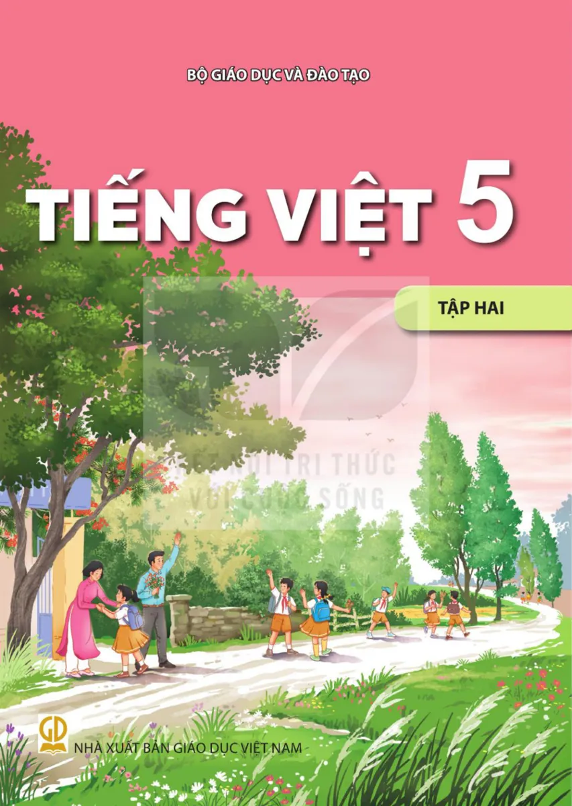
BÙI MẠNH HÙNG (Tổng Chủ biên)
_
TRẤN THỊ HIỀN LƯƠNG (Chủ biên)
LÊ THỊ LAN ANH - ĐỒ HỒNG DƯƠNG - VŨ THỊ THANH HƯƠNG
NGUYÊN THỊ KIM OANH - ĐĂNG THỊ HẢO TÂM
TẬP HAI
NHÀ XUẤT BẢN GIÁO DỤC VIỆT NAM:
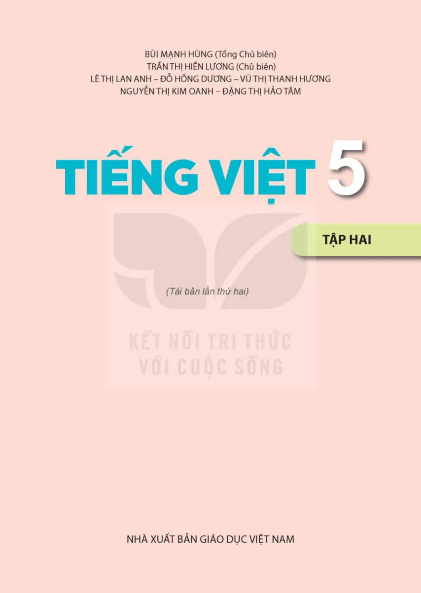
BÙI MẠNH HÙNG (Tổng Chủ biên)
TRẤN THỊ HIẾN LƯƠNG (Chủ biên)
LÊ THỊ LAN ANH - ĐỒ HỒNG DƯƠNG - VŨ THỊ THANH HƯƠNG
NGUYÊN THỊ KIM OANH - ĐẶNG THỊ HẢO TÂM
TẬP HAI
KẾT NũI TRI THỨP
VI pU0 SŨNG
NHÀ XUẤT BẢN GIÁO DỤC VIỆT NAM
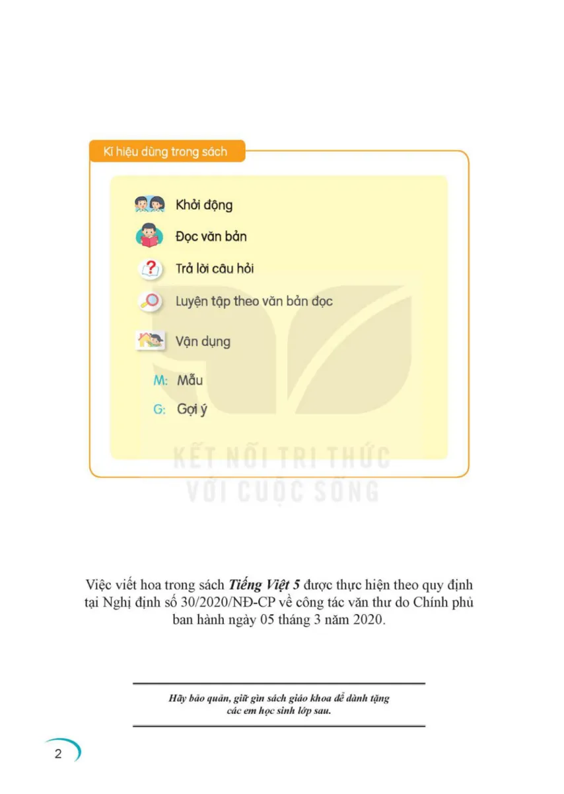
SÁCH GIÁO KHOA ĐƯỢC THẤM ĐỊNH BỞI HỘI ĐỒNG QUỐC GIA
THẤM ĐỊNH SÁCH GIÁO KHOA LỚP 5
(Theo Quyết định số 1963/QĐ-BGDĐT ngày 05 tháng 7 năm 2023
của Bộ trưởng Bộ Giáo dục và Đào tạo)
KẾT NũI TRI THỨP
VữI 0Uñ0
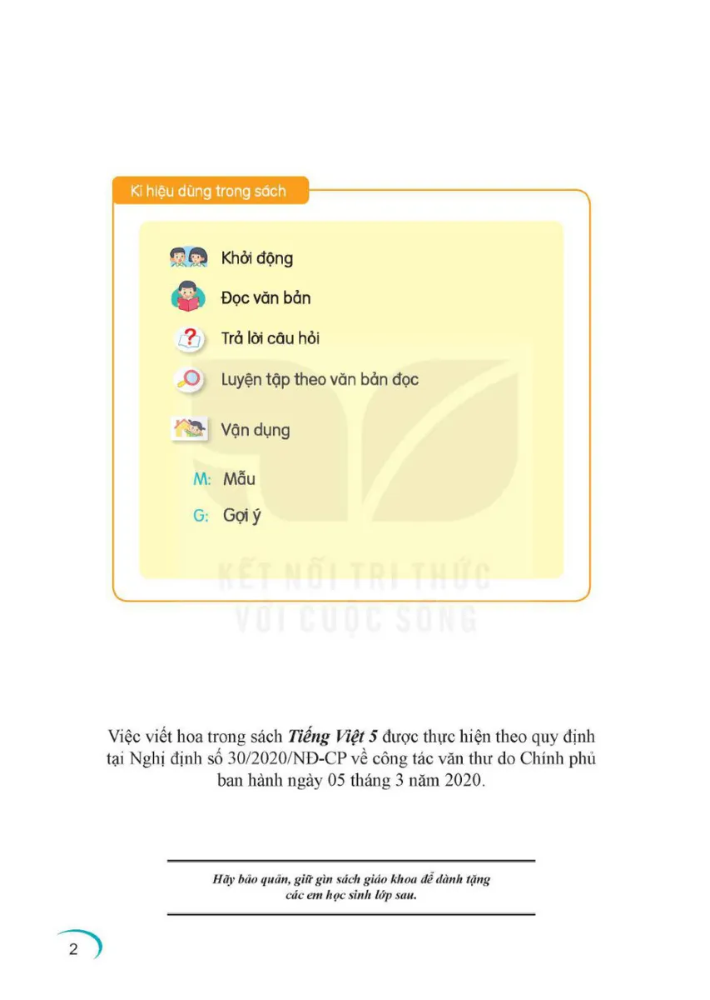
Kí hiệu dùng trong sách
Khởi động
kề MÃ
Đọc văn bản
Trẻ lời câu hỏi
Luyện tập theo văn bản đọc
Vận dụng
M:
G: Gợi ý
LUDbG SÙŨNG
Việc viết hoa trong sách Ti lắng Việt 5 được thực hiện theo quy định
tại Nghị định số 30/2020/NĐ-CP về công tác văn thư do Chính phủ
ban hành ngày 05 tháng 3 năm 2020.
Hấp bảo quản, giữ gìn sách giáo khoa để dành tặng
các em học sinh lớp sau.
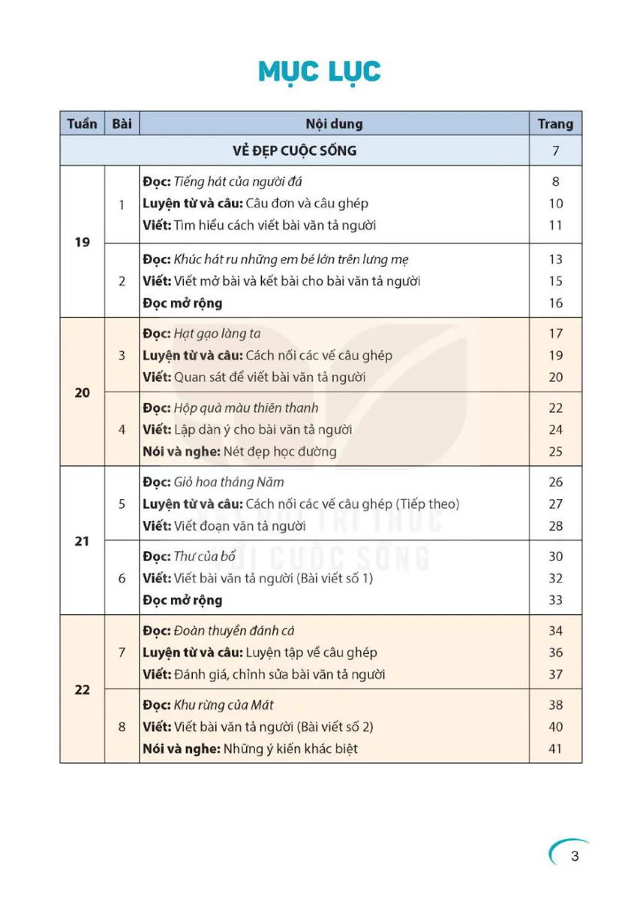
MUC LỤC
Tuần
Bài
Nội dung
Trang
VỀ ĐẸP CUỘC SỐNG
7
Đọc: Tiếng hát của người đá
8
1
Luyện từ và câu: Câu đơn và câu ghép
18
'Viết: Tìm hiểu cách viết bài văn tả người
11
19
Đọc: Khúc hát ru những em bé lớn trên lưng mẹ
lôi
2
Viết: Viết mở bài và kết bài cho bài văn tả người
15
Đọc mở rộng
16
'Đọc: Hạt gạo làng ta
tế
5
Luyện từ và câu: Cách nối các vế câu ghép
Tôi
Viết: Quan sát để viết bài văn tả người
20
20
Đọc: Hộp quà màu thiên thanh
22
4
Viết: Lập dàn ý cho bài văn tả người
24
Nói và nghe: Nét đẹp học đường
25
Đọc: Giỏ hoa tháng Năm
26
5
Luyện từ và câu: Cách nối các vế câu ghép (Tiếp theo)
27
Viết: Viết đoạn văn tả người
28
21
Đọc: Thư của bố
0 SŨNB
30
6
'Viết: Viết bài văn tả người (Bài viết số 1)
32
|Đọc mở rộng
33
Đọc: Đoàn thuyền đánh cá
34
7
Luyện từ và câu: Luyện tập về câu ghép
36
'Viết: Đánh giá, chỉnh sửa bài văn tả người
37
22
'Đọc: Khu rừng của Mát
38
8
|Viết: Viết bài văn tả người (Bài viết số 2)
40
Nói và nghe: Những ý kiến khác biệt
41
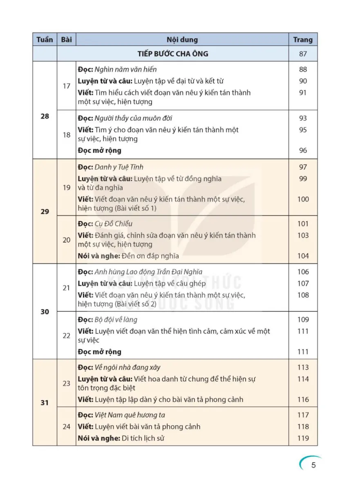
Tuần
Nội dung
Trang
HƯƠNG SẮC TRĂM MIỀN
42
Đọc: Hội thổi cơm thi ở Đồng Vân
43
Luyện từ và câu: Liên kết câu bằng cách lặp từ ngữ
45
9
'Viết: Tìm hiểu cách viết đoạn văn thể hiện tình cảm,
46
cảm xúc về một sự việc
23
Đọc: Những búp chè trên cây cổ thụ
48
10
Viết: Tìm ý cho đoạn văn thể hiện tình cảm, cảm xúc
5
lvề một sự việc
Đọc mở rộng
52
Đọc: Hương cốm mùa thu
53
T11
Luyện từ và câu: Liên kết câu bằng từ ngữ nối
54
'Viết: Viết đoạn văn thể hiện tình cảm, cảm xúc về một
56
|sự việc
24
Vũ điệu trên nền thổ cẩm
57
12
Viết: Đánh giá, chỉnh sửa đoạn văn thể hiện tình cảm,
59
cảm xúc về một sự việc
|Nói và nghe: Địa điểm tham quan, du lịch
60
Đọc: Đàn trưng - tiếng ca đại ngàn
61
13 Luyện từ và câu: Liên kết câu bằng từ ngữ thay thế
62
Viết: Tìm hiểu cách viết chương trình hoạt động
64
25
Đọc: Đường quê Đồng Tháp Mười
66
14 |Viết: Viết chương trình hoạt động (Bài viết số 1)
68
Đọc mở rộng
69
Đọc: Xuống ba lá quê tôi
70
15 Luyện từ và câu: Luyện tập về liên kết câu trong đoạn văn
71
Viết: Đánh giá, chỉnh sửa chương trình hoạt động
?2
26
Đọc: Về thăm Đất Mũi
73
16
Viết: Viết chương trình hoạt động (Bài viết số 2)
75
Nói và nghe: Sản vật địa phương
75
27
Ôn tập và Đánh giá giữa học kì II
4
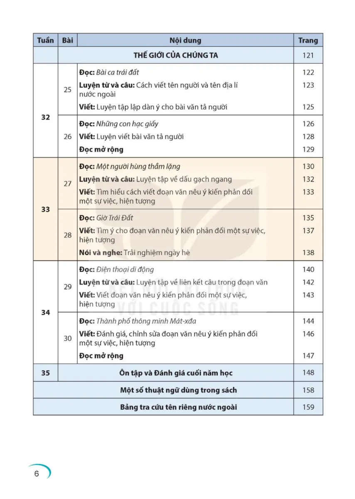
Tuần
Nội dung
Trang
TIẾP BƯỚC CHA ÔNG
87
Đọc: Nghìn năm văn hiến
88
lý
Luyện từ và câu: Luyện tập về đại từ và kết từ
90
Viết: Tìm hiểu cách viết đoạn văn nêu ý kiến tán thành
91
| một sự việc, hiện tượng
28
Đọc: Người thầy của muôn đời
95
Viết: Tìm ý cho đoạn văn nêu ý kiến tán thành một
tò
18 'sự việc, hiện tượng
Đọc mở rộng
96
Đọc: Danh y Tuệ Tĩnh
g7
Luyện từ và câu: Luyện tập về từ đổng nghĩa
99
19 |và từ đa nghĩa
'Viết: Viết đoạn văn nêu ý kiến tán thành một sự việc,
100
29
|hiện tượng (Bài viết số 1)
'Đọc: Cụ Đồ Chiểu
101
20
'Viết: Đánh giá, chỉnh sửa đoạn văn nêu ý kiến tán thành
103
| một sự việc, hiện tượng
Nói và nghe: Đền ơn đáp nghĩa
104
Đọc: Anh hùng Lao động Trần Đại Nghĩa
106
21
Luyện từ và câu: Luyện tập về câu ghép
107
Viết đoạn văn nêu ý kiến tán thành một sự việc,
108
|hiện tượng (Bài viết số 2)
30
'Đọc: Bộ đội về làng
109
22
Viết: Luyện viết đoạn văn thể hiện tình cảm, cảm xúc về một
sự việc
Đọc mở rộng
111
Đọc: Về ngôi nhà đang xây
113
23
|Luyện từ và câu: Viết hoa danh từ chung để thể hiện sự
114
tôn trọng đặc biệt
31
Viết: Luyện tập lập dàn ý cho bài văn tả phong cảnh
116
Đọc: Việt Nam quê hương ta
117
23
'Viết: Luyện viết bài văn tả phong cảnh
118
Nói và nghe: Di tích lịch sử
119
5
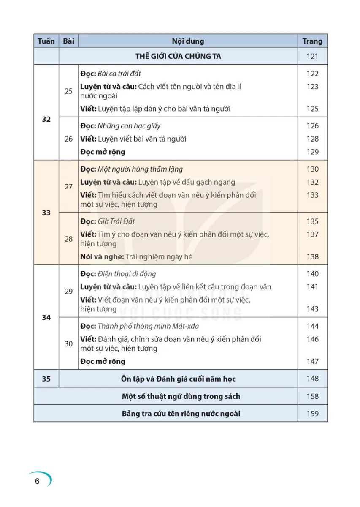
Tuần
Nội dung
Trang
THẾ GIỚI CỦA CHÚNG TA
121
Đọc: Bài ca trái đất
122
25
|Luyện từ và câu: Cách viết tên người và tên địa lí
123
'nước ngoài
Viết: Luyện tập lập dàn ý cho bài văn tả người
Lệ»
32
Đọc: Những con hạc giấy
126
26 Viết: Luyện viết bài văn tả người
128
Đọc mở rộng
129
Đọc: Một người hùng thầm lặng
130
Luyện từ và câu: Luyện tập về dấu gạch ngang
27
132
'Viết: Tìm hiểu cách viết đoạn văn nêu ý kiến phản đối
|một sự việc, hiện tượng
33
Đọc: Giờ Trái Đất
135
28
|Viết: Tìm ý cho đoạn văn nêu ý kiến phản đối một sự việc,
137
| hiện tượng
INói và nghe: Trải nghiệm ngày hà
138
Đọc: Điện thoại di động
140
29
Luyện từ và câu: Luyện tập về liên kết câu trong đoạn văn
141
Viết: Viết đoạn văn nêu ý kiến phản đối một sự việc,
| hiện tượng
143
34
Đọc: Thành phố thông minh Mát-xđa
144
30
Viết: Đánh giá, chỉnh sửa đoạn văn nêu ý kiến phản đối
146
| một sự việc, hiện tượng
Đọc mở rộng
147
35
Ôn tập và Đánh giá cuối năm học
148
Một số thuật ngữ dùng trong sách
158
Bảng tra cứu tên riêng nước ngoài
159
6B
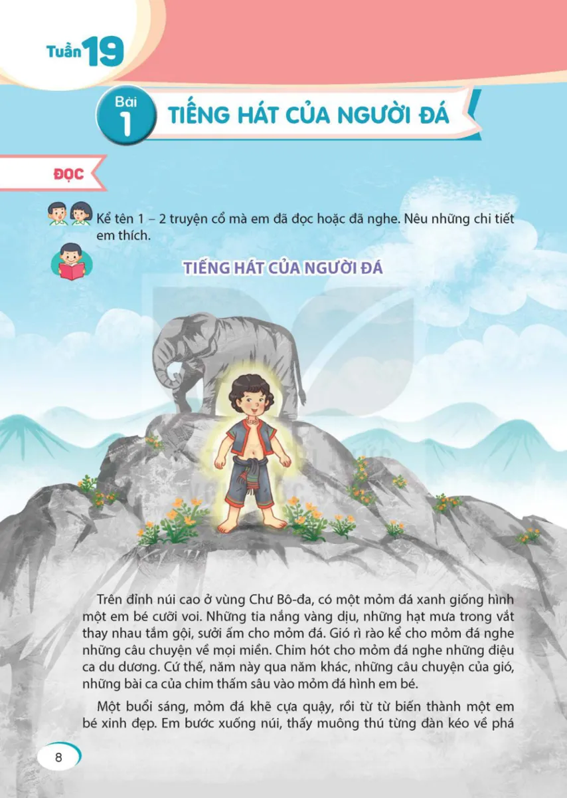
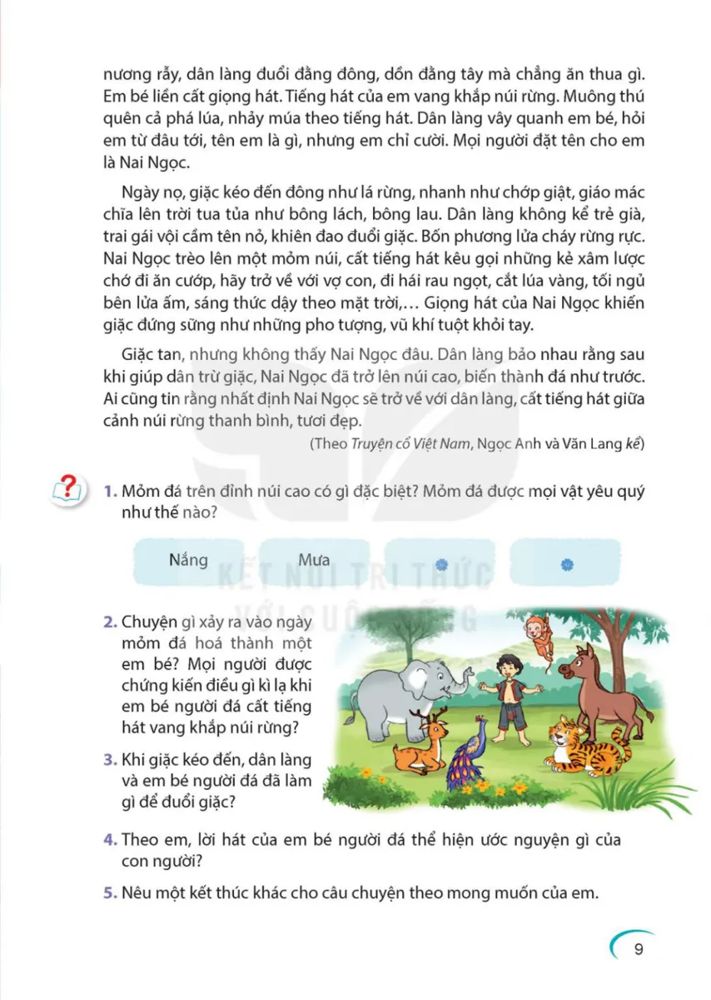
Tuân '
19
Bòi
TIÊNG HÁT CỦA NGƯỜI ĐÁ
1
ĐỌC
Kể tên 1 - 2 truyện cổ mà em đã đọc hoặc đã nghe. Nêu những chỉ tiết
em thích.
TIẾNG HÁT CỦA NGƯỜI ĐÁ
Trên đỉnh núi cao ở vùng Chư Bô-đa, có một mỏm đá xanh giống hình
một em bé cưỡi voi. Những tia nắng vàng dịu, những hạt mưa trong vắt
thay nhau tắm gội, sưởi ấm cho mỏm đá. Gió rì rào kế cho mỏm đá nghe
những câu chuyện về mọi miền. Chim hót cho mỏm đá nghe những điệu
ca du dương. Cứ thế, năm này qua năm khác, những câu chuyện của gió,
những bài ca của chim thấm sâu vào mỏm đá hình em bé.
Một buổi sáng, mỏm đá khẽ cựa quậy, rồi từ từ biến thành một em
bé xinh đẹp. Em bước xuống núi, thấy muông thú từng đàn kéo về phá
8
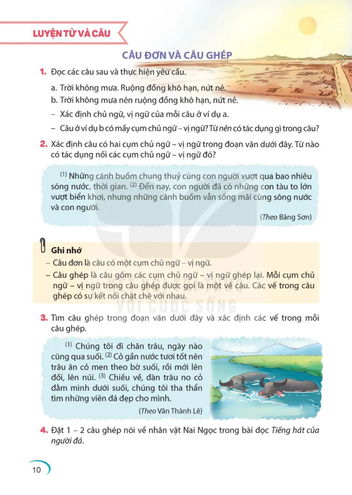
hương rấy, dân làng đuổi đằng đông, dồn đằng tây mà chẳng ăn thua gì.
Em bé liền cất giọng hát. Tiếng hát của em vang khắp núi rừng. Muông thú
quên cả phá lúa, nhảy múa theo tiếng hát. Dân làng vây quanh em bé, hỏi
em từ đâu tới, tên em là gì, nhưng em chỉ cười. Mọi người đặt tên cho em
là Nai Ngọc.
Ngày nọ, giặc kéo đến đông như lá rừng, nhanh như chớp giật, giáo mác
chĩa lên trời tua tủa như bông lách, bông lau. Dân làng không kể trẻ già,
trai gái vội cầm tên nỏ, khiên đao đuổi giặc. Bốn phương lửa cháy rừng rực.
Nai Ngọc trèo lên một mỏm núi, cất tiếng hát kêu gọi những kẻ xâm lược
chớ đi ăn cướp, hãy trở về với vợ con, đi hái rau ngọt, cắt lúa vàng, tối ngủ
bên lửa ấm, sáng thức dậy theo mặt trời,... Giọng hát của Nai Ngọc khiến
giặc đứng sững như những pho tượng, vũ khí tuột khỏi tay.
Giặc tan, nhưng không thấy Nai Ngọc đâu. Dân làng bảo nhau rằng sau
khi giúp dân trừ giặc, Nai Ngọc đã trở lên núi cao, biến thành đá như trước.
Ai cũng tin rằng nhất định Nai Ngọc sẽ trở về với dân làng, cất tiếng hát giữa
cảnh núi rừng thanh bình, tươi đẹp.
(Theo Truyện cổ Việt Nam, Ngọc Anh và Văn Lang kể)
1. Mỏm đá trên đỉnh núi cao có gì đặc biệt? Mỏm đá được mọi vật yêu quý
như thế nào?
Nắng
Mưa
2. Chuyện gì xảy ra vào ngày
mỏm đá hoá thành một
em bé? Mọi người được
chứng kiến điều gì kì lạ khi
em bé người đá cất tiếng
hát vang khắp núi rừng?
3. Khi giặc kéo đến, dân làng
và em bé người đá đã làm
gì để đuổi giặc?
4. Theo em, lời hát của em bé người đá thể hiện ước nguyện gì của
con người?
5. Nêu một kết thúc khác cho câu chuyện theo mong muốn của em.
LUYỆN TỪ VÀ CÂU
CÂU ĐƠN VÀ CÂU GHÉP
4. Đọc các câu sau và thực hiện yêu cầu.
a. Trời không mưa. Ruộng đồng khô hạn, nứt nẻ.
b. Trời không mưa nên ruộng đồng khô hạn, nứt nẻ.
- Xác định chủ ngữ, vị ngữ của mỗi câu ở ví dụ a.
—. Câu ởví
dụ b có mấy cụm chủ ngữ - vị ngữ? Từ nền có tác dụng gì trong câu?
2. Xác định câu có hai cụm chủ ngữ - vị ngữ trong đoạn văn dưới đây. Từ nào
có tác dụng nối các cụm chủ ngữ - vị ngữ đó?
Œ) Những cánh buồm chung thuỷ cùng con người vượt qua bao nhiêu
sóng nước, thời gian. 2) Đến nay, con người đã có những con tàu to lớn
vượt biển khơi, nhưng những cánh buồm vẫn sống mãi cùng sông nước
và con người.
(Theo Băng Sơn)
Ghi nhớ
— Câu đơn là câu có một cụm chủ ngữ - vị ngữ.
- Câu ghép là câu gồm các cụm chủ ngữ - vị ngữ ghép lại. Mỗi cụm chủ
ngữ - vị ngữ trong câu ghép được gọi là một vế câu. Các vế trong câu
ghép có sự kết nối chặt chẽ với nhau.
3. Tìm câu ghép trong đoạn văn dưới đây và xác định các vế trong mỗi
câu ghép.
q) Chúng tôi đi chăn trâu, ngày nào
cũng qua suối. 1?) Cỏ gần nước tươi tốt nên
trâu ăn cỏ men theo bờ suối, rồi mới lên
đồi, lên núi. 3) Chiều về, đàn trâu no cỏ
đằm mình dưới suối, chúng tôi tha thần
tìm những viên đá đẹp cho mình.
(Theo Văn Thành Lê)
4. Đặt 1 - 2 câu ghép nói về nhân vật Nai Ngọc trong bài đọc Tiếng hát của
người đá.
10
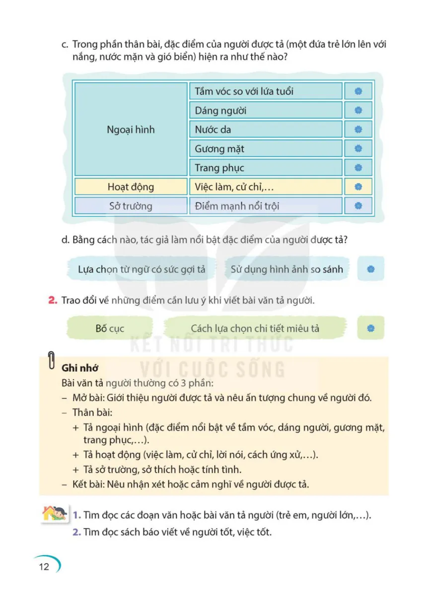
VIẾT
TÌM HIỂU CÁCH VIẾT BÀI VĂN TẢ NGƯỜI
$. Đọc bài văn dưới đây và thực hiện yêu cầu.
Chú bé vùng biển
Thắng, con cá vược của thôn Bần, là địch thủ bơi lội đáng gờm nhất của
bọn trẻ.
Lúc này, Thắng đang ngồi trên chiếc thuyền đậu ở ngoài cùng. Nó trạc
tuổi thằng Chân “phệ”nhưng cao hơn hẳn cái đầu. Nó cởi trần, phơi nước da
tám đỏ khoẻ mạnh của những đứa trẻ lớn lên với nắng, nước mặn và
gió biển. Thân hình nó rắn chắc, cân đối, nở nang: cổ. mập, vai rộng,
ngực nở căng, bụng thon hẳn rõ những múi, hai cánh tay gân guốc như hai
cái bơi chèo, cặp đùi dế chắc nịch. Thắng có cặp mắt to và sáng. Miệng tươi,
hay cười. Cái trán hơi dô ra, trông có vẻ là một tay bướng bỉnh, gan dạ.
Tấm lưới rộng đang vá phủ lên hai đầu gối, tay Thắng cầm kim tre đưa
lên đưa xuống thoăn thoắt coi bộ rất thành thạo. Chỗ lưới thủng cứ mỗi lúc
một nhỏ dẫn lại. Tay vẫn thoăn thoắt vá lưới nhưng mắt Thắng thỉnh thoảng
lại nhìn lên bờ như có ý chờ đợi ai. Nhác trông thấy lũ trẻ chạy xuống bến,
nó vội vàng đặt tấm lưới trên gối xuống, bước đến bên mạn thuyền, bám
tay vào cọc chèo và đu mình xuống nước, êm không một tiếng động.
Nó ngụp một cái lặn biến đi như một con cá.
Bọn trẻ đứng trên bờ nhìn nó lặn vừa ghen vừa phục.
(Theo Trần Vân)
0U00
a. Người được tả trong bài văn trên là ai?
b. Tìm phần mở bài, thân bài, kết bài của bài văn trên và nêu nội dung chính
của mỗi phần.
II
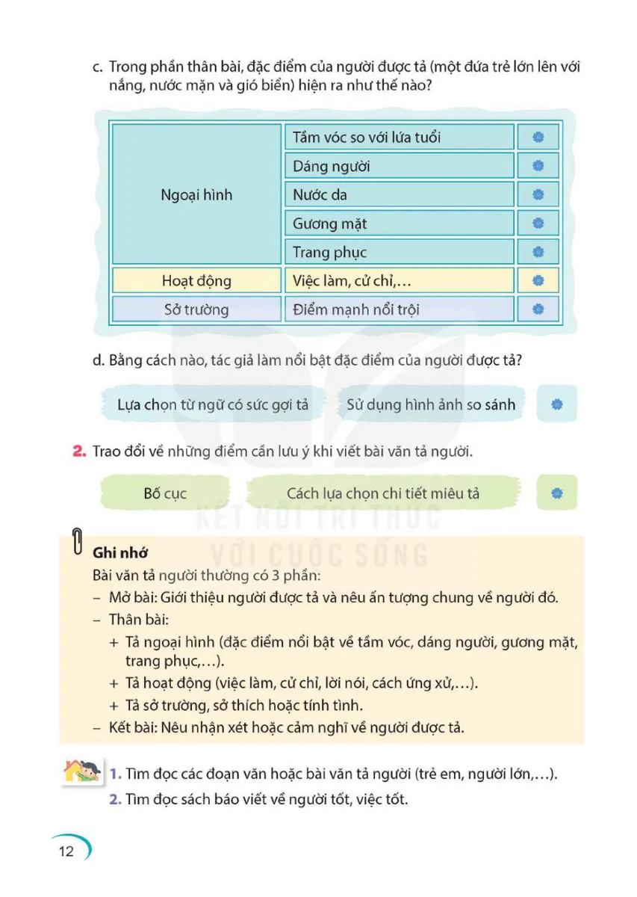
c. Trong phần thân bài, đặc điểm của người được tả (một đứa trẻ lớn lên với
nắng, nước mặn và gió biển) hiện ra như thế nào?
Tầm vóc so với lứa tuổi
Dáng người
bà,
Ngoại hình
Nước da
Gương mặt
Trang phục
Hoạt động
Việc làm, cử chỉ,...
Sở trường
Điểm mạnh nổi trội
d. Bằng cách nào, tác giả làm nổi bật đặc điểm của người được tả?
Lựa chọn từ ngữ có sức gợi tả
Sử dụng hình ảnh so sánh
2. Trao đối về những điểm cần lưu ý khi viết bài văn tả người.
Bố cục
Cách lựa chọn chỉ tiết miêu tả
Ghi nhớ
VứI (Up $SNB
Bài văn tả người thường có 3 phần:
— Mởbài: Giới thiệu người được tả và nêu ấn tượng chung về người đó.
— Thân bài:
+ Tả ngoại hình (đặc điểm nổi bật về tầm vóc, dáng người, gương mặt,
trang phục,...).
+ Tả hoạt động (việc làm, cử chỉ, lời nói, cách ứng xử,...).
+ Tả sở trường, sở thích hoặc tính tình.
- Kết bài: Nêu nhận xét hoặc cảm nghĩ về người được tả.
1. Tìm đọc các đoạn văn hoặc bài văn tả người (trẻ em, người lớn,...).
2. Tìm đọc sách báo viết về người tốt, việc tốt.
12
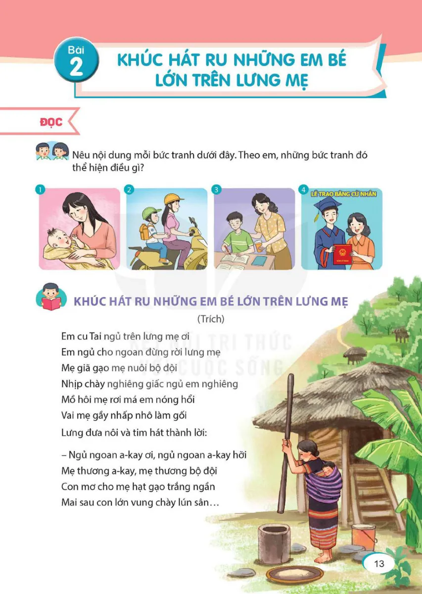
'Bài
2
KHUC HAT RU NHƯNG EM BÊ
LỚN TRÊN LƯNG ME
ĐỌC
Nêu nội dung mỗi bức tranh dưới đây. Theo em, những bức tranh đó
thể hiện điều gì?
FẺ
BẰNG CŨ; NHẬN|
KHÚC HÁT RU NHỮNG EM BÉ LỚN TRÊN LƯNG MẸ
(Trích)
Em cu Tai ngủ trên lưng mẹ ơi
Em ngủ cho ngoan đừng rời lưng mẹ
Mẹ giã gạo mẹ nuôi bộ đội
xi
|
Nhịp chày nghiêng giấc ngủ em nghiêng
Mồ hôi mẹ rơi má em nóng hổi
Vai mẹ gầy nhấp nhô làm gối
Lưng đưa nôi và tim hát thành lời:
- Ngủ ngoan a-kay ơi, ngủ ngoan a-kay hỡi
Mẹ thương a-kay, mẹ thương bộ đội
Con mơ cho mẹ hạt gạo trắng ngần
Mai sau con lớn vung chày lún sân..
13
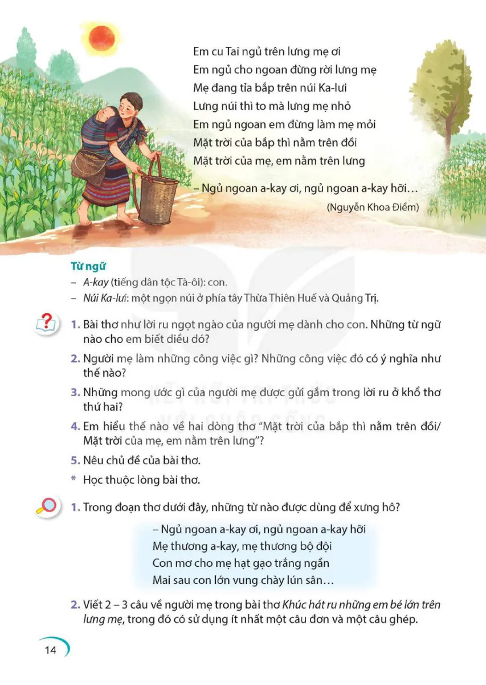
Em cu Tai ngủ trên lưng mẹ ơi
Em ngủ cho ngoan đừng rời lưng mẹ
Mẹ đang tỉa bắp trên núi Ka-lưi
Lưng núi thì to mà lưng mẹ nhỏ
Em ngủ ngoan em đừng làm mẹ mỏi
Mặt trời của bắp thì nằm trên đổi
Mặt trời của mẹ, em nằm trên lưng
- Ngủ ngoan a-kay ơi, ngủ ngoan a-kay hỡi..
(Nguyễn Khoa Điểm) ;
Từ ngữ
— A-kay (tiếng dân tộc Tà-ôi): con.
— Núi Ka-lưi: một ngọn núi ở phía tây Thừa Thiên Huế và Quảng Trị.
1. Bài thơ như lời ru ngọt ngào của người mẹ dành cho con. Những từ ngữ
nào cho em biết điều đó?
2. Người mẹ làm những công việc gì? Những công việc đó có ý nghĩa như
thế nào?
3. Những mong ước gì của người mẹ được gửi gắm trong lời ru ở khổ thơ
thứ hai?
4. Em hiểu thế nào về hai dòng thơ “Mặt trời của bắp thì nằm trên đối/
Mặt trời của mẹ, em nằm trên lưng”?
5. Nêu chủ đề của bài thơ.
*- Học thuộc lòng bài thơ.
1. Trong đoạn thơ dưới đây, những từ nào được dùng để xưng hô?
— Ngủ ngoan a-kay ơi, ngủ ngoan a-kay hỡi
Mẹ thương a-kay, mẹ thương bộ đội
Con mơ cho mẹ hạt gạo trắng ngần
Mai sau con lớn vung chày lún sân...
2. Viết 2 - 3 câu về người mẹ trong bài thơ Khúc hát ru những em bé lớn trên
lưng mẹ, trong đó có sử dụng ít nhất một câu đơn và một câu ghép.
14
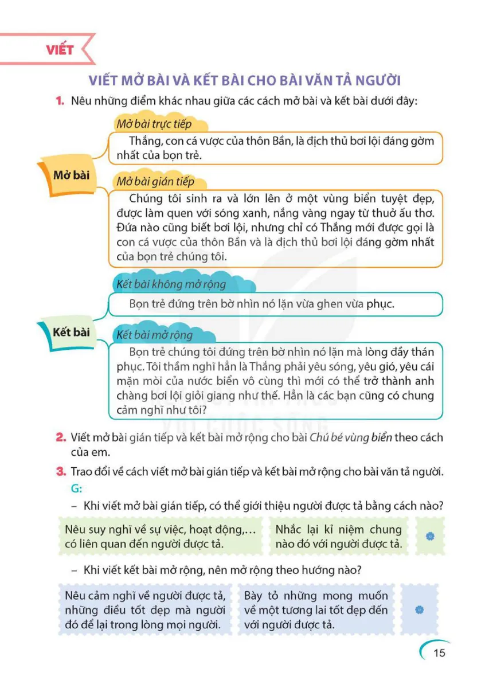
VIẾT MỞ BÀI VÀ KẾT BÀI CHO BÀI VĂN TẢ NGƯỜI
1. Nêu những điểm khác nhau giữa các cách mở bài và kết bài dưới đây:
Mở bài trực tiếp.
Thắng, con cá vược của thôn Bần, là địch thủ bơi lội đáng gờm.
nhất của bọn trẻ.
Mở bài
Mở bài gián tiếp
Chúng tôi sinh ra và lớn lên ở một vùng biển tuyệt đẹp,
được làm quen với sóng xanh, nắng vàng ngay từ thuở ấu thơ.
Đứa nào cũng biết bơi lội, nhưng chỉ có Thắng mới được gọi là
con cá vược của thôn Bần và là địch thủ bơi lội đáng gờm nhất
của bọn trẻ chúng tôi.
Kết bài không mởrộng
Bọn trẻ đứng trên bờ nhìn nó lặn vừa ghen vừa phục.
Kết bài
Kết bài mở rộng.
Bọn trẻ chúng tôi đứng trên bờ nhìn nó lặn mà lòng đầy thán
phục. Tôi thầm nghĩ hẳn là Thắng phải yêu sóng, yêu gió, yêu cái
mặn mòi của nước biển vô cùng thì mới có thể trở thành anh
chàng bơi lội giỏi giang như thế. Hẳn là các bạn cũng có chung
cảm nghĩ như tôi?
2. Viết mở bài gián tiếp và kết bài mở rộng cho bài Chú bé vùng biển theo cách
của em.
3. Trao đổi về cách viết mở bài gián tiếp và kết bài mở rộng cho bài văn tả người.
G:
- Khi viết mở bài gián tiếp, có thể giới thiệu người được tả bằng cách nào?
Nêu suy nghí về sự việc, hoạt động,...
Nhắc lại kỉ niệm chung
có liên quan đến người được tả.
nào đó với người được tả.
— Khi viết kết bài mở rộng, nên mở rộng theo hướng nào?
Nêu cảm nghĩ về người được tả,
Bày tỏ những mong muốn
những điều tốt đẹp mà người
về một tương lai tốt đẹp đến
đó để lại trong lòng mọi người.
với người được tả.
15
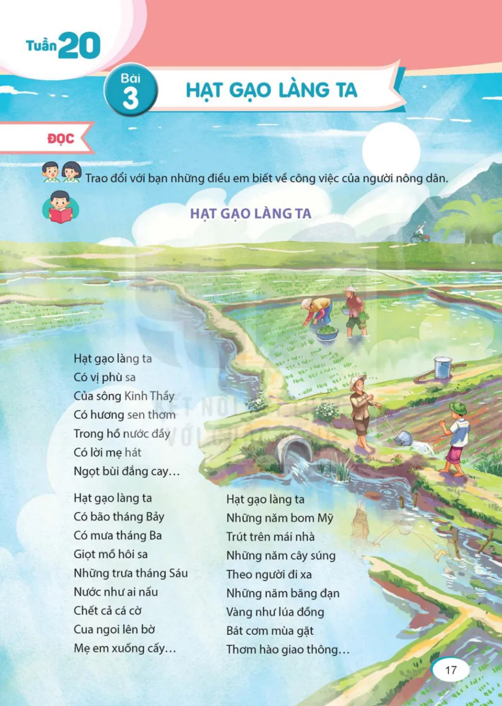
4. Đọc sách báo viết về người tốt, việc tốt.
G;
( ÂU HC SINH NGHÈ0 TRñ LỊI 20 TRIỆU ĐÔNG NHẬT DƯỢG
Cậu học sinh nghèo trả lại 20 triệu đồng nhặt được là câu chuyện
có thật, được đăng trên báo Tiền phong ngày 15 tháng 3 năm 2015.
Truyện kể về em Hà Trung Tuấn, học sinh lớp 7B Trường Trung học
cơ sở Lâm Sơn, xã Nghĩa Lâm, huyện Nghĩa Đàn, tỉnh Nghệ An.
Trên đường cùng mẹ từ chợ về nhà, em nhặt được một chiếc
ví tiền. Ngay sau đó, em đã nhờ người liên hệ trả lại chiếc ví cho.
người bị mất.
Guương tên tin thao BÁC.
theo ở BÁC
Cong bạn"
Gương thiếu nhi làm theo lời Bác là bộ sách được
(đi học
phát hành nhân dịp kỉ niệm 80 năm ngày thành lập
Đội Thiểu niên Tiên phong Hồ Chí Minh. Bộ sách
gồm nhiều truyện, mỗi truyện kể về một tấm gương
thiếu nhỉ làm việc tốt như: Công bạn đi học, Cậu bé
mồ côi ham học,. _
2. Viết phiếu đọc sách theo mẫu.
PHIẾU ĐỌC SÁCH
Tên sách báo: &
Tác giả:
Ngày đọc:
Những việc tốt được kể: &
Người làm việc tốt:
Ý nghĩa, sự lan toả của việc tốt đối với cộng đồng: &
Bài học rút ra từ việc tốt hoặc cảm nghĩ về người làm việc tốt: &
Mức độ yêu thích: #r Ýr Ýr #v Ýr
3. Dựa vào phiếu đọc sách, trao đổi với bạn về ý nghĩa của những việc làm tốt
đối với cộng đồng.
Chia sẻ với người thân về một việc tốt em đã làm hoặc em mong muốn
được làm cho cộng đồng.
16
Tuân. 20
Bùi
3
HẠT GẠO LÀNG TA
Trao đổi với bạn những điều em biết về công việc của người nông dân.
HẠT GẠO LÀNG TA
Hạt gạo làng ta
Có vị phù sa
Của sông Kinh Thây
Có hương sen thơm
Trong hồ nước đầy
Có lời mẹ hát
Ngọt bùi đẳng cay...
Hạt gạo làng ta
Hạt gạo làng ta
Có bão tháng Bảy
Những năm bom Mỹ
Có mưa tháng Ba
Trút trên mái nhà
Giọt mồ hôi sa
Những năm cây súng
Những trưa tháng Sáu
Theo người đi xa
Nước như ai nấu
Những năm băng đạn
Chất cả cá cờ
Vàng như lúa đồng
Cua ngoi lên bờ
Bát cơm mùa gặt
Mẹ em xuống cấy...
Thơm hào giao thông...
17
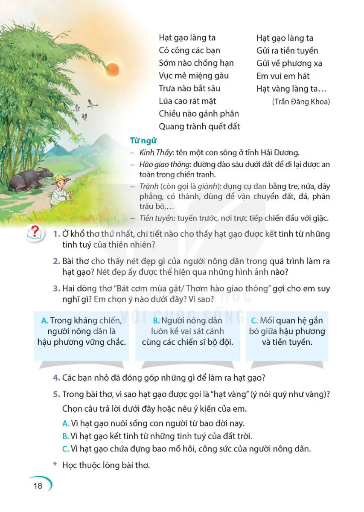
Hạt gạo làng ta
Hạt gạo làng ta
Có công các bạn
Gửi ra tiền tuyến
Sớm nào chống hạn
Gửi về phương xa
Vục mẻ miệng gàu
Em vui em hát
Trưa nào bắt sâu
Hạt vàng làng ta...
Lúa cao rát mặt
(Trần Đăng Khoa)
3
Chiều nào gánh phân
Quang trành quết đất
Từ ngữ
Kinh Thây: tên một con sông ở tỉnh Hải Dương.
— Hào giao thông: đường đào sâu dưới đất để đi lại được an
toàn trong chiến tranh.
Trành (còn gọi là giành): dụng cụ đan bằng tre, nứa, đáy
phẳng, có thành, dùng để vận chuyển đất, đá, phân
trâu bò,...
Tiên tuyến: tuyến trước, nơi trực tiếp chiến đấu với giặc.
2 1. Ở khổ thơ thứ nhất, chỉ tiết nào cho thấy hạt gạo được kết tinh từ những
tỉnh tuý của thiên nhiên?
2. Bài thơ cho thấy nét đẹp gì của người nông dân trong quá trình làm ra
hạt gạo? Nét đẹp ấy được thể hiện qua những hình ảnh nào?
3. Hai dòng thơ “Bát cơm mùa gặt/ Thơm hào giao thông” gợi cho em suy
nghĩ gì? Em chọn ý nào dưới đây? Vì sao?
A. Trong kháng chiến,
B. Người nông dân
c. Mối quan hệ gắn
ng ƯỜI nông dân là
luôn kế vai sát cánh
bó giữa hậu phương
hậu phương vững chắc.
cùng các chiến sĩ bộ đội.
và tiền tuyến.
4. Các bạn nhỏ đã đóng góp những gì để làm ra hạt gạo?
5, Trong bài thơ, vì sao hạt gạo được gọi là “hạt vàng” (ý nói quý như vàng)?
Chọn câu trả lời dưới đây hoặc nêu ý kiến của em.
A. Vì hạt gạo nuôi sống con người từ bao đời nay.
B. Vì hạt gạo kết tinh từ những tinh tuý của đất trời.
C. Vì hạt gạo chứa đựng bao mồ hôi, công sức của người nông dân.
+ Học thuộc lòng bài thơ.
18
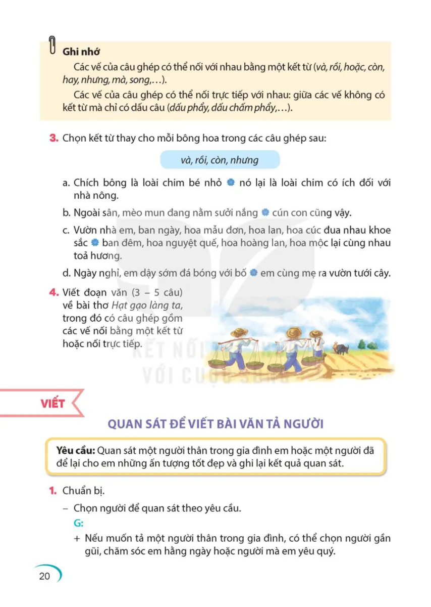
LUYỆN TỪ VÀ CÂU
CÁCH NỐI CÁC VẾ CÂU GHÉP
Tìm câu ghép trong các đoạn dưới đây và cho biết kết từ nào được dùng để
nối các vế câu.
a. Hoa bưởi là hoa cây còn hoa nhài là hoa bụi. Hoa cây có sức sống mạnh
mẽ. Hoa bụi có chút gì giản dị hơn. Hương toả từ những cánh hoa nhưng
hương bưởi và hương nhài chẳng bao giờ lẫn.
(Theo Ngô Văn Phú)
b. Năm nay, vườn của ông tôi được mùa cả hoa lẫn quả. Ôi chao, cây
khế sai chỉ chít những quả chín và giàn nhót đỏ mọng những chùm trái
ngon lành.
(Vũ Tú Nam)
c. Chiếc xe lao đi khá nhanh mà rất êm. Thỉnh thoảng, xe chạy chậm lại vì
vướng những xe phía trước rồi xe lại lướt lên như mũi tên.
(Theo Trần Thanh Địch)
G:
Câu ghép
Kết từ nối các vế câu
Hoa bưởi là hoa cây còn hoa nhài là
còn
hoa bụi.
2. Tìm các vế của mỗi câu ghép dưới đây và cho biết cách nối các vế câu ở bài
tập này có gì khác so với cách nối các vế câu ở bài tập 1.
a. Hoa cánh kiến nở vàng trên
rừng, hoa sở và hoa kim anh
trắng xoá.
(Xuân Quỳnh)
b. Dưới ánh trăng, dòng sông
sáng rực lên, những con sóng
nhỏ lăn tăn gợn đều mơn man
võ nhẹ vào hai bên bờ cát.
(Khuất Quang Thuy)
C Ở mảnh đất ấy, tháng Giêng, tôi đi đốt bãi, đào ổ chuột; tháng Tám
nước lên, tôi đánh giậm, úp cá, đơm tép; tháng Chín, tháng Mười, đi móc
con da dưới vệ sông.
(Nguyễn Khải)
19
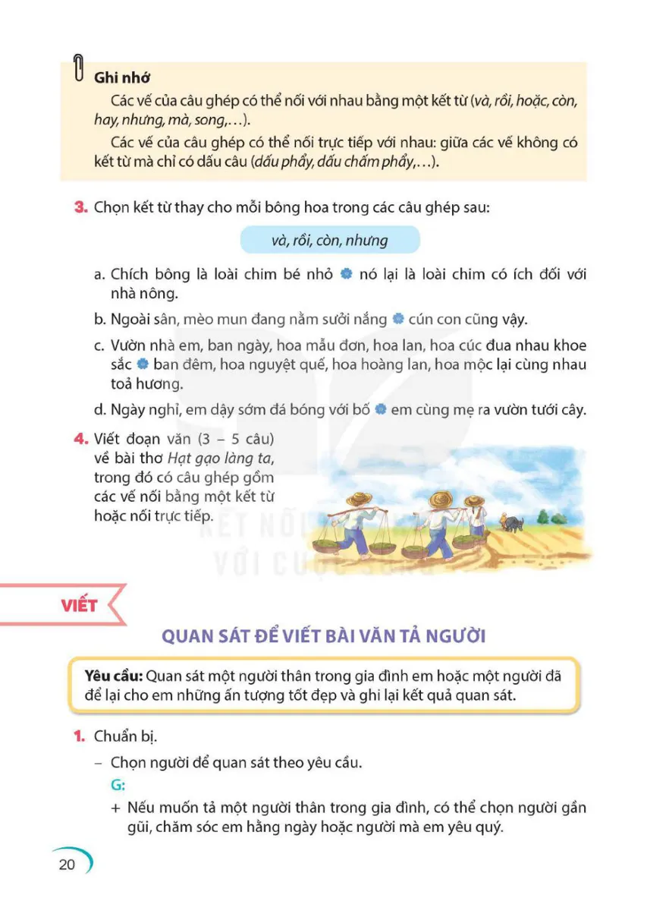
Ghi nhớ
Các vế của câu ghép có thể nối với nhau bằng một kết từ (và, rồi, hoặc, còn,
hay, nhưng, mà, song,...).
Các vế của câu ghép có thể nối trực tiếp với nhau: giữa các vế không có
kết từ mà chỉ có dấu câu (dấu phẩy, dấu chấm phẩy,...).
3. Chọn kết từ thay cho mỗi bông hoa trong các câu ghép sau:
và, rồi, còn, nhưng
a. Chích bông là loài chim bé nhỏ
nó lại là loài chim có ích đối với
nhà nông.
b. Ngoài sân, mèo mun đang nằm sưởi nắng # cún con cũng vậy.
c. Vườn nhà em, ban ngày, hoa mẫu đơn, hoa lan, hoa cúc đua nhau khoe
sắc # ban đêm, hoa nguyệt quế, hoa hoàng lan, hoa mộc lại cùng nhau
toả hương.
d. Ngày nghỉ, em dậy sớm đá bóng với bố # em cùng mẹ ra vườn tưới cây.
4. Viết đoạn văn (3 - 5 câu)
về bài thơ Hạt gạo làng ta,
trong đó có câu ghép gồm
các vế nối bằng một kết từ
hoặc nối trực tiếp.
Ỉ NữI
VfI PI
VIẾT
QUAN SÁT ĐỂ VIẾT BÀI VĂN TẢ NGƯỜI
Yêu cầu: Quan sát một người thân trong gia đình em hoặc một người đã
để lại cho em những ấn tượng tốt đẹp và ghi lại kết quả quan sát.
4. Chuẩn bị.
- Chọn người để quan sát theo yêu cầu.
G:
+ Nếu muốn tả một người thân trong gia đình, có thể chọn người gần
gũi, chăm sóc em hằng ngày hoặc người mà em yêu quý.
20
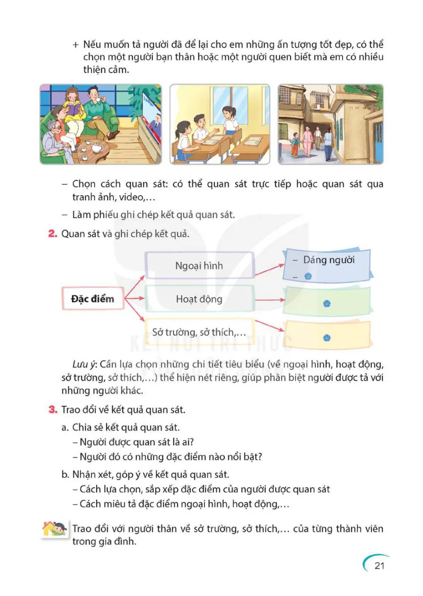
+ Nếu muốn tả người đã để lại cho em những ấn tượng tốt đẹp, có thể
chọn một người bạn thân hoặc một người quen biết mà em có nhiều
thiện cảm.
— Chọn cách quan sát: có thể quan sát trực tiếp hoặc quan sát qua
tranh ảnh, video,...
— Làm phiếu ghi chép kết quả quan sát.
2. Quan sát và ghi chép kết quả.
Ngoại hình
Dáng người
Đặc điểm
Hoạt động
Sở trường, sở thích,
Lưu ý: Cần lựa chọn những chỉ tiết tiêu biểu (về ngoại hình, hoạt động,
sở trường, sở thích,...) thể hiện nét riêng, giúp phân biệt người được tả với
những người khác.
3. Trao đối về kết quả quan sát.
a. Chia sẻ kết quả quan sát.
- Người được quan sát là ai?
- Người đó có những đặc điểm nào nổi bật?
b. Nhận xét, góp ý về kết quả quan sát.
- Cách lựa chọn, sắp xếp đặc điểm của người được quan sát
- Cách miêu tả đặc điểm ngoại hình, hoạt động,...
Trao đổi với người thân về sở trường, sở thích,... của từng thành viên
trong gia đình.
21
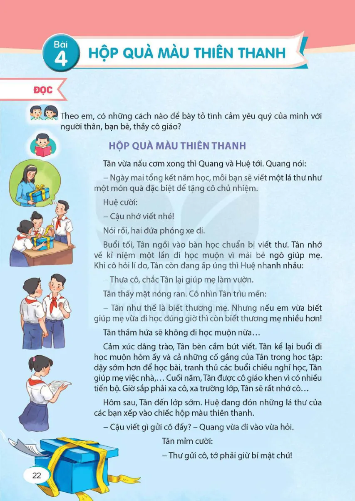
Bòi
HỘP QUÁ MÁU THIÊN THANH
A
ĐỌC
Theo em, có những cách nào để bày tỏ tình cảm yêu quý của mình với
người thân, bạn bè, thầy cô giáo?
HỘP QUÁ MÀU THIÊN THANH
Tân vừa nấu cơm xong thì Quang và Huệ tới. Quang nói:
= Ngày mai tổng kết năm học, mỗi bạn sẽ viết một lá thư như
một món quà đặc biệt để tặng cô chủ nhiệm.
Huệ cười:
— Cậu nhớ viết nhé!
Nói rồi, hai đứa phóng xe đi.
Buổi tối, Tân ngồi vào bàn học chuẩn bị viết thư. Tân nhớ
về kỉ niệm một lần đi học muộn vì mải bẻ ngô giúp mẹ.
Khi cô hỏi lí do, Tân còn đang ấp úng thì Huệ nhanh nhảu:
- Thưa cô, chắc Tân lại giúp mẹ làm vườn.
Tân thấy mặt nóng ran. Cô nhìn Tân trìu mến:
— Tân như thể là biết thương mẹ. Nhưng nếu em vừa biết
giúp mẹ vừa đi học đúng giờ thì còn biết thương mẹ nhiều hơn!
Tân thầm hứa sẽ không đi học muộn nữa...
Cảm xúc dâng trào, Tân bèn cầm bút viết. Tân kể lại buổi đi
học muộn hôm ấy và cả những cố gắng của Tân trong học tập:
dậy sớm hơn để học bài, tranh thủ các buổi chiều nghỉ học, Tân
giúp mẹ việc nhà,. .. Cuối năm, Tân được cô giáo khen vì có nhiều
tiến bộ. Giờ sắp phải xa cô, xa trường lớp, Tân sẽ rất nhớ cô...
Hôm sau, Tân đến lớp sớm. Huệ đang đón những lá thư của
các bạn xếp vào chiếc hộp màu thiên thanh.
— Cậu viết gì gửi cô đấy? - Quang vừa đi vào vừa hỏi.
Tân mỉm cười:
— Thư gửi cô, tớ phải giữ bí mật chứi
22
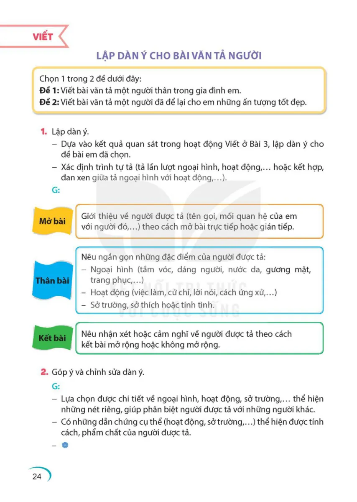
Nói xong, Tân đặt lá thư của mình vào chiếc hộp.
Cô giáo mặc áo dài màu thiên thanh bước vào lớp trong tiếng võ tay
giòn giã. Quang thay mặt lớp cảm ơn cô đã dạy dỗ. Đôi má cô ửng hồng khi
nhận hộp quà với lời nhắn của Quang: “Chúng em gửi cô hết ở trong này,
cô về đọc nhé!”
Ba mươi lăm lá thư tạo thành một hộp quà đặc biệt tặng cô được giữ bí
mật tuyệt đối. Chỉ cô giáo mới biết từng học trò đã viết gì trong những lá
thư ấy.
(Nguyễn Thu Hằng)
1. Lớp Tân có dự định gì trong buổi tổng kết năm học?
2. Khi viết thư cho cô giáo, Tân đã nhớ lại kỉ niệm gì?
3. Qua bức thư Tân viết, hãy đoán xem lí do nào khiến Tân đã cố gắng và có
nhiều tiến bộ trong học tập.
4. Những từ ngữ, chỉ tiết nào thể hiện tình cảm cô trò trong buổi lễ tổng kết
năm học?
5. Theo em, hình ảnh “hộp quà màu thiên thanh” trong câu chuyện có ý
nghĩa gì? Tìm một nhan đề khác cho câu chuyện.
1. Chọn nghĩa phù hợp với mỗi từ dưới đây:
Từ
Nghĩa của từ
kỉ niệm
tập tài liệu ghi lại những điều cốt yếu
kỉ vật
thành tích được chính thức thừa nhận là cao nhất, từ trước
đến nay chưa ai đạt được
kỉ yếu
vật được giữ lại làm kỉ niệm
kỉ lục
cái hiện lại trong trí óc về những sự việc đáng ghi nhớ đã qua
2. Chọn từ ở bài tập 1 thay cho bông hoa để hoàn chỉnh câu.
a. Trên giá sách,ông tôi dành một góc nhỏ để trưng bày các # của những
người đồng đội cũ.
b. Cuối học kì II, lớp tôi có dự định làm cuốn #& để lưu lại những ® tuổi
thơ dưới mái trường tiểu học.
c. Tôi đã cùng gia đình đi du lịch Phú Quốc, chuyến đi ấy để lại cho tôi
những ® đẹp.
3. Trong những câu ở bài tập 2, câu nào là câu ghép?
23
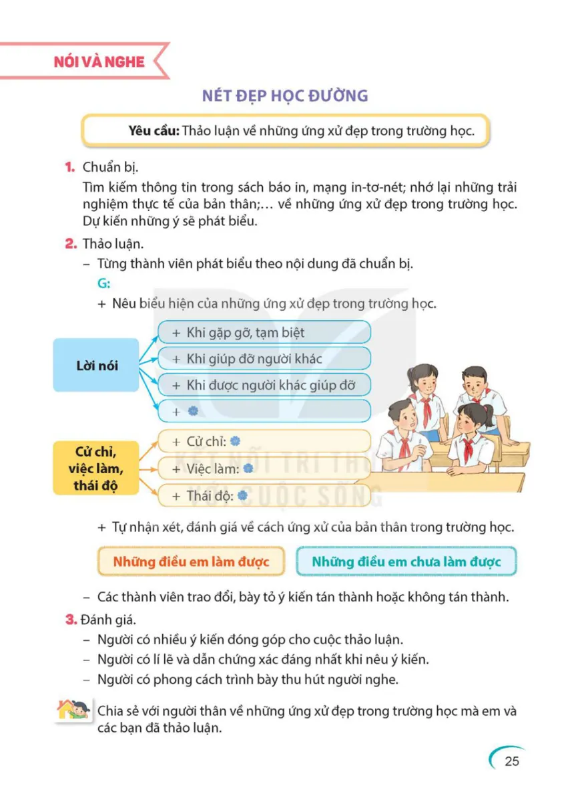
VIẾT
LẬP DÀN Ý CHO BÀI VĂN TẢ NGƯỜI
Chọn 1 trong 2 đề dưới đây:
Đề 1: Viết bài văn tả một người thân trong gia đình em.
Đề 2: Viết bài văn tả một người đã để lại cho em những ấn tượng tốt đẹp.
4. Lập dàn ý.
— Dựa vào kết quả quan sát trong hoạt động Viết ở Bài 3, lập dàn ý cho
đề bài em đã chọn.
— Xác định trình tự tả (tả lần lượt ngoại hình, hoạt động,... hoặc kết hợp,
đan xen giữa tả ngoại hình với hoạt động,...).
G:
Giới thiệu về người được tả (tên gọi, mối quan hệ của em
Mở bài
với người đó,...) theo cách mở bài trực tiếp hoặc gián tiếp.
Nêu ngắn gọn những đặc điểm của người được tả:
— Ngoại hình (tâm vóc, dáng người, nước da, gương mặt,
Thân bài
trang phục,...)
Hoạt động (việc làm, cử chỉ, lời nói, cách ứng xử,...)
Sở trường, sở thích hoặc tính tình.
Kết bài
Nêu nhận xét hoặc cảm nghĩ về người được tả theo cách
kết bài mở rộng hoặc không mở rộng.
2. Góp ý và chỉnh sửa dàn ý.
- Lựa chọn được chỉ tiết về ngoại hình, hoạt động, sở trường,... thể hiện
những nét riêng, giúp phân biệt người được tả với những người khác.
— Có những dẫn chứng cụ thể (hoạt động, sở trường,...) thể hiện được tính
cách, phẩm chất của người được tả.
24
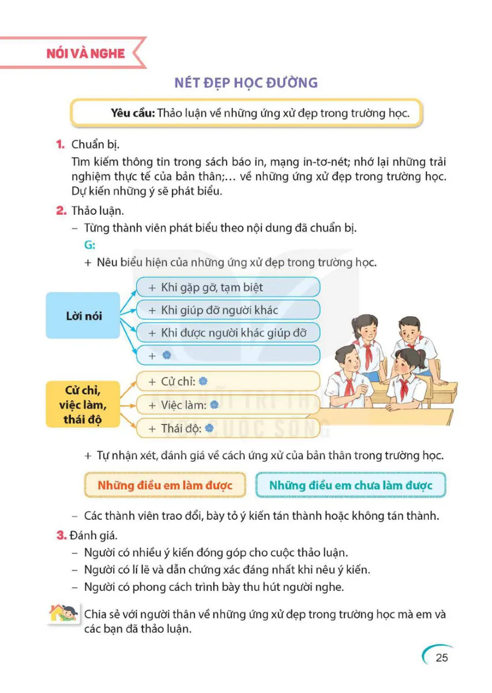
NÉT ĐẸP HỌC ĐƯỜNG
Yêu cầu: Thảo luận về những ứng xử đẹp trong trường học.
4. Chuẩn bị.
Tìm kiếm thông tin trong sách báo in, mạng in-tơ-nét; nhớ lại những trải
nghiệm thực tế của bản thân;... về những ứng xử đẹp trong trường học.
Dự kiến những ý sẽ phát biếu.
2. Thảo luận.
- Từng thành viên phát biểu theo nội dung đã chuẩn bị.
G:
+ Nêu biểu hiện của những ứng xử đẹp trong trường học.
+ Khi gặp gỡ, tạm biệt
Lời nói
+ Khi giúp đỡ người khác
+ Khi được người khác giúp đỡ
+ Cử chỉ: ®
Cử chỉ,
việc làm,
+ Việc làm: ®
thái độ
+ Thái độ: ®#
+ Tự nhận xét, dánh giá về cách ứng xử của bản thân trong trường học.
Những điều em làm được
Những điều em chưa làm được
- Các thành viên trao đổi, bày tỏ ý kiến tán thành hoặc không tán thành.
3. Đánh giá.
— Người có nhiều ý kiến đóng góp cho cuộc thảo luận.
— Người có lí lẽ và dẫn chứng xác đáng nhất khi nêu ý kiến.
—. Người có phong cách trình bày thu hút người nghe.
Chia sẻ với người thân về những ứng xử đẹp trong trường học mà em và
các bạn đã thảo luận.
25
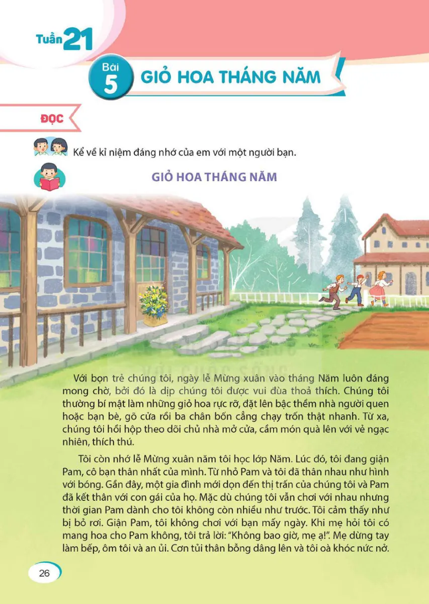
Tuân
21
Bởi
GIỎ HOA THÁNG NĂM
5
ĐỌC
Kể về kỉ niệm đáng nhớ của em với một người bạn.
GIỎ HOA THÁNG NĂM
Với bọn trẻ chúng tôi, ngày lễ Mừng xuân vào tháng Năm luôn đáng
mong chờ, bởi đó là dịp chúng tôi được vui đùa thoả thích. Chúng tôi
thường bí mật làm những giỏ hoa rực rỡ, đặt lên bậc thầm nhà người quen
hoặc bạn bè, gõ cửa rồi ba chân bốn cẳng chạy trốn thật nhanh. Từ xa,
chúng tôi hồi hộp theo dõi chủ nhà mở cửa, cầm món quà lên với vẻ ngạc
nhiên, thích thú.
Tôi còn nhớ lễ Mừng xuân năm tôi học lớp Nằm. Lúc đó, tôi đang giận
Pam, cô bạn thân nhất của mình. Từ nhỏ Pam và tôi đã thân nhau như hình
với bóng. Gần đây, một gia đình mới dọn đến thị trấn của chúng tôi và Pam
đã kết thân với con gái của họ. Mặc dù chúng tôi vẫn chơi với nhau nhưng
thời gian Pam dành cho tôi không còn nhiều như trước. Tôi cảm thấy như
bị bỏ rơi. Giận Pam, tôi không chơi với bạn mấy ngày. Khi mẹ hỏi tôi có
mang hoa cho Pam không, tôi trả lời: Không bao giờ, mẹ ạ!“ Mẹ dừng tay
làm bếp, ôm tôi và an ủi. Cơn tủi thân bỗng dâng lên và tôi oà khóc nức nở.
26
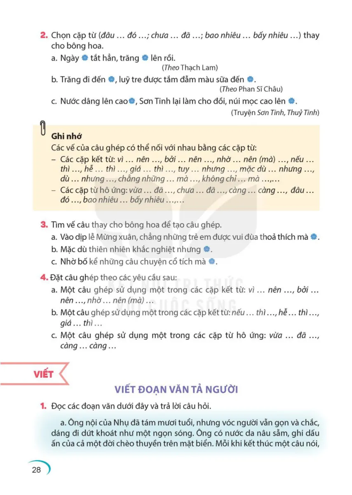
Mẹ dịu dàng vuốt tóc và lau nước mắt cho tôi. Mẹ bảo càng lớn, chúng tôi
sẽ càng có nhiều bạn. Những người bạn không thể chỉ chơi với một mình
tôi. Và ngay cả tôi cũng không thể chỉ chơi với một người bạn.
Cuối cùng, tôi cũng quyết định tặng Pam một giỏ hoa. Tôi chọn thật
nhiều hoa màu vàng mà Pam yêu thích, rồi nhờ chị tôi đem đến nhà bạn. Từ
chỗ nấp, tôi thấy Pam nâng giỏ hoa lên, dịu dàng áp mặt vào những bông
hoa và nói to như để tôi nghe được: “Cảm ơn Xu-di, hi vọng cậu không còn
giận mìnhl”.
Lần ấy tôi học được rằng là bạn bè đích thực, ta sẽ đặt bạn trong tim
nhưng không buộc họ luôn ở bên mình.
(Theo Minh Hương)
Từ ngữ
Lễ Mừng xuân: lễ truyền thống ở nhiều nước châu Âu Và còn lưu giữ đến ngày
nay, diễn ra vào tháng Năm - thời điểm muôn hoa đua nở.
1. Ngày lễ nào trong nắm được các bạn nhỏ mong chờ? Việc làm nào trong
ngày đó khiến các bạn thấy thú vị?
2. Bạn thân của Xu-di là ai? Vì sao Xu-di lại giận người bạn thân của mình?
3. Việc Xu-di vẫn quyết định tặng bạn giỏ hoa với nhiều bông màu vàng mà
bạn yêu thích thể hiện điều gì?
4. Người bạn của Xu-di đón nhận giỏ hoa như thế nào? Theo em, Xu-di có
cảm nghĩ gì trước cử chỉ, lời nói của bạn lúc nhận giỏ hoa?
5. Đoạn kết của câu chuyện muốn nói điều gì?
Ni
I
SŨNE
LUYỆN TỪ VÀ CÂU
CÁCH NỐI CÁC VẾ CÂU GHÉP (Tiếp theo)
1. Tìm cặp kết từ nối các vế câu trong mỗi câu ghép dưới đây:
a. Bởi tôi ăn uống điều độ và làm việc có chừng mực nên tôi chóng lớn lắm.
(Tô Hoài)
b. Mặc dù chúng tôi vẫn chơi với nhau nhưng thời gian Pam dành cho tôi
không còn nhiều như trước.
(Theo Minh Hương)
c. Nếu hoa mua có màu tím hồng thì hoa sim tím nhạt, phơn phớt như
má con gái.
(Băng Sơn)
27
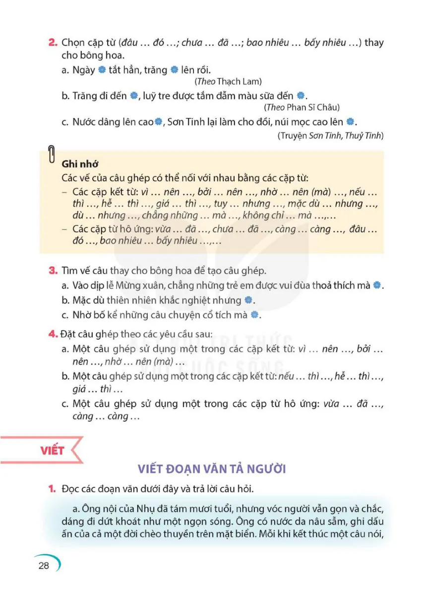
2. Chọn cặp từ (đáu ... đó ...; chưa... đã ...; bao nhiêu ... bấy nhiêu ...) thay
cho bông hoa.
a. Ngày ® tắt hẳn, trăng # lên rồi.
(Theo Thạch Lam}
b. Trăng đi đến #, luỹ tre được tắm đẫm màu sữa đến 8.
(Theo Phan Sĩ Châu)
c. Nước dâng lên cao®#, Sơn Tinh lại làm cho đổi, núi mọc cao lên ®
(Truyện Sơn Tỉnh, Thuỷ Tinh)
Ghi nhớ
Các vế của câu ghép có thể nối với nhau bằng các cặp từ:
- Các cặp kết từ: vì... nên ..., bởi... nên ..., nhờ... nên (mà) ...,
nếu...
thì an, hễ ... thì ..., giá thì coạy, tuy... nhưng ...,
mặc dù _ nhưng =
dù ... nhưng..., chẳng những... mà..., không chỉ... mà...
Các cặp từ hô ứng: vừa... đã ...., chưa... tủ
Cũng
đữu....
đó ..., bao nhiêu... bấy
3. Tìm vế câu thay cho bông hoa để tạo câu ghép.
a. Vào dịp lễ Mừng xuân, chẳng những trẻ em được vui đùa thoả thích mà #.
b. Mặc dù thiên nhiên khắc nghiệt nhưng 8.
c. Nhờ bố kể những câu chuyện cổ tích mà
4. Đặt câu ghép theo các yêu cầu sau:
a. Một câu ghép sử dụng một trong các cặp kết từ: vì... nên..., bởi...
nên ..., nhờ... nên (mà)...
b. Một câu ghép sử dụng một trong các cặp kết từ: nếu... thì..., hễ... thì....
giá... thì...
c. Một câu ghép sử dụng một trong các cặp từ hô ứng: vừa... đã...,
càng... càng...
VIẾT ĐOAN VĂN TẢ NGƯỜI
1. Đọc các đoạn văn dưới đây và trả lời câu hỏi.
a. Ông nội của Nhụ đã tám mươi tuổi, nhưng vóc người vẫn gọn và chắc,
dáng đi dứt khoát như một ngọn sóng. Ông có nước da nâu sẵm, ghi dấu
ấn của cả một đời chèo thuyền trên mặt biển. Mỗi khi kết thúc một câu nói,
28
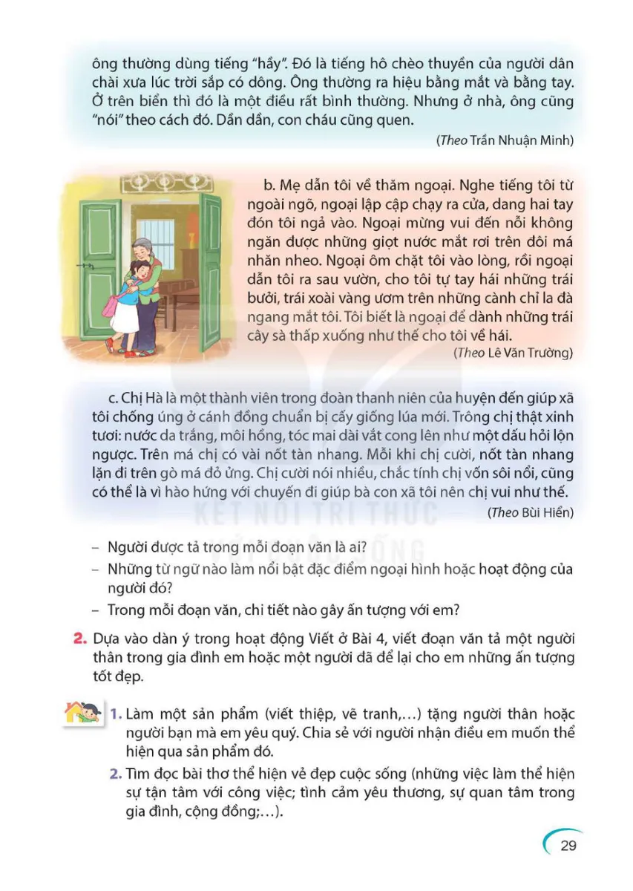
ông thường dùng tiếng “hầy”. Đó là tiếng hô chào thuyền của người dân
chài xưa lúc trời sắp có dông. Ông thường ra hiệu bằng mắt và bằng tay.
Ở trên biển thì đó là một điều rất bình thường. Nhưng ở nhà, ông cũng
“nói” theo cách đó. Dân dần, con cháu cũng quen.
(Theo Trần Nhuận Minh)
b. Mẹ dẫn tôi về thăm ngoại. Nghe tiếng tôi từ
ngoài ngõ, ngoại lập cập chạy ra cửa, dang hai tay
đón tôi ngả vào. Ngoại mừng vui đến nỗi không
ngăn được những giọt nước mắt rơi trên đôi má
nhăn nheo. Ngoại ôm chặt tôi vào lòng, rồi ngoại
dẫn tôi ra sau vườn, cho tôi tự tay hái những trái
bưởi, trái xoài vàng ươm trên những cành chỉ la đà
ngang mắt tôi. Tôi biết là ngoại để dành những trái
cây sà thấp xuống như thế cho tôi về hái.
(Theo Lê Văn Trường)
c. Chị Hà là một thành viên trong đoàn thanh niên của huyện đến giúp xã
tôi chống úng ở cánh đồng chuẩn bị cấy giống lúa mới. Trông chị thật xinh
tươi: nước da trắng, môi hồng, tóc mai dài vắt cong lên như một dấu hỏi lộn
ngược. Trên má chị có vài nốt tàn nhang. Mỗi khi chị cười, nốt tàn nhang
lặn đi trên gò má đỏ ửng. Chị cười nói nhiều, chắc tính chị vốn sôi nổi, cũng
có thể là vì hào hứng với chuyến đi giúp bà con xã tôi nên chị vui như thế.
F NITTT TỶ
(Theo Bùi Hiển)
— Người được tả trong mỗi đoạn văn là ai?
— Những từ ngữ nào làm nổi bật đặc điểm ngoại hình hoặc hoạt động của
người đó?
— Trong mỗi đoạn văn, chỉ tiết nào gây ấn tượng với em?
2. Dựa vào dàn ý trong hoạt động Viết ở Bài 4, viết đoạn văn tả một người
thân trong gia đình em hoặc một người đã để lại cho em những ấn tượng
tốt đẹp.
một sản phẩm (viết thiệp, vẽ tranh,...) tặng người thân hoặc
người bạn mà em yêu quý. Chia sẻ với người nhận điều em muốn thể
hiện qua sản phẩm đó.
2. Tìm đọc bài thơ thể hiện vẻ đẹp cuộc sống (những việc làm thể hiện
sự tận tâm với công việc; tình cảm yêu thương, sự quan tâm trong
gia đình, cộng đồng;...).
29
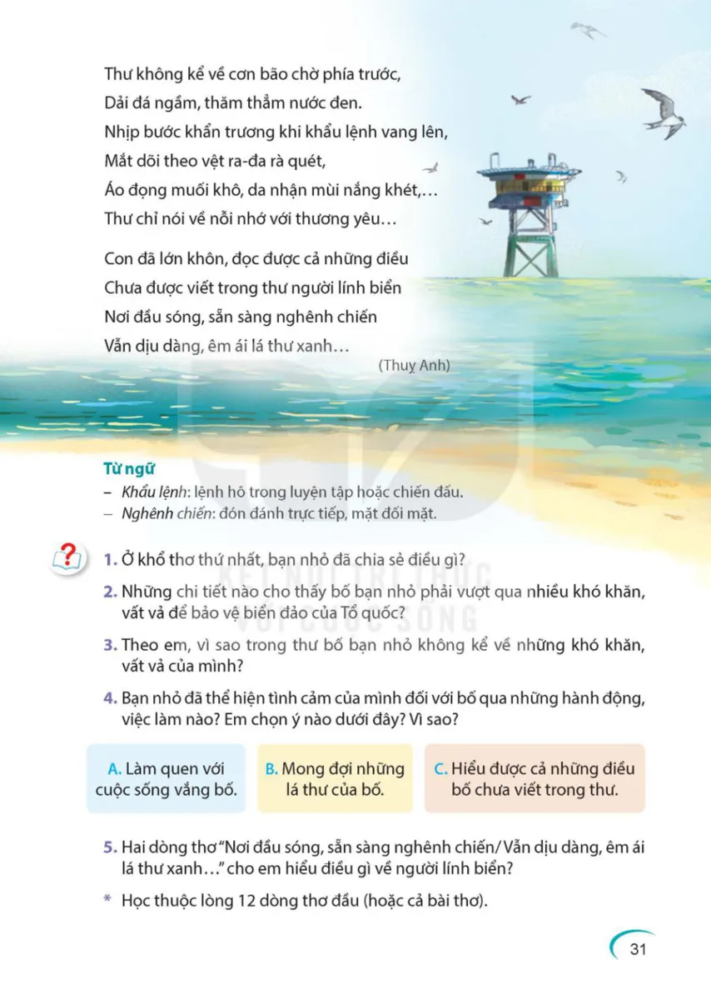
Bòi
THƯ CỦA BÔ
ến
ĐỌC
Nói điều em biết về những người lính đang làm nhiệm vụ
bảo vệ biển đảo của Tổ quốc.
THƯ CỦA BỐ
Con lớn lên, quen vắng bố trong nhà
Hai mẹ con, nhà một phòng cũng trống
Chỉ mong đợi những lá thư gió lộng
Và mặn mòi hương biển xa xôi...
Nghe êm đềm sóng lặng lững lờ trôi,
Thấy đàn cá heo giỡn đùa mặt nước.
30
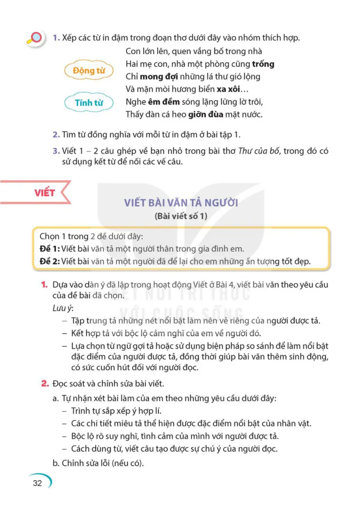
Thư không kể về cơn bão chờ phía trước,
Dải đá ngầm, thăm thẳm nước đen.
Nhịp bước khẩn trương khi khẩu lệnh vang lên,
Mắt dõi theo vệt ra-đa rà quét,
Áo đọng muối khô, da nhận mùi nắng khét,...
Thư chỉ nói về nỗi nhớ với thương yêu...
Con đã lớn khôn, đọc được cả những điều
Chưa được viết trong thư người lính biển
Nơi đầu sóng, sẵn sàng nghênh chiến
Vẫn dịu dàng, êm ái lá thư xanh...
(Thuy Anh)
Từ ngữ
— Khẩu lệnh: lệnh hô trong luyện tập hoặc chiến đấu.
— Nghênh chiến: đón đánh trực tiếp, mặt đối mặt.
1. Ở khổ thơ thứ nhất, bạn nhỏ đã chia sẻ điều gì?
2. Những chỉ tiết nào cho thấy bố bạn nhỏ phải vượt qua nhiều khó khăn,
vất vả để bảo vệ biển đảo của Tổ quốc?
3. Theo em, vì sao trong thư bố bạn nhỏ không kể về những khó khăn,
vất vả của mình?
4. Bạn nhỏ đã thể hiện tình cảm của mình đối với bố qua những hành động,
việc làm nào? Em chọn ý nào dưới đây? Vì sao?
A. Làm quen với
8. Mong đợi những
C, Hiểu được cả những điều
cuộc sống vắng bố.
lá thư của bố.
bố chưa viết trong thư.
5. Hai dòng thơ “Nơi đầu sóng, sẵn sàng nghênh chiến/Vẫn dịu dàng, êm ái
lá thư
em hiểu điều gì về người lính biển?
*- Học thuộc lòng 12 dòng thơ đầu (hoặc cả bài thơ).
31
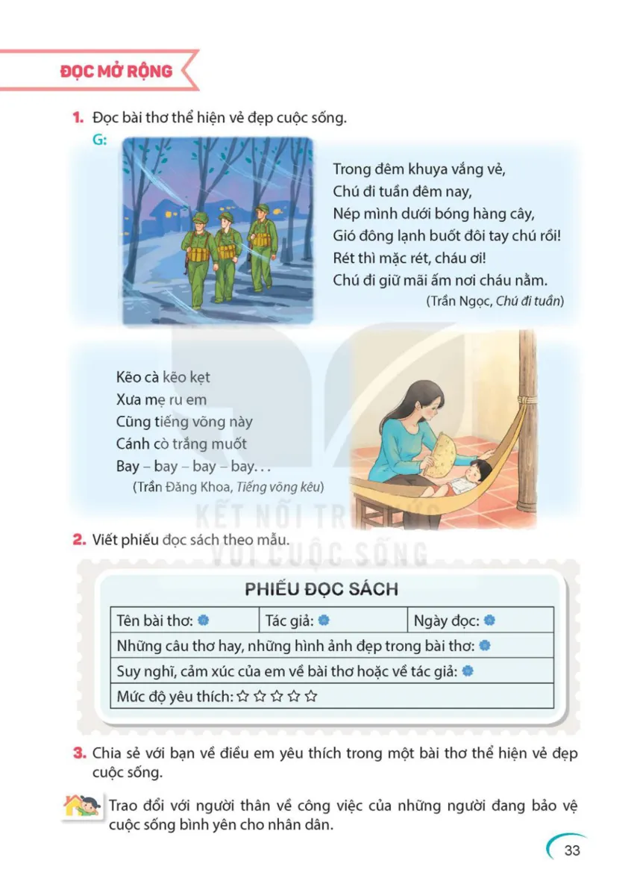
1. Xếp các từ in đậm trong đoạn thơ dưới đây vào nhóm thích hợp.
Con lớn lên, quen vắng bố trong nhà
Hai mẹ con, nhà một phòng cũng trống
Động từ.
Chỉ mong đợi những lá thư gió lộng
Và mặn mòi hương biển xa xôi...
Tính từ.
Nghe êm đểm sóng lặng lững lờ trôi
Thấy đàn cá heo giỡn đùa mặt nước.
2. Tìm từ đồng nghĩa với mỗi từ in đậm ở bài tập 1.
3. Viết 1 - 2 câu ghép về bạn nhỏ trong bài thơ Thư của bố, trong đó có
sử dụng kết từ để nối các vế câu.
VIẾT
VIẾT BÀI VĂN TẢ NGƯỜI
(Bài viết số 1)
Chọn 1 trong 2 đề dưới đây:
Đề 1: Viết bài văn tả một người thân trong gia đình em.
Đề 2: Viết bài văn tả một người đã để lại cho em những ấn tượng tốt đẹp.
1. Dựa vào dàn ý đã lập trong hoạt động Viết ở Bài 4, viết bài văn theo yêu cầu
của đề bài đã chọn.
Lưu ý:
— Tập trung tả những nét nổi bật làm nên vẻ riêng của người được tả.
— Kết hợp tả với bộc lộ cảm nghĩ của em về người đó.
— Lựa chọn từ ngữ gợi tả hoặc sử dụng biện pháp so sánh để làm nổi bật
đặc điểm của người được tả, đồng thời giúp bài văn thêm sinh động,
có sức cuốn hút đối với người đọc.
2. Đọc soát và chỉnh sửa bài viết.
a. Tự nhận xét bài làm của em theo những yêu cầu dưới đây:
— Trình tự sắp xếp ý hợp lí.
- Các chỉ tiết miêu tả thể hiện được đặc điểm nổi bật của nhân vật.
— Bộc lộ rõ suy nghĩ, tình cảm của mình với người được tả.
- Cách dùng từ, viết câu tạo được sự chú ý của người đọc.
b. Chỉnh sửa lỗi (nếu có).
32
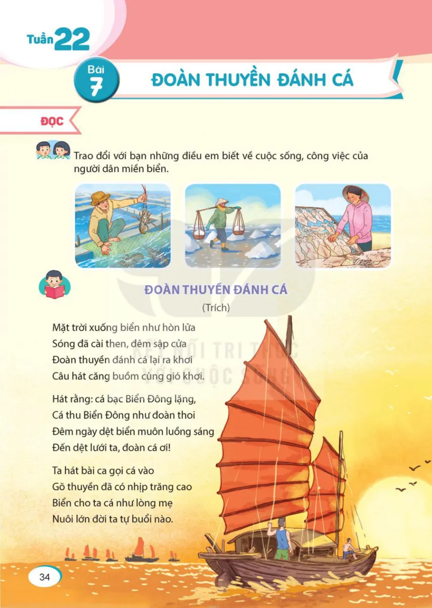
ĐỌC MỞ RỘNG
1. Đọc bài thơ thể hiện vẻ đẹp cuộc sống.
(3:
Trong đêm khuya vắng vẻ,
Chú đi tuần đêm nay,
Nép mình dưới bóng hàng cây,
Gió đông lạnh buốt đôi tay chú rồi!
Rét thì mặc rét, cháu ơi!
Chú đi giữ mãi ấm nơi cháu nằm.
(Trần Ngọc, Chú đi tuần)
Kẽo cà kẽo kẹt
Xưa mẹ ru em
Cũng tiếng võng này
Cánh cò trắng muốt
Bay - bay - bay - bay...
(Trần Đăng Khoa, Tiếng võng kêu)
Ð FT
THỊ
2. Viết phiếu đọc sách theo mẫu.
PHIẾU ĐỌC SÁCH
Tên bài thơ: ®
Tác giả: ®
Ngày đọc: &
Những câu thơ hay, những hình ảnh đẹp trong bài thơ: 6
Suy nghĩ, cảm xúc của em về bài thơ hoặc về tác giả:
Mức độ yêu thích: #r Ñ #z # Ýr
3. Chia sẻ với bạn về điều em yêu thích trong một bài thơ thể hiện vẻ đẹp
cuộc sống.
Trao đổi với người thân về công việc của những người đang bảo vệ
cuộc sống bình yên cho nhân dân.
33
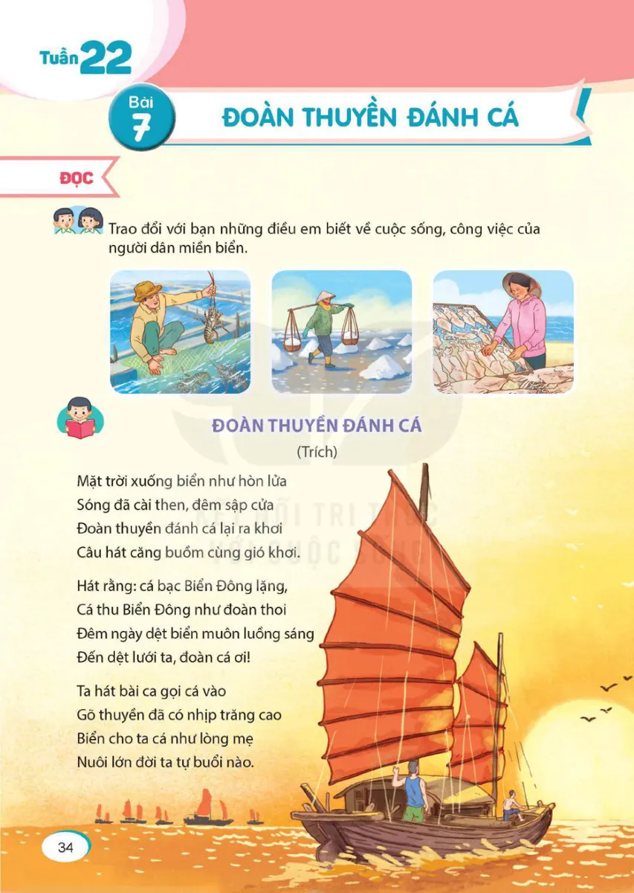
Tuân „ 22
Bài
ĐOÀN THUYỀN ĐÁNH CÁ
‡
Trao đổi với bạn những điều em biết về cuộc sống, công việc của
người dân miền biển.
ĐOÀN THUYỀN ĐÁNH CÁ
(Trích)
Mặt trời xuống biển như hòn lửa
Sóng đã cài then, đêm sập cửa
INlÌ
Đoàn thuyền đánh cá lại ra khơi
Câu hát căng buồm cùng gió khơi.
Hát rằng: cá bạc Biển Đông lặng,
Cá thu Biển Đông như đoàn thoi
Đêm ngày dệt biển muôn luồng sáng
Đến dệt lưới ta, đoàn cá ơi!
Ta hát bài ca gọi cá vào
Gõ thuyền đã có nhịp trăng cao
Biển cho ta cá như lòng mẹ
Nuôi lớn đời ta tự buổi nào.
34
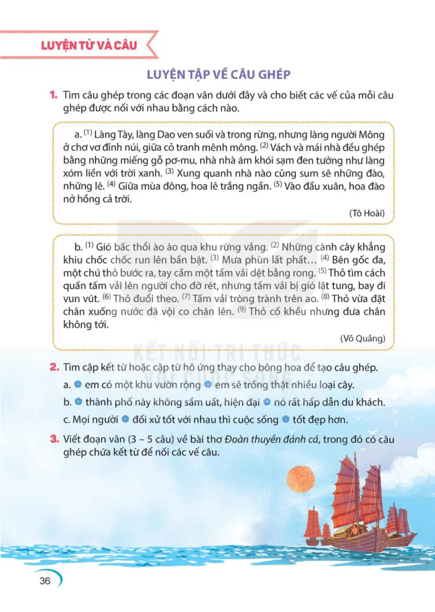
Sao mờ, kéo lưới kịp trời sáng
Ta kéo xoăn tay chùm cá nặng
Vảy bạc đuôi vàng loé rạng đông,
Lưới xếp buổm lên đón nắng hồng.
Câu hát căng buổm với gió khơi
Đoàn thuyền chạy đua cùng mặt trời
Mặt trời đội biển nhô màu mới,
Mắt cá huy hoàng muôn dặm phơi.
(Huy Cận)
Từ ngữ
— Thoi: bộ phận của khung cửi hoặc máy dệt để luồn sợi khi dệt vải.
— Gõ thuyền (động tác của người đánh cá): gỗ mạnh vào mạn thuyền, tạo nên
tiếng động để lùa cá bơi về một hướng.
1. Ở khổ thơ thứ nhất, đoàn thuyền đánh cá ra khơi trong khung cảnh thiên
nhiên như thế nào? Cách miêu tả của nhà thơ có gì đặc biệt?
Mặt trời
Sóng
2. Tìm trong bài thơ những chỉ tiết thể hiện tình cảm, cảm xúc của những
người đánh cá trên biển:
Niềm vui trong lao động
Tình yêu và lòng biết ơn
đối với biển cả
3. Những hình ảnh ở khổ thơ cuối có ý nghĩa gì?
4. Bài thơ giúp em cảm nhận được những vẻ đẹp nào của cuộc sống?
*- Học thuộc lòng bài thơ.
35
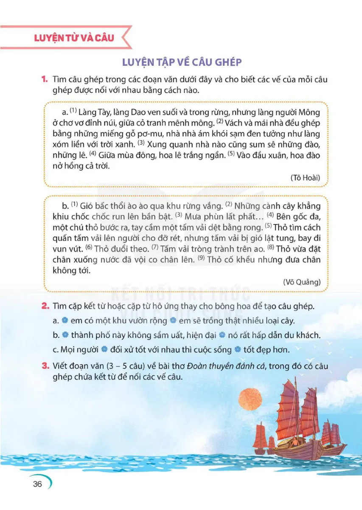
LUYỆN TẬP VỀ CÂU GHÉP
1. Tìm câu ghép trong các đoạn văn dưới đây và cho biết các vế của mỗi câu
ghép được nối với nhau bằng cách nào.
a.
? Làng Tày, làng Dao ven suối và trong rừng, nhưng làng người Mông
ở chơ vơ đỉnh núi, giữa cỏ tranh mênh mông. 2) Vách và mái nhà đều ghép
bằng những miếng gỗ pơ-mu, nhà nhà ám khói sạm đen tưởng như làng
xóm liền với trời xanh. 6 Xung quanh nhà nào cũng sum sê những đào,
những lê.
Giữa mùa đông, hoa lê trắng ngần. G) Vào đầu xuân, hoa đào
nở hồng cả trời.
(Tô Hoài)
b. ? Gió bấc thổi ào ào qua khu rừng vắng. (2? Những cành cây khẳng
khiu chốc chốc run lên bần bật. 3) Mưa phùn lất phất... ®) Bên gốc đa,
một chú thỏ bước ra, tay cầm một tấm vải dệt bằng tong.
®) Thỏ tìm cách
quấn tẫm vải lên người cho đỡ rét, nhưng tấm vải bị gió lật tung, bay đi
vun vút. ) Thỏ đuổi theo. ”) Tấm vải tròng trành trên ao. (8 Thỏ vừa đặt
chân xuống nước đã vội co chân lên. (9 Thỏ cố khều nhưng đưa chân
không tới.
(Võ Quảng)
2. Tìm cặp kết từ hoặc cặp từ hô ứng thay cho bông hoa để tạo câu ghép.
a. Ø em có một khu vườn rộng
em sẽ trồng thật nhiều loại cây.
b. # thành phổ này không sâm uất, hiện đại # nó rất hấp dẫn du khách.
c. Mọi người # đối xử tốt với nhau thì cuộc sống f# tốt đẹp hơn.
3. Viết đoạn văn (3 - 5 câu) về bài thơ Đoàn thuyền đánh cá, trong đó có câu
ghép chứa kết từ để nối các vế câu.
36
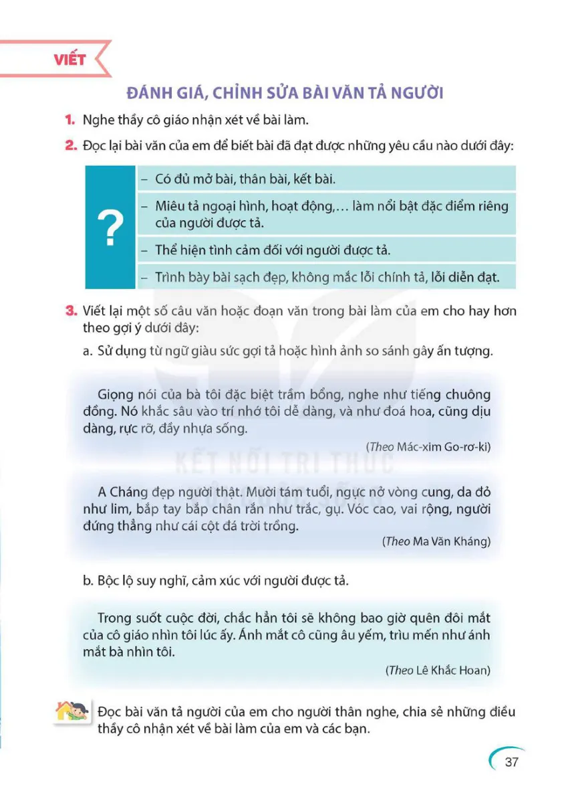
ĐÁNH GIÁ, CHỈNH SỬA BÀI VĂN TẢ NGƯỜI
1. Nghe thầy cô giáo nhận xét về bài làm.
2. Đọc lại bài văn của em để biết bài đã đạt được những yêu cầu nào dưới đây:
Có đủ mở bài, thân bài, kết bài.
Miêu tả ngoại hình, hoạt động,... làm nối bật đặc điểm riêng
của người được tả.
Thể hiện tình cảm đối với người được tả.
- Trình bày bài sạch đẹp, không mắc lỗi chính tả, lỗi diễn đạt.
3. Viết lại một số câu văn hoặc đoạn văn trong bài làm của em cho hay hơn
theo gợi ý dưới đây:
a. Sử dụng từ ngữ giàu sức gợi tả hoặc hình ảnh so sánh gây ấn tượng.
Giọng nói của bà tôi đặc biệt trầm bổng, nghe như tiếng chuông
đồng. Nó khắc sâu vào trí nhớ tôi dễ dàng, và như đoá hoa, cũng dịu
dàng, rực rỡ, đầy nhựa sống.
(Theo Mác-xim Go-rơ-ki)
A Cháng đẹp người thật. Mười tám tuổi, ngực nở vòng cung, da đỏ
như lim, bắp tay bắp chân rắn như trắc, gụ. Vóc cao, vai rộng, người
đứng thẳng như cái cột đá trời trồng.
(Theo Ma Văn Kháng)
b. Bộc lộ suy nghĩ, cảm xúc với người được tả.
Trong suốt cuộc đời, chắc hẳn tôi sẽ không bao giờ quên đôi mắt
của cô giáo nhìn tôi lúc ấy. Ánh mắt cô cũng âu yếm, trìu mến như ánh
mắt bà nhìn tôi.
(Theo Lê Khắc Hoan)
Đọc bài văn tả người của em cho người thân nghe, chia sẻ những điều
thầy cô nhận xét về bài làm của em và các bạn.
37
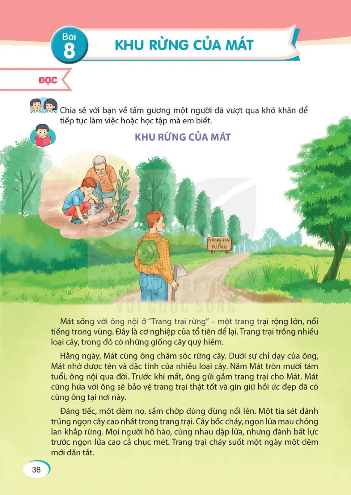
Bài
KHU RỪNG CỦA MÁT
8
Chia sẻ với bạn về tấm gương một người đã vượt qua khó khăn để
tiếp tục làm việc hoặc học tập mà em biết.
KHU RỪNG CỦA MÁT
RƯNG
Mát sống với ông nội ở “Trang trại rừng” - một trang trại rộng lớn, nổi
tiếng trong vùng. Đây là cơ nghiệp của tổ tiên để lại. Trang trại trồng nhiều
loại cây, trong đó có những giống cây quý hiễm.
Hằng ngày, Mát cùng ông chăm sóc rừng cây. Dưới sự chỉ dạy của ông,
Mát nhớ được tên và đặc tính của nhiều loại cây. Năm Mát tròn mười tám
tuổi, ông nội qua đời. Trước khi mất, ông gửi gắm trang trại cho Mát. Mát
cũng hứa với ông sẽ bảo vệ trang trại thật tốt và gìn giữ hồi ức đẹp đã có
cùng ông tại nơi này.
Đáng tiếc, một đêm nọ, sấm chớp đùng đùng nổi lên. Một tia sét đánh
trúng ngọn cây cao nhất trong trang trại. Cây bốc cháy, ngọn lửa mau chóng
lan khắp rừng. Mọi người hô hào, cùng nhau dập lửa, nhưng đành bất lực
trước ngọn lửa cao cả chục mét. Trang trại cháy suốt một ngày một đêm
mới dần tắt.
38
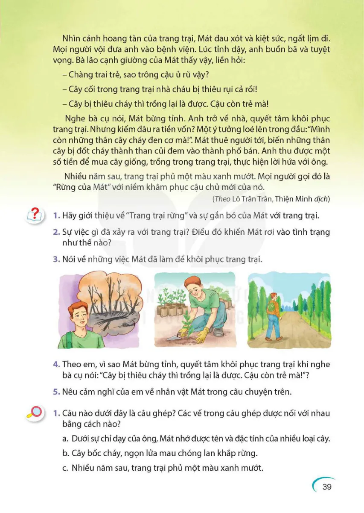
Nhìn cảnh hoang tàn của trang trại, Mát đau xót và kiệt sức, ngất lịm đi.
Mọi người vội đưa anh vào bệnh viện. Lúc tỉnh dậy, anh buồn bã và tuyệt
vọng. Bà lão cạnh giường của Mát thấy vậy, liền hỏi:
- Chàng trai trẻ, sao trông cậu ủ rũ vậy?
- Cây cối trong trang trại nhà cháu bị thiêu rụi cả rồi!
- Cây bị thiêu cháy thì trồng lại là được. Cậu còn trẻ mà!
Nghe bà cụ nói, Mát bừng tỉnh. Anh trở về nhà, quyết tâm khôi phục
trang trại.Nhưng kiếm đâu ra tiền vốn? Một ý tưởng loé lên trong đầu:“Mình
còn những thân cây cháy đen cơ mà!” Mát thuê người tới, biến những thân
cây bị đốt cháy thành than củi đem vào thành phố bán. Anh thu được một
số tiền để mua cây giống, trồng trong trang trại, thực hiện lời hứa với ông.
Nhiều năm sau, trang trại phủ một màu xanh mướt. Mọi người gọi đó là
“Rừng của Mát” với niềm khâm phục cậu chủ mới của nó.
(Theo Lô Trân Trần, Thiện Minh dịch)
f
1. Hãy giới thiệu về “Trang trại rừng” và sự gắn bó của Mát với trang trại.
2. Sự việc gì đã xảy ra với trang trại? Điều đó khiến Mát rơi vào tình trạng
như thế nào?
3. Nói về những việc Mát đã làm để khôi phục trang trại.
4. Theo em, vì sao Mát bừng tỉnh, quyết tâm khôi phục trang trại khi nghe
bà cụ nói: “Cây bị thiêu cháy thì trồng lại là được. Cậu còn trẻ mài!”?
5, Nêu cảm nghĩ của em về nhân vật Mát trong câu chuyện trên.
1. Câu nào dưới đây là câu ghép? Các vế trong câu ghép được nối với nhau
bằng cách nào?
a. Dưới sự chỉ dạy của ông, Mát nhớ được tên và đặc tính của nhiều loại cây.
b. Cây bốc cháy, ngọn lửa mau chóng lan khắp rừng.
c. Nhiều năm sau, trang trại phủ một màu xanh mướt.
39
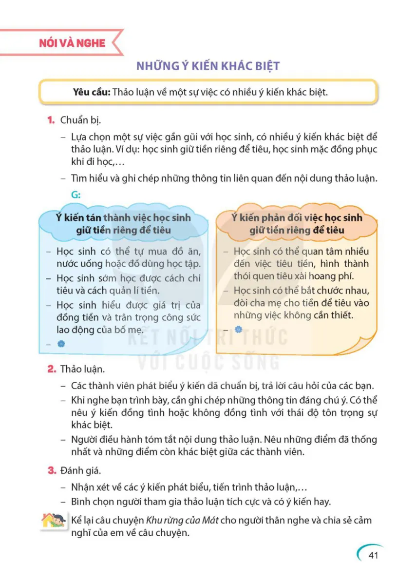
2. Đặt một câu ghép nói về nhân vật Mát hoặc trang trại của Mát, trong đó
các vế của câu ghép được nối với nhau bằng một kết từ (và, hay, nhưng,
rồi,
VIẾT BÀI VĂN TẢ NGƯỜI
(Bài viết số 2)
Chọn 1 trong 2 đề dưới đây:
Đề 1: Viết bài văn tả một người em chỉ gặp một vài lần nhưng nhớ mãi.
Đề 2: Viết bài văn tả một người là nhân vật chính trong bộ phim hoặc vở kịch
mà em đã xem.
1. Viết bài văn theo gợi ý dưới đây:
Giới thiệu khái quát người được tả (ví dụ: Em đã gặp người đó
Mở bài
ở đâu hoặc được biết về người đó qua bộ phim, vở kịch nào?).
Nêu ngắn gọn những ý cần có:
— Ngoại hình (lựa chọn những đặc điểm nổi bật, gây ấn tượng
với em)
Thân bài.
- Hoạt động (lựa chọn những cử chỉ, lời nói, cách ứng xử,...
thể hiện rõ tính cách của người được tả hoặc những việc
người đó làm khiến em nhớ mãi)
- Sở trường, sở thích hoặc tính tình của người được tả
Kết bài
Nêu nhận xét, cảm nghĩ về người được tả hoặc những điều em
muốn học tập ở người đó.
2. Đọc soát và chỉnh sửa bài viết.
— Đổi bài cho bạn để đọc soát và góp ý cho nhau.
— Chỉnh sửa bài viết (nếu cần).
40
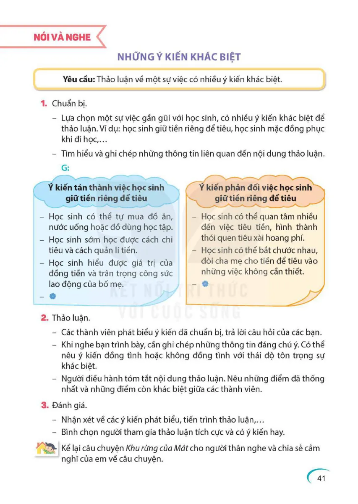
NÓI VÀ NGHE
NHỮNG Ý KIẾN KHÁC BIỆT
Yêu cầu: Thảo luận về một sự việc có nhiều ý kiến khác biệt.
1. Chuẩn bị.
- Lựa chọn một sự việc gần gũi với học sinh, có nhiều ý kiến khác biệt để
thảo luận. Ví dụ: học sinh giữ tiền riêng để tiêu, học sinh mặc đồng phục
khi đi học,..
— Tìm hiểu và ghi chép những thông tin liên quan đến nội dung thảo luận.
G:
Ý kiến tán thành việc học sinh
giữ tiền riêng để tiêu
- Học sinh có thể tự mua đồ ăn,
nước uống hoặc đồ dùng học tập.
- Học sinh sớm học được cách chỉ
tiêu và cách quản lí tiền.
- Học sinh hiểu được giá trị của
đồng tiền và trân trọng công sức
lao động của bố mẹ.
2. Thảo luận.
Ý kiến phản đối việc học sinh
giữ tiền riêng để tiêu
— Học sinh có thể quan tâm nhiều
đến việc tiêu tiên, hình thành
thói quen tiêu xài hoang phí.
Học sinh có thể bắt chước nhau,
đòi cha mẹ cho tiền để tiêu vào
những việc không cần thiết.
— Các thành viên phát biểu ý kiến đã chuẩn bị, trả lời câu hỏi của các bạn.
— Khi nghe bạn trình bày, cần ghi chép những thông tin đáng chú ý. Có thể
nêu ý kiến đồng tình hoặc không đồng tình với thái độ tôn trọng sự
khác biệt.
= Người điều hành tóm tắt nội dung thảo luận. Nêu những điểm đã thống
nhất và những điểm còn khác biệt giữa các thành viên.
3. Đánh giá.
— Nhận xét về các ý kiến phát biếu, tiến trình thảo luận,...
- Bình chọn người tham gia thảo luận tích cực và có ý kiến hay.
Kể lại câu chuyện Khu rừng của Mát cho người thân nghe và chia sẻ cảm
nghĩ của em về câu chuyện.
41
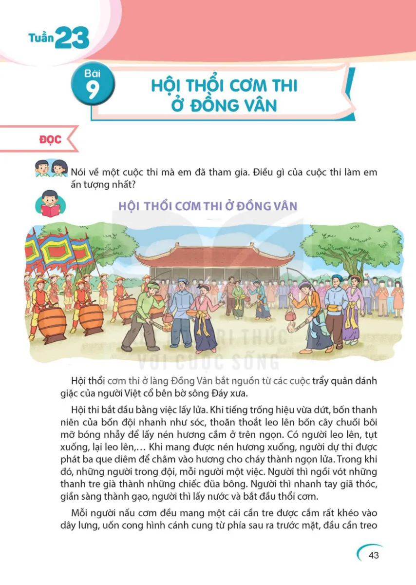
HƯƠNG SẮC
TRĂM MIEN
42
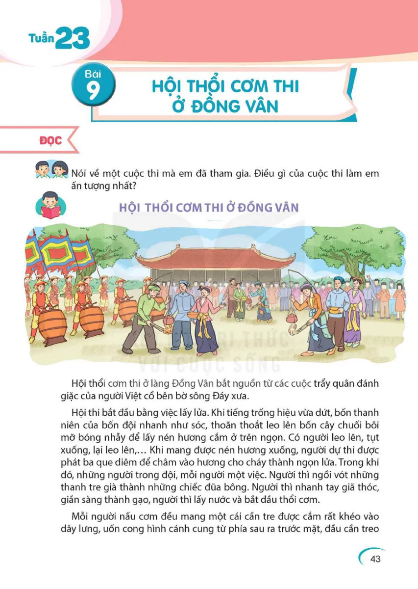
Tuân 29
Bài
HỘI THÔI CƠM THỊ
Ở ĐÔNG VÂN
Nói về một cuộc thi mà em đã tham gia. Điều gì của cuộc thi làm em
ấn tượng nhất?
HỘI THỔI CƠM THỊ Ở ĐỒNG VÂN
Hội thổi cơm thi ở làng Đồng Vân bắt nguồn từ các cuộc trẩy quân đánh
giặc của người Việt cổ bên bờ sông Đáy xưa.
Hội thi bắt đầu bằng việc lấy lửa. Khi tiếng trống hiệu vừa dứt, bốn thanh
niên của bốn đội nhanh như sóc, thoăn thoát leo lên bốn cây chuối bôi
mỡ bóng nhẫy để lấy nén hương cắm ở trên ngọn. Có người leo lên, tụt
xuống, lại leo lên,... Khi mang được nén hương xuống, người dự thi được
phát ba que diêm để châm vào hương cho cháy thành ngọn lửa. Trong khi
đó, nh ững người trong đội, mỗi người một việc. Người thì ngồi vót những
thanh tre già thành những chiếc đũa bông. Người thì nhanh tay giã thóc,
giần sàng thành gạo, người thì lấy nước và bắt đầu thổi cơm.
Mỗi người nấu cơm đều mang một cái cần tre được cắm rất khéo vào
dây lưng, uốn cong hình cánh cung từ phía sau ra trước mặt, đầu cần treo
43
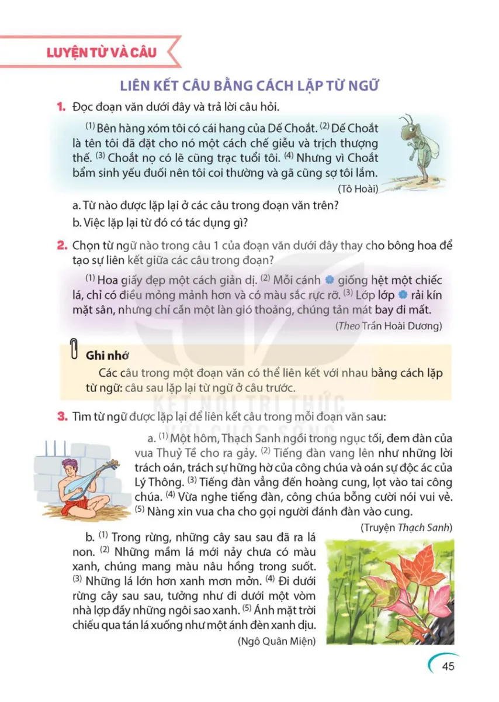
cái nổi nho nhỏ. Người nấu cơm tay giữ cần, tay cầm đuốc đung đưa cho
ánh lửa bập bùng. Các đội vừa thối cơm vừa đan xen nhau uốn lượn trên
sân đình trong sự cổ vũ nồng nhiệt của người xem hội.
Sau độ một giờ rưỡi, các nồi cơm được lần lượt trình trước cửa đình.
Mỗi nồi cơm được đánh một số để giữ bí mật. Ban giám khảo chấm theo
ba tiêu chí: cơm trắng, dẻo và không có cháy. Cuộc thi nào cũng hồi hộp và
việc giật giải đã trở thành niềm tự hào khó có gì sánh nổi đối với dân làng.
(Theo Minh Nhương)
Từ ngữ
— Đồng Vân: một làng thuộc xã Đồng Tháp, huyện Đan Phượng, Hà Nội.
— Sông Đáy: một nhánh của sông Hồng.
— Đình: ngôi nhà to, rộng của làng thời xưa, dùng làm nơi thờ thành hoàng và
họp việc làng.
1. Hội thổi cơm thi của làng Đồng Vân bắt nguồn từ đâu?
2. Cách lấy lửa để nấu cơm trong cuộc thi được miêu tả như thế nào?
3. Kể tên những việc làm đan xen cùng việc lấy lửa. Các thành viên của mỗi
đội đã phối hợp với nhau như thế nào khi thực hiện những việc đó?
4. Xếp những bức tranh thể hiện một số hoạt động trong cuộc thi nấu cơm
vào nhóm thích hợp.
Chuẩn bị nấu cơm
Nấu cơm
Chấm giải cuộc thi
5. Theo em, tác giả muốn nói điều gì qua bài đọc? Chọn câu trả lời dưới đây
hoặc nêu ý kiến của em.
A. Ca ngợi nét đẹp truyền thống trong sinh hoạt văn hoá của người
Việt Nam.
B. Bộc lộ niềm tự hào về một nét đẹp văn hoá cổ truyền của dân tộc.
C. Khơi dậy ý thức giữ gìn những giá trị văn hoá tốt đẹp của dân tộc.
44
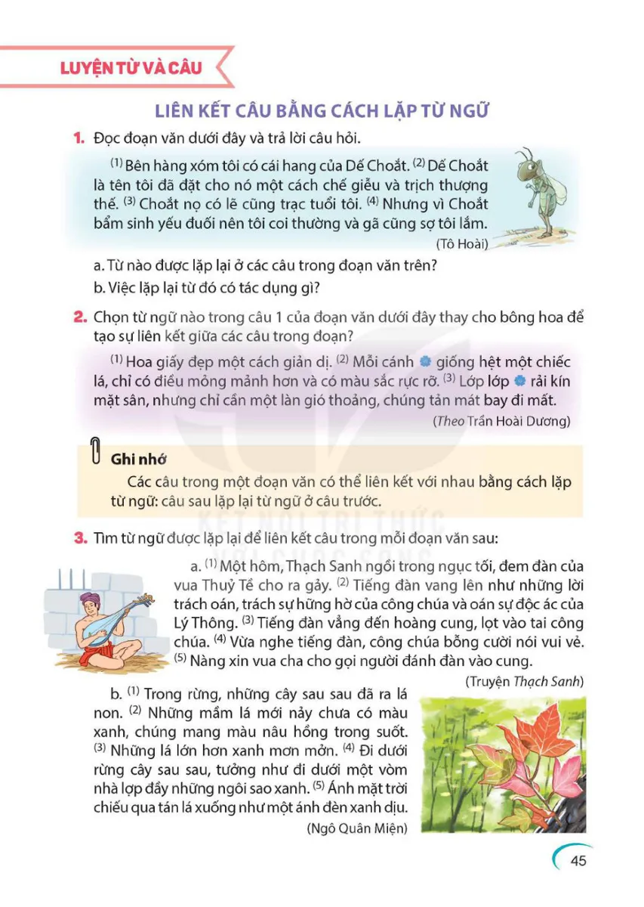
LUYỆN TỪ VÀ CÂU
LIÊN KẾT CÂU BẰNG CÁCH LẮP TỪ NGỨỮ
1. Đọc đoạn văn dưới đây và trả lời câu hỏi.
q) Bên hàng xóm tôi có cái hang của Dế Choắt. (2 Dế Choắt
là tên tôi đã đặt cho nó một cách chế giễu và trịch thượng
thế. 8) Choắt nọ có lễ cũng trạc tuổi tôi.
Nhưng vì Choắt
bẩm sinh yếu đuối nên tôi coi thường và gã cũng SỢ tôi lắm.
(Tô Hoài)
a. Từ nào được lặp lại ở các câu trong đoạn văn trên?
b. Việc lặp lại từ đó có tác dụng gì?
2. Chọn từ ngữ nào trong câu 1 của đoạn văn dưới đây thay cho bông hoa để
tạo sự liên kết giữa các câu trong đoạn?
Œ) Hoa giấy đẹp một cách giản dị. 2) Mỗi cánh # giống hệt một chiếc
lá, chỉ có điều mỏng mảnh hơn và có màu sắc rực rỡ. '3) Lớp lớp ® rải kín
mặt sân, nhưng chỉ cần một làn gió thoảng, chúng tản mát bay đi mất.
(Theo Trần Hoài Dương)
Ghi nhớ
Các câu trong một đoạn văn có thể liên kết với nhau bằng cách lặp
từ ngữ: câu sau lặp lại từ ngữ ở câu trước.
3. Tìm từ ngữ được lặp lại để liên kết câu trong mỗi đoạn văn sau:
a. 1 Một hôm, Thạch Sanh ngồi trong ngục tối, đem đàn của
vua Thuỷ Tề cho ra gảy. (2) Tiếng đàn vang lên như những lời
trách oán, trách sự hững hờ của công chúa và oán sự độc ác của
Lý Thông. 3) Tiếng đàn vẳng đến hoàng cung, lọt vào tai công
chúa. 4 Vừa nghe tiếng đàn, công chúa bỗng cười nói vui vẻ.
G) Nàng xin vua cha cho gọi người đánh đàn vào cung.
b.
Trong rừng, những cây sau sau đã ra lá
(Truyện Thạch Sanh)
non. 2) Những mầm lá mới nảy chưa có màu
xanh, chúng mang màu nâu hồng trong suốt.
®) Những lá lớn hơn xanh mơn mởn. (4 Đi dưới
rừng cây sau sau, tưởng như đi dưới một vòm
nhà lợp đầy những ngôi sao xanh. ® Ánh mặt trời
chiếu qua tán lá xuống như một ánh đèn xanh dịu.
(Ngô Quân Miện)
45
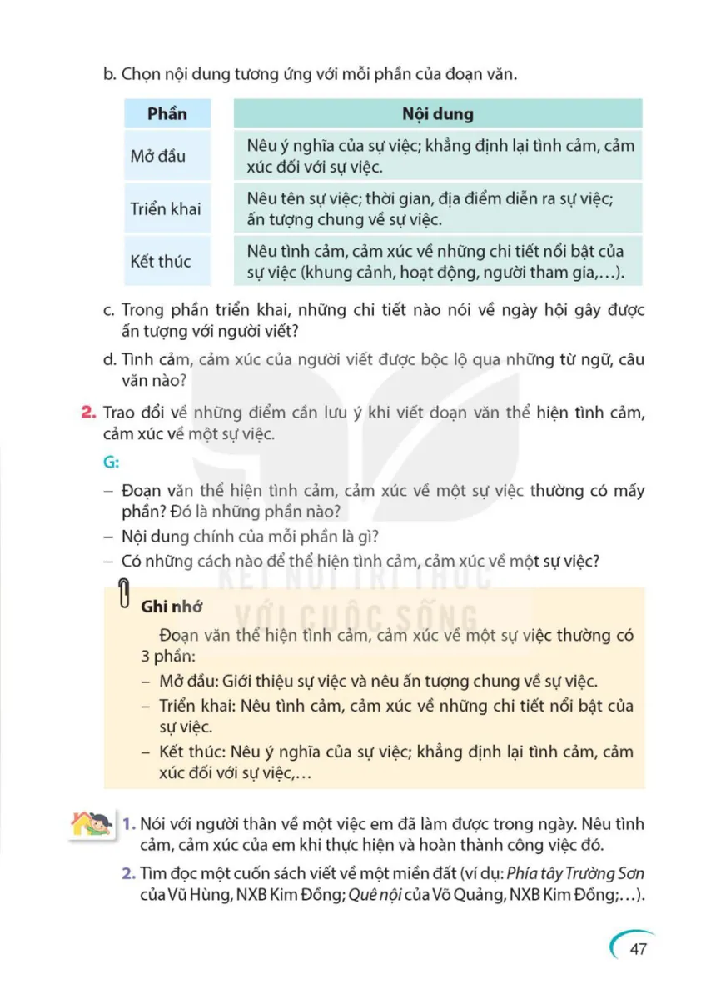
c. 8) Chú sơn ca tiếp tục vỗ cánh bay lên cao vút. 2 Chú thấy cần phải
làm một chuyến đi xa để thăm tất cả mảnh đất quê hương của chú. 3) Đôi
cánh nhỏ chao chát trên không dẫn chú đi. “ Cảnh vật loang loáng in vào
đôi mắt tinh nhanh tuyệt diệu của chú. ®) Chú xiết bao kinh ngạc vì thấy
quê hương của chú, ngoài dãy đồi đầy một màu xanh và ánh nắng, còn
trải ra bao lai
(Nguyễn Kiên)
4. Viết 2 - 3 câu về một lễ hội, trong đó các câu liên kết với nhau bằng cách lặp
từ ngữ.
VIẾT
TÌM HIỂU CÁCH VIẾT ĐOAN VĂN THỂ HIỆN TÌNH CẢM,
CẢM XÚC VỀ MỘT SỰ VIỆC
1. Đọc đoạn văn dưới đây và thực hiện yêu cầu.
Nhân dịp Quốc khánh ngày 2 tháng 9, tôi được bố mẹ cho đi Mộc Châu
tham dự Ngày hội văn hoá các dân tộc thiểu số. Tôi vô cùng hứng thú
với sự kiện mang đậm vẻ đẹp văn hoá này. Ngay từ sáng ngày 1 tháng 9,
không khí ngày hội đã tràn ngập khắp thị trấn. Cờ hoa, những bộ trang
phục truyền thống làm cho cả thị trấn trở nên rực rỡ sắc màu. Tiếng trống,
tiếng chiêng rộn rã khiến tôi cảm thấy háo hức lạ thường. Mỗi dân tộc
mang đến ngày hội một tiết mục trình diễn riêng. Trước cuộc thi ném còn
của những cô gái Thái, tôi trở thành cổ động viên tự lúc nào không rõ. Tôi
chăm chú dõi theo quả còn bay vút lên cao, lơ lửng trên không trung. Tôi
và mọi người hò reo khi quả còn bất ngờ bay vèo qua vòng tròn gắn trên
đầu cây tre. Điệu múa khèn tràn đầy sức sống của các chàng trai người
Mông đã khiến tôi rất ngạc nhiên và thán phục. Tôi nhún nhảy liên hồi
theo các động tác của họ. Tôi như bị cuốn theo bước múa sạp khéo léo,
rộn ràng của những cô gái Mường. Tôi say sưa thưởng thức điệu múa xoè
uyển chuyển của những cô gái Thái... Đến với Ngày hội văn hoá các dân
tộc thiểu số ở Mộc Châu, tôi đã rất xúc động và hiểu vì sao cần phải giữ
gìn giá trị văn hoá truyền thống của dân tộc.
(Lâm Phong)
a. Đoạn văn nói đến sự việc gì? Người viết có ấn tượng chung về sự việc đó
thế nào?
46
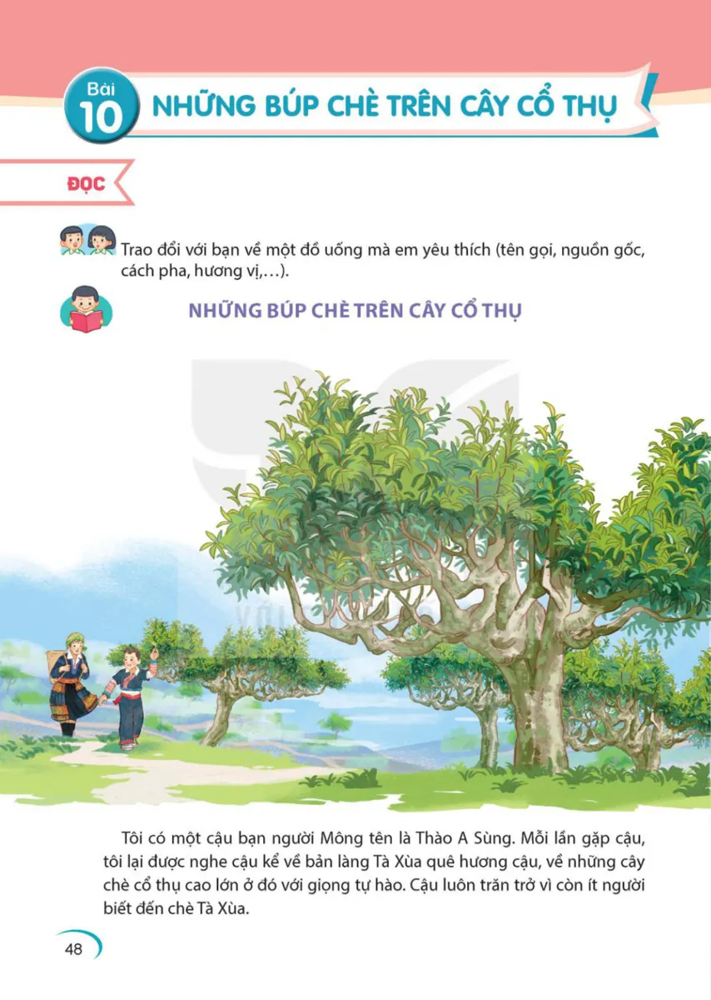
b. Chọn nội dung tương ứng với mỗi phần của đoạn văn.
Phần
Nội dung
Nêu ý nghĩa của sự việc; khẳng định lại tình cảm, cảm
Mở đầu
xúc đối với sự việc.
Triển khai
Nêu tên sự việc; thời gian, địa điểm diễn ra sự việc;
ấn tượng chung về sự việc.
Kết thúc
Nêu tình cảm, cảm xúc về những chỉ tiết nổi bật của
sự việc (khung cảnh, hoạt động, người tham gia,...).
c. Trong phần triển khai, những chỉ tiết nào nói về ngày hội gây được
ấn tượng với người viết?
d. Tình cảm, cảm xúc của người viết được bộc lộ qua những từ ngữ, câu
văn nào?
2. Trao đổi về những điểm cần lưu ý khi viết đoạn văn thể hiện tình cảm,
cảm xúc về một sự việc.
G:
— Đoạn văn thể hiện tình cảm, cảm xúc về một sự việc thường có mấy
phần? Đó là những phần nào?
— Nội dung chính của mỗi phần là gì?
— Có những cách nào để thể hiện tình cảm, cảm xúc về một sự việc?
Ghi nhớ
I
©ñM
Đoạn văn thể hiện tình cảm, cảm xúc về một sự việc thường có
3 phần:
— Mở đầu: Giới thiệu sự việc và nêu ấn tượng chung về sự việc.
— Triển khai: Nêu tình cảm, cảm xúc về những chỉ tiết nối bật của
sự việc.
- Kết thúc: Nêu ý nghĩa của sự việc; khẳng định lại tình cảm, cảm
xúc đối với sự việc,....
1. Nói với người thân về một việc em đã làm được trong ngày. Nêu tình
cảm, cảm xúc của em khi thực hiện và hoàn thành công việc đó.
2. Tìm đọc một cuốn sách viết về một miền đất (ví dụ: Phía tây Trường Sơn
của Vũ Hùng, NXB Kim Đồng; Quê nội của Võ Quảng, NXB Kim Đồng;...).
47
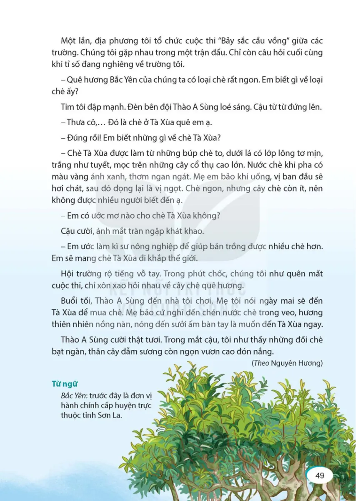
Bài
NHỮNG BÚP CHÈ TRÊN CÂY CỔ THỤ
U9)
ĐỌC
Trao đổi với bạn về một đồ uống mà em yêu thích (tên gọi, nguồn gốc,
cách pha, hương vị,...).
NHỮNG BÚP CHÈ TRÊN CÂY CỔ THỤ
Tôi có một cậu bạn người Mông tên là Thào A Sùng. Mỗi lẫn gặp cậu,
tôi lại được nghe cậu kể về bản làng Tà Xùa quê hương cậu, về những cây
chè cổ thụ cao lớn ở đó với giọng tự hào. Cậu luôn trăn trở vì còn ít người
biết đến chè Tà Xùa.
48
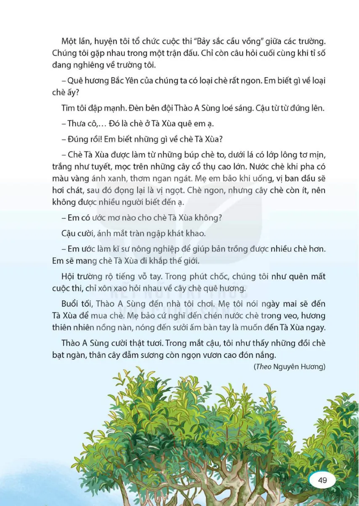
Một lần, huyện tôi tổ chức cuộc thi “Bảy sắc cầu vồng” giữa các trường.
Chúng tôi gặp nhau trong một trận đấu. Chỉ còn câu hỏi cuối cùng khi tỉ số
đang nghiêng về trường tôi.
- Quê hương Bắc Yên của chúng ta có loại chè rất ngon. Em biết gì về loại
chè ấy?
Tim tôi đập mạnh. Đèn bên đội Thào A Sùng loé sáng. Cậu từ từ đứng lên.
— Thưa cô,... Đó là chà ở Tà Xùa quê em ạ.
- Đúng rồi! Em biết những gì về chè Tà Xùa?
- Chè Tà Xùa được làm từ những búp chà to, dưới lá có lớp lông tơ mịn,
trắng như tuyết, mọc trên những cây cổ thụ cao lớn. Nước chè khi pha có
màu vàng ánh xanh, thơm ngan ngát. Mẹ em bảo khi uống, vị ban đầu sẽ
hơi chát, sau đó đọng lại là vị ngọt. Chè ngon, nhưng cây chà còn ít, nên
không được nhiều người biết đến ạ.
— Em có ước mơ nào cho chè Tà Xùa không?
Cậu cười, ánh mắt tràn ngập khát khao.
- Em ước làm kĩ sư nông nghiệp để giúp bản trồng được nhiều chà hơn.
Em sẽ mang chè Tà Xùa đi khắp thế giới.
Hội trường rộ tiếng võ tay. Trong phút chốc, chúng tôi như quên mất
cuộc thi, chỉ xôn xao hỏi nhau về cây chè quê hương.
Buổi tối, Thào A Sùng đến nhà tôi chơi. Mẹ tôi nói ngày mai sẽ đến
Tà Xùa để mua chè. Mẹ bảo cứ nghĩ đến chén nước chè trong veo, hương
thiên nhiên nổng nàn, nóng đến sưởi ấm bàn tay là muốn đến Tà Xùa ngay.
Thào A Sùng cười thật tươi. Trong mắt cậu, tôi như thấy những đổi chè
bạt ngàn, thân cây đẫm sương còn ngọn vươn cao đón nắng.
(Theo Nguyên Hương)
49
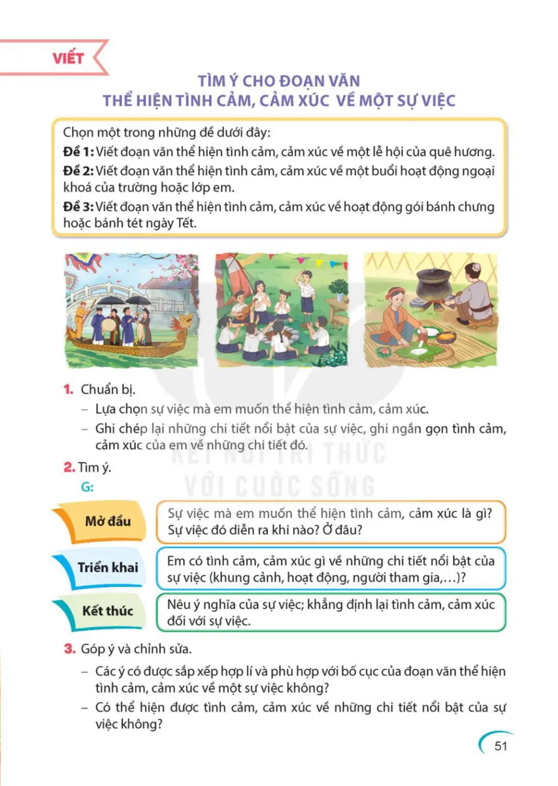
1. Thào A Sùng kể với bạn những gì về quê hương của cậu?
2. Trong cuộc thi “Bảy sắc cầu vồng? Thào A Sùng đã giới thiệu thế nào về
chè Tà Xùa?
Cây chè
Búp chè
Nước chè
3. Thào A Sùng mơ ước điều gì? Những chỉ tiết nào thể hiện ước mơ đó?
4. Theo em, vì sao khi nghe Thào A Sùng nói về chè Tà Xùa, các bạn nhỏ như
quên mất cuộc thi? Chọn câu trả lời dưới đây hoặc nêu ý kiến của em.
A. Vì Thào A Sùng nói rất hay, các bạn háo hức muốn nghe tiếp.
B. Vì các bạn nhận ra hiểu biết về sản vật quê hương của mình còn ít ỏi,
muốn biết thêm.
C. Vì các bạn đang có cảm hứng về việc phát triển sản vật quê hương
giống như Thào A Sùng.
5. Tưởng tượng và kể tiếp câu chuyện khi Thào A Sùng đã trưởng thành.
1. Tìm từ ngữ gọi tên sản vật của một số địa phương mà em biết và nêu đặc
điểm của những sản vật đó.
Sản vật
Địa phương
Đặc điểm
chè
Tà Xùa
chát, ngọt
2. Đặt một câu ghép nói về sản vật của một địa phương, trong câu có chứa
từ ngữ đã tìm được ở bài tập 1.
50
TÌM Ý CHO ĐOẠN VĂN
THỂ HIỆN TÌNH CẢM, CẢM XÚC VỀ MỘT SỰ VIỆC
Chọn một trong những đề dưới đây:
Đề 1: Viết đoạn văn thể hiện tình cảm, cảm xúc về một lễ hội của quê hương.
Đề 2: Viết đoạn văn thể hiện tình cảm, cảm xúc về một buổi hoạt động ngoại
khoá của trường hoặc lớp em.
Đề 3: Viết đoạn văn thể hiện tình cảm, cảm xúc về hoạt động gói bánh chưng
hoặc bánh tét ngày Tết.
1. Chuẩn bị.
— Lựa chọn sự việc mà em muốn thể hiện tình cảm, cảm xúc.
— Ghi chép lại những chỉ tiết nổi bật của sự việc, ghi ngắn gọn tình cảm,
cảm xúc của em về những chỉ tiết đó. 'RUE
2. Tìm ý.
G:
V fÏ| PIIfP SñNG
Mở đầu
Sự việc mà em muốn thể hiện tình cảm, cảm xúc là gì?
Sự việc đó diễn ra khi nào? Ở đâu?
Triển khai
Em có tình cảm, cảm xúc gì về những chỉ tiết nổi bật của
sự việc (khung cảnh, hoạt động, người tham gia,...)?
Kết thúc
Nêu ý nghĩa của sự việc; khẳng định lại tình cảm, cảm xúc
đối với sự việc.
3. Góp ý và chỉnh sửa.
— Các ý có được sắp xếp hợp lí và phù hợp với bố cục của đoạn văn thể hiện
tình cảm, cảm xúc về một sự việc không?
- Có thể hiện được tình cảm, cảm xúc về những chỉ tiết nổi bật của sự
việc không?
51
ĐỌC MỞ RỘNG
4. Đọc phiếu đọc sách dưới đây:
xô
Tên truyện:
Phiếu đọc sách này của Lâm Phong
ĐẤT RỪNG PHƯƠNG NAM
Ngày đọc: 2 tháng 11 năm 2024
Tác giả: Đoàn Giỏi
Thể loại: truyện
Nội dung tác phẩm
Giới thiệu về cảnh sắc
Tiền Giang, Hậu Giang, Kiên Giang,
Người dân Nam Bộ
của vùng đất Nam Bộ
Cà Mau,... là những miền đất trù phú yêu lao động, yêu
qua hành trình phiêu
với những cánh đồng mênh mang,
thiên nhiên, nhân ái,
lưu của cậu bé An.
sông nước rì rào, rừng rậm bạt ngàn, trí dũng, một lòng đi
có nhiều loài thú hoang dã: hổ, rắn,
theo kháng chiến.
cá sấu,...
Điều ấn tượng nhất về tác phẩm
Những câu văn tả cảnh như chứa đầy âm thanh, màu sắc, hương vị:
Chim hót líu lo. Nắng bốc hương hoa tràm thơm ngây ngất. Gió đưa mùi hương ngọt
lan ra, phẳng phất khắp rừng...
Cảm nhận chung về tác phẩm
MI
~ Nhờ cuốn sách này, tôi có thêm hiểu biết về vùng
đất Nam Bộ. Tôi bị choáng ngợp bởi thiên nhiên
độ yêu thích
hoang sơ, đẹp đẽ lại rất êm đểm, trù phú. Tôi xúc
* Rất hay.
động, trân trọng vẻ đẹp tâm hồn của con người
Khá hay
- Điều tiếc nuối nhất: Kết thúc tác phẩm, câu bé An
nơi đây.
Bình thường
vẫn chưa được gặp lại bố mẹ của mình.
Không hấp dặn
2. Đọc một cuốn sách viết về một miền đất.
3. Viết phiếu đọc sách theo mẫu ở bài tập 1 và dựa vào đó chia sẻ với các bạn
những thông tin thú vị trong cuốn sách.
Dựa vào cuốn sách mà em đã đọc về một miền đất, vẽ tranh hoặc chia
sẻ với người thân cảm xúc, suy nghĩ về cảnh vật, con người,... của miền
đất đó.
92
Tuân 24
Bùi
HƯƠNG CÔM MÙA THU
1
ĐỌC
Chơi trò chơi: Tiếp sức.
Kể tên những món ăn được làm từ lúa gạo.
HƯƠNG CỔÔM MÙA THU
Tháng Chín heo may về phố
Dắt theo hương cốm vào thu
Sớm nay xôn xao ô cửa
Gió thơm vừa ghé — ô kìal
Gió kể: Ngày xưa hạt thóc
Trời đem gieo tặng nhà nông
Sớm khuya mồ hôi đổ xuống
Đợi mùa cây lúa tríu bông!
Hạt lúa tròn căng hơi sữa
l
| 4
Thảo thơm dâng tặng cho đời J0
Tay mẹ, tay bà sàng sảy
Sối `
Côm mang hồn đất, hồn người.
Em thấy màu vàng của nắng
Em thấy màu xanh của trời
Em thấy màu nâu của đất
Ủ trong hạt cốm xanh ngời!
Tháng Chín bước chân ra phố
Tay lùa từng ngón gió thơm
Hồ Gươm chớp đôi mắt biếc
Nhắc mùa hương cốm vừa lên!
(Bảo Ngọc)
53
1. Tìm trong khổ thơ thứ nhất những chỉ tiết nói về khung cảnh thiên nhiên
và cảm xúc của con người khi mùa cốm đến.
2. Dựa vào sơ đồ dưới đây, kể lại hành trình làm ra hạt cốm theo lời
của gió.
3. Cách tả màu sắc của hạt cốm cho thấy bạn nhỏ cảm nhận thế nào về
món quà kì diệu của mùa thu?
4. Chi tiết nào cho thấy cốm là thức quà đặc trưng của Hà Nội?
5. Em cảm nhận được điều gì về tình cảm của tác giả đối với hương cm
trong mùa thu Hà Nội?
* Học thuộc lòng bài thơ.
LUYỆN TỪ VÀ CÂU
NũI TRỊ THỨP
Iinr CHÀNI
LIÊN KẾT CÂU BẰNG TỪ NGỮ NỔI
4. Đọc đoạn văn dưới đây và thực hiện yêu cầu.
Trên con đường từ nhà đến trường, tôi phải đi qua Hồ Gươm. Lúc có bạn
thì chuyện trò tíu tít, có khi đuổi nhau suốt dọc đường. Nhưng khi đi một
mình, tôi thích ôm cặp vào ngực, nhìn lên các vòm cây, vừa đi vừa lầm nhấm
ôn bài. Vì thế, tôi thường là đứa phát hiện ra bông hoa đầu tiên nở trên cây
gạo trước đền Ngọc Sơn. Rồi bông nọ gọi bông kia, bông nọ ganh bông kia,
chỉ vài hôm sau, cây gạo đã như một cây đuốc lớn cháy rừng rực giữa trời.
(Theo Vân Long)
a. Nhận xét về vị trí của các từ ngữ in đậm trong câu.
b. Nêu tác dụng của những từ ngữ đó trong đoạn văn.
94
2. Chọn từ ngữ (cuối cùng, tiếp theo, sau đó, đầu tiên) thay cho bông hoa để tạo
sự liên kết giữa các câu trong đoạn văn.
li Quy trình làm cốm gồm nhiều công đoạn. (2) #, người ta gặt lúa non
về để tuốt và lấy hạt. 3) ®, họ đãi lúa qua nước để loại bỏ các hạt lép.
_ ®, hạt lúa được rang và giã thành cốm. E9
người ta sàng sảy cốm
thật kĩ và để trong những chiếc thúng nhỏ lót lá sen.
(Theo Ngọc Hà)
Ghi nhớ
Các câu trong một đoạn văn có thể liên kết với nhau bằng một kết từ
hoặc từ ngữ có tác dụng nối (gọi chung là từ ngữ nối) như: rồi, nhưng,
vì thế, thứ nhất, thứ hai, trái lại, ngoài ra, bên cạnh đó, đầu tiên, sau đó,
tiếp theo, cuối cùng,... Từ ngữ nối thường đứng ở đầu câu.
3. Tìm các từ ngữ nối thay cho bông hoa để tạo sự liên kết giữa các câu.
a. Ở miền Bắc, Tết đến, hoa đào nở rộ. ® ở miền Nam, khi Tết về, hoa mai
khoe sắc.
b. Đến Huế, du khách thích được ngắm cảnh trên sông Hương.
mọi người
còn mong muốn được thưởng thức ẩm thực Huế.
c. Nhiều người thích cốm làng Vòng vì nhiều lí do. Thứ nhất, cốm ở đây rất
ngon. #, cốm còn là hình ảnh gợi liên tưởng đến mùa thu Hà Nội.
d. Đi du lịch ở miễn Tây Nam Bộ, du khách sẽ có những trải nghiệm thú vị
với nhiều hoạt động hấp dẫn như: chèo xuống ba lá, đi cầu khỉ, thăm các
chợ nổi. ®, du khách còn có thể thoả thích hái trái cây khi ghé thăm các
miệt vườn.
4. Viết đoạn văn (3 - 5 câu) về một địa điểm du lịch hoặc khu di tích lịch sử mà
em biết, trong đó có sử dụng từ ngữ nối để liên kết câu.
Đền Hùng (Phú Thọ)
Đà Lạt (Lâm Đồng)
55
VIẾT
VIẾT ĐOẠN VĂN
THỂ HIỆN TÌNH CẢM, CẢM XÚC VỀ MỘT SỰ VIỆC
Chọn một trong những đề dưới đây:
Đề 1: Viết đoạn văn thể hiện tình cảm, cảm xúc về một lễ hội của quê hương.
Đề 2: Viết đoạn văn thể hiện tình cảm, cảm xúc về một buổi hoạt động
ngoại khoá của trường hoặc lớp em.
Đề 3: Viết đoạn văn thể hiện tình cảm, cảm xúc về hoạt động gói bánh
chưng hoặc bánh tét ngày Tết.
1. Dựa vào các ý đã tìm được trong hoạt động Viết ở Bài 10, viết đoạn văn
theo yêu cầu của đề bài.
Nên dựa vào diễn biến của sự việc để thể hiện tình cảm,
cảm xúc.
Cách thể hiện tình cảm, cảm xúc:
- Chọn chỉ tiết nổi bật của sự việc để thể hiện tình cảm,
cảm xúc.
Lưu ý
Sử dụng từ ngữ, câu văn thể hiện trực tiếp tình cảm,
cảm xúc.
Kết hợp bộc lộ tình cảm, cảm xúc với kể, tả sự việc.
Đoạn văn cần tập trung thể hiện tình cảm, cảm xúc về
sự việc, tránh lạc sang kể chuyện hoặc miêu tả.
2. Đọc soát và chỉnh sửa bài viết.
a. Tự nhận xét bài làm của em theo những yêu cầu dưới đây:
— Giới thiệu được sự việc và nêu ấn tượng chung về sự việc.
- Thể hiện được tình cảm, cảm xúc về khung cảnh, hoạt động, người
tham gia,... sự việc.
— Sử dụng từ ngữ phong phú, câu văn đúng và hay.
b. Chỉnh sửa lỗi (nếu có).
Trao đối với người thân về một hoạt động của lớp hoặc của trường đã
để lại cho em nhiều cảm xúc.
So
Bởi
VŨ ĐIỆU TRÊN NỀN THỔ CẨM
12
ĐỌC
Giới thiệu về trang phục truyền thống của một dân tộc trên đất nước ta.
G: - Em muốn giới thiệu về trang phục truyền thống của dân tộc nào?
- Trang phục đó có điểm gì đặc sắc (chất liệu, màu sắc,...)?
VŨ ĐIỆU TRÊN NỀN THỔ CẨM
Dân tộc Cơ-tu cư trú ở núi rừng Trường Sơn còn bảo lưu nhiều di sản văn
hoá độc đáo. Một trong những di sản đó là nghề dệt thổ cẩm. Bộ trang phục
cổ truyền của dân tộc Cơ-tu được làm từ thổ cẩm luôn rực rỡ bởi những hoa
văn dệt bằng hạt cườm. Trong đó, nổi bật nhất là hoa văn da dá, mô phỏng
điệu múa Da đá.
Điệu múa Da dá là một trong những điệu múa cổ xưa nhất của phụ nữ
Cơ-tu. Đây là điệu múa cầu mùa, thường được thực hiện trong các lễ hội
cộng đồng của người Cơ-tu. Khi múa, đôi tay của người phụ nữ xoè lên trời
như để cầu xin và đón nhận hạt lúa từ thần linh.
Điệu múa Da đá đã được
thợ dệt Cơ-tu khắc hoạ
một cách sống động thành
hoa văn trên nền thổ cẩm
truyền thống. Bằng đôi tay
Ả Ả
khéo léo, người thợ dệt đã đính những hạt cườm trắng vào nền vải thô rám,
tạo thành hoa văn da dá, trang trí trên váy, áo của phụ nữ.
Với vẻ đẹp mang đậm sắc thái tộc người, hoa văn da dá thực sự góp phần
làm cho di sản trang phục của đồng bào Cơ-tu thêm giá trị.
(Theo Trần Tấn Vịnh)
Từ ngữ
_ Thổcẩm: loại vải của một số dân tộc thiểu số, dệt bằng sợi có nhiều màu sặc sỡ.
— Hoa văn: hình vẽ trang trí trên các đồ vật.
— Di sản: sản phẩm vật chất và tỉnh thần của thời trước để lại.
1. Hoa văn trên bộ trang phục cổ truyền của người Cơ-tu có những điểm gì
độc đáo?
2. Phụ nữ Cơ-tu múa điệu Da đá như thế nào và để làm gì?
3. Hoa văn da dá trên váy, áo đã được những người thợ dệt Cơ-tu thực hiện
như thế nào?
4. Vì sao nói hoa văn da dá mang đậm sắc thái tộc người Cơ-tu? Chọn những
đáp án đúng.
A. Vì nó mô phỏng điệu múa câu mưa của phụ nữ Cơ-tu.
B. Vì nó khắc hoạ điệu múa cầu mùa của phụ nữ Cơ-tu.
C. Vì nó được trang trí trên trang phục truyền thống của người Cơ-tu.
D. Vì nó là sản phẩm của những người thợ dệt Cơ-tu.
5. Theo em, tác giả muốn nói điều gì qua bài đọc?
1. Tra từ điển để tìm nghĩa của mỗi từ dưới đây:
cổ truyền
cổ vật
2. Tìm thêm 3 từ có tiếng cổ với nghĩa “thuộc về thời xa xưa”
3. Tìm từ có tiếng cổ thay cho bông hoa trong mỗi câu dưới đây:
1 Bảo tàng Lịch sử Quốc gia Việt Nam toạ lạc trên phố Tràng Tiền
(Hà Nội), giữa một vườn cây ® đã hàng trăm năm tuổi. 2 Đó là một toà nhà
®, có kiến trúc kết hợp Đông - Tây tuyệt đẹp. 1) Tại đây trưng bày rất nhiều
hiện vật liên quan đến lịch sử của Việt Nam từ thời # đến hiện đại, trong đó
có những ## rất có giá trị như: rìu đá Phùng Nguyên, trống đồng Đông Sơn,
cọc gỗ Bạch Đẳng,...
(Theo Hoàng Anh)
958
VIẾT
ĐÁNH GIÁ, CHỈNH SỬA ĐOAN VĂN
THỂ HIỆN TÌNH CẢM, CẢM XÚC VỀ MỘT SỰ VIỆC
1. Đánh giá bài viết.
a. Nghe thầy cô giáo nhận xét về bài làm.
b. Đọc lại bài làm của em để phát hiện lỗi và sửa lỗi. Ví dụ:
- Bài viết bị lạc ý hoặc lặp ý.
— Chưa nêu được ấn tượng chung về sự việc.
— Chưa thể hiện được tình cảm, cảm xúc về các chỉ tiết nổi bật của sự việc
(khung cảnh, hoạt động,...).
— Sử dụng từ ngữ thể hiện tình cảm, cảm xúc chưa phù hợp.
2. Viết lại một số câu trong đoạn văn của em theo gợi ý dưới đây:
— Nêu tình cảm, cảm xúc về khung cảnh diễn ra sự việc. Ví dụ:
Chiều Ba mươi, bên suối đã thấy bóng các bà, các mẹ rửa rau ngải để làm
bánh. Mùi thơm của rau ngải như ướp hương vào dòng suối. Tiếng cười lanh
lãnh của đám trẻ con theo chân người lớn ra suối nghịch nước làm đám
chim chào mào giật mình bay vụt lên từ bụi cây
lúp xúp. Đất trời như được gột rửa và trở
nên tinh khiết lạ thường. Tôi bỗng thấy
lòng mình như mở ra, trong sáng với
hương rau ngải phảng phất xa gần.
(Nguyễn Luân)
- Nêu tình cảm, cảm xúc về hoạt động. Ví dụ:
Chiều mùng 2 tết Thanh minh, cả nhà tôi tất bật làm bánh ngải. Bố vung
cao tay chày giã bột. Mẹ khéo léo lật giở từng thớ bột đang chuyển dần
sang màu xanh mướt. Còn bà thì tỉ mẩn chuẩn bị vừng đen và mật mía để
làm nhân bánh. Tôi chạy lăng xăng từ chỗ nọ sang chỗ kia, lâu lâu lại hít hà
căng bụng mùi thơm của mật mía, của bột bánh. Tôi cảm
nhận rõ sự rộn ràng, hối hả nhưng ấm áp từ những việc
làm của mọi người trong nhà. Vì thế tôi càng háo hức
khi nghĩ đến những chiấc bánh ngải đang dần hình
thành từ đôi bàn tay của bà, của mẹ, của cha.
(Nguyễn Luân)
59
NÓI VÀ NGHE
ĐỊA ĐIỂM THAM QUAN, DU LỊCH
Yêu cầu: Giới thiệu về một địa điểm tham quan, du lịch mà em biết.
1. Chuẩn bị.
- Có thể giới thiệu về một địa điểm tham quan, du lịch em đã đến hoặc
được biết qua sách báo, ti vi,... theo các nội dung sau:
Tên gọi
Địa chỉ
Đặc điểm (cảnh quan thiên
nhiên, công trình kiến trúc,...)
- Khi giới thiệu về địa điểm tham quan, du lịch, có thể sử dụng thêm
tranh ảnh, bản đồ để chỉ dẫn về khoảng cách địa lí, phương tiện đi lại,...
2. Trình bày.
— Giới thiệu về địa điểm tham quan, du lịch theo những nội dung đã
chuẩn bị. Nhấn mạnh vào những đặc điểm gây ấn tượng của địa điểm
tham quan, du lịch.
— Nghe lời giới thiệu của bạn và ghi chép những thông tin mới.
Thác Bản Giốc (Cao Bằng)
Cầu Thê Húc - đền Ngọc Sơn
Sông Hương (Huế)
(Hà Nội)
8. Trao đổi, góp ý.
Nộ dung
Cách giới thiệu
Các phương tiện
giới thiệu
hỗ trợ
Chia sẻ với người thân những điều em đã ghi chép khi nghe bạn giới
thiệu về địa điểm tham quan, du lịch.
60
Tuân
25
Bùi
IK:
ĐÀN TRƯNG -
TIẾNG CA ĐẠI NGÂN
Nói những điều em biết về Tây Nguyên.
ĐÀN T'RƯNG - TIẾNG CA ĐẠI NGÀN
Đến Tây Nguyên, ta thường được nghe tiếng đàn trưng ngân dài theo
dòng suối, hoà cùng tiếng gió trên đèo núi hoang vu...
Cùng với điệu hát ru, tiếng đàn trưng đã đi vào kí ức tuổi thơ của các bạn
trẻ Tây Nguyên từ lúc còn được địu trên lưng mẹ. Lớn lên, mỗi bước chân
của họ vào rừng kiếm củi, xuống suối lấy nước, ra nương trỉa lúa,... đều vấn
vương nhịp điệu khi khoan khi nhặt, khi trầm hùng như tiếng thác đổ, khi
thánh thót, róc rách như suối reo của đàn trưng.
Dưới mỗi gầm chòi cao lêu nghêu ở sát bên chân rẫy, đều có một chiếc
đàn trưng cong cong như chiếc võng đưa em. Mùa lúa chín, trai làng thay
phiên nhau trực ở chòi canh. Chốc chốc, họ lại gõ trên chiếc đàn trưng, dạo
một bản nhạc “đánh tiếng” đuổi chim muông và thú rừng mon men đến rẫy
61
phá lúa. Tiếng đàn chẳng những rộn rã suốt ngày mà còn thánh thót thâu
đêm, làm ấm lòng những chàng trai canh rẫy trong rừng khuya sương lạnh.
Từ buôn này sang buôn khác, ta còn thấy những chiếc đàn trưng trên
đỉnh dốc cao. Người đi qua đây sẽ gõ cho tiếng đàn vang lên để thêm yên
tâm, vững bước vượt qua quãng đường rừng u tịch.
Cùng với mái nhà rông thân thương, cao vút, tiếng đàn trưng rộn ràng,
lưu luyến đã trở thành niềm thương, nỗi nhớ của người Tây Nguyên.
(Theo Ay Dun và Lê Tấn)
Từ ngữ
U tịch: vằng vẻ và tĩnh mịch.
1. Bài đọc nói về điểm nổi bật nào của vùng đất Tây Nguyên?
Cảnh thiên nhiên
Tiếng đàn trưng
Mái nhà rông
hùng vĩ
rộn rã
cao vút
2. Tiếng đàn trưng gắn bó với người Tây Nguyên như thế nào?
3. Những chỉ tiết nào cho thấy đàn trưng là nhạc cụ phổ biến, được yêu
thích ở Tây Nguyên?
4. Theo em, vì sao tác giả khẳng định tiếng đàn trưng đã trở thành niềm
thương, nỗi nhớ của người Tây Nguyên?
5, Bài đọc giúp em cảm nhận được điều gì về cuộc sống và con người
Tây Nguyên?
—.
LUYỆN TỪ VÀ CÂU
LIÊN KẾT CÂU BẰNG TỪ NGỮ THAY THẾ
4. Mỗi từ in đậm trong đoạn văn dưới đây thay thế cho từ ngữ nào? Nêu tác
dụng của việc thay thế từ ngữ trong đoạn văn.
Cánh đồng cỏ của cao nguyên Gia Lai, Đắk Lắk vào mùa mưa có rất
nhiều hồ nước. Đó là những vạt đất trũng, phơi nắng suốt mấy tháng
mùa khô. Bước vào mùa mưa, chúng trở thành những hồ nước đầy ăm ắp
như những chiếc gương lớn.
(Theo Thiên Lương)
62
2. Các từ ngữ in đậm trong đoạn văn dưới đây nói về ai? Việc dùng những
từ ngữ đó có tác dụng gì?
Xúc động trước tình cảm của người cha dành cho con gái và tiếng dương
cầm da diết của người thiếu nữ mù, Bét-tô-ven đến bên cây đàn, ngồi
xuống và bắt đầu chơi. Những
nốt nhạc ngẫu hứng vang lên,
tràn đầy cảm xúc yêu thương
của nhà soạn nhạc thiên tài,
lúc êm ái, nhẹ nhàng như ánh
trăng, lúc lại mạnh mẽ như
sóng sông Đa-nuýp.
(Theo Tiếng Việt 4, tập một,
NXB Giáo dục Việt Nam, 2022)
Ghi nhớ
Các câu trong đoạn văn có thể liên kết với nhau bằng cách dùng đại từ,
danh từ,... ở câu sau thay thế cho từ ngữ đã dùng ở câu trước. Ngoài
tác dụng liên kết, việc dùng từ ngữ thay thế còn tránh được sự trùng lặp
từ ngữ trong đoạn văn.
3. Các từ ngữ in đậm trong mỗi đoạn văn dưới đây thay thế cho những từ
ngữ nào?
a. Đến Tây Bắc, bạn sẽ gặp những nghệ nhân người Mông thổi khèn
nơi đỉnh núi mênh mang lộng gió. Hình bóng họ in trên nền trời xanh hệt
như một tuyệt tác của thiên nhiên.
(Theo Hà Phong)
b. Một giây... hai giây... ba giây. Vèo một cái, con dơi buông người
nhảy dù vào không trung rồi biến mất như một tia chớp. Chúng tôi vỗ
tay reo hò ầm ï. Tối hôm ấy, chúng tôi rước đèn, chúng tôi phá cỗ, thỉnh
thoảng lại ngước lên vòm trời trong biếc xem có thấy “nhà du hành” bay
trở lại hay không.
(Theo Vũ Tú Nam)
c. Chiều nào cũng vậy, con chim hoạ mi ấy không biết tự phương nào
bay đến đậu trong bụi tầm xuân ở vườn nhà tôi mà hót... Hót một lúc lâu,
“nhạc sĩ giang hồ” không tên, không tuổi ấy từ từ nhắm hai mắt lại, thu
đầu vào lông cổ, im lặng ngủ...
(Theo Ngọc Giao)
63
4. Chọn từ ngữ thay thế cho từ in đậm để liên kết các câu trong đoạn văn
dưới đây:
thành phố ngàn hoa
thành phố du lịch
thiên đường du lịch
Đà Lạt là địa danh du lịch nổi tiếng của nước ta. Đà Lạt níu chân du khách
không chỉ vì khí hậu nơi đây quanh năm mát mẻ mà còn bởi nhiều điểm
du lịch hấp dẫn. Trong những ngày lưu lại ở Đà Lạt, du khách không thể
không ghé thăm thung lũng Tình yêu, núi Lang Bi-ang, hồ Xuân Hương,...
Đó là những địa danh huyền thoại đã làm nên một Đà Lạt mộng mơ. Để làm
mới mình trong mắt du khách, gần đây, Đà Lạt xây dựng thêm một số điểm
du lịch mới như làng Cù Lần, đồi chè Cầu Đất, vườn dâu tây Đà Lạt,...
Nh ứng đ lềm du lịch này sẽ góp phần làm nên một Đà Lạt vừa truyền thống
vừa hiện đại, giàu sức hút đối với du khách trong nước và quốc tế.
(Lâm Anh)
VIẾT
TÌM HIỂU CÁCH VIẾT CHƯƠNG TRÌNH HOAT ĐỘNG
1. Đọc bản chương trình dưới đây và trả lời câu hỏi.
Chương trình “Tiết học biên cương”
— Hưởng ứng ngày Biên phòng toàn dân, tìm hiểu về cột mốc biên giới
và nhiệm vụ của người dân trong việc bảo vệ cột mốc biên giới.
— Có ý thức tham gia các công việc vừa sức để góp phân bảo vệ cột mốc
biên giới.
(2) Thời gian và địa điểm
— Thời gian: Từ 7 giờ 30 đến 10 giờ 30 ngày 03 tháng 3 năm 2025.
— Địa điểm: Đài quan sát của đồn biên phòng.
— Thành lập Ban tổ chức (giáo viên chủ nhiệm, phụ huynh học sinh, cán
bộ lớp).
- Ban tổ chức liên hệ với đồn biên phòng, thuê xe,. ..
~ Học sinh chuẩn bị câu hỏi về cột mốc và đường biên giới, về công việc
của bộ đội biên phòng.
B4
(4) Kế hoạch thực hiện
(Các hoạt động tại Đài quan sát của đồn biên phòng)
Thời gian
Nội dung
Người phụ trách
8 giờ 00 - Tham quan Đài quan sát và cột mốc.
Ban tổ chức
8 giờ 15
8 giờ 15 -
Nghe giới thiệu về lịch sử hình thành cột
Cán bộ đồn
9 giờ 00
mốc, việc quản lí và bảo vệ cột mốc.
biên phòng
9 giờ 00 —
Nêu câu hỏi về cột mốc, biên giới và công
Cán bộ đồn
9 giờ 15
việc của các cán bộ, chiến sĩ biên phòng.
biên phòng
9 giờ 15 -
Giao lưu văn nghệ và chụp ảnh kỉ niệm.
Ban tổ chức
10 giờ 00
Lớp trưởng
Sa,
Nguyễn Ngọc Hà
a. Chương trình trên nhằm
triển khai hoạt động nào?
b. Chương trình gồm có
mấy mục? Đó là những
mục nào?
c. Mỗi mục gồm những nội
dung gì?
2. Irao đổi về những điểm cần lưu ý khi viết chương trình hoạt động.
G:
- Những hoạt động chuẩn bị
- Cách lập kế hoạch thực hiện
Ghi nhớ
Chương trình hoạt động thường được trình bày theo các mục: mục
đích, thời gian và địa điểm, chuẩn bị, kế hoạch thực hiện,...
Tìm đọc 2 - 3 bài ca dao về di tích, lã hội hoặc sản vật độc đáo của một
địa phương.
65
14
Bói ĐƯỜNG QUÊ ĐỒNG THÁP MƯỜI
Chia sẻ những điều em biết về vùng đất Đồng Tháp Mười.
ĐƯỜNG QUÊ ĐỒNG THÁP MƯỜI
Bông súng thả lông đèn
Sáng bồng bềnh mặt nước
Cá lòng tong chạy trước
Dẫn đường về thăm ông.
Đường quê, sào vÍt cong
Xuồng lướt như tên bắn
Cò ở đâu giật mình
Bay lẫn vào mây trắng.
Lẫm lem con trâu đầm
Chém cặp sừng loé nắng
Xình xịch thuyền đuôi tôm
Chở lúa vàng, rẽ sóng.
Kìa mấy búp sen hồng
Nối đầu thu, cuối hạ
Nước lớn sông Cửu Long
Chơi với sen nghiêng ngả.
66
Về xứ mười tầng tháp
Leo cầu trăm đốt tre
Ông đứng như bụt hiện
Chờ cháu cuối đường quê.
(Trần Quốc Toàn)
Từ ngữ
— Cá lòng tong: cá nước ngọt, sống thành đàn, cỡ nhỏ, mình dẹt, cùng họ với
cá chép.
— Xứ mười tầng tháp: chỉ Đồng Tháp Mười (tương truyền xưa ở Đồng Tháp Mười
có toà tháp cao mười tầng).
1.Ở khổ thơ đầu, đường về quê thú vị như thế nào qua cảm nhận của
bạn nhỏ?
2. Tìm những nét đẹp riêng của vùng Đồng Tháp Mười được miêu tả trong
bài thơ.
_ Về cảnh vật thiên nhiên
II TRÍ THỨP
— Về cuộc sống con người
3. Những từ ngữ nào trong bài thơ gợi tả nhịp sống ở Đồng Tháp Mười rất
sôi động, náo nức?
4. Ở khổ thơ cuối, bạn nhỏ muốn nói điều gì về quê hương mình?
5. Những chỉ tiết, hình ảnh nào ở miền quê này gợi nhớ những câu chuyện
cổ tích quen thuộc?
* Học thuộc lòng bài thơ.
1. Các từ ngữ dưới đây có tác dụng gì trong việc miêu tả cảnh vật?
bồng bềnh
lãm lem
xình xịch
nghiêng ngả
2. Tìm những hình ảnh so sánh, nhân hoá trong bài thơ. Em thích hình ảnh
nào nhất? Vì sao?
G7
VIẾT CHƯƠNG TRÌNH HOẠT ĐỘNG
(Bài viết số 1)
Viết chương trình cho một trong những hoạt động dưới đây:
— Phát động phong trào xây dựng tủ sách của lớp.
— Lễ ki niệm ngày thành lập Đội Thiếu niên Tiền phong Hồ Chí Minh
(15 tháng 5).
- Một hoạt động mà trường em sắp tổ chức.
4. Chuẩn bị.
- Chọn một hoạt động, xác định mục đích, thời gian, địa điểm.
— Liệt kê các hoạt động cụ thể và phần công người phụ trách.
- Dự kiến phương tiện, dụng cụ,... cần có.
Lưu ý: Ghi chép lại các nội dung đã chuẩn bị.
2. Viết.
Ñ) Mục đích
Thờ gân và địa điểm
®\ Chuẩn bị
0 Kế hoạch thực hiện
4 4
Thời gian
Nội dung
Người phụ trách
“®
3. Đọc soát và chỉnh sửa.
a. Tự nhận xét bản chương trình em viết theo những yêu cầu dưới đây:
- Có đủ các mục của chương trình.
~ Nội dung của từng mục được trình bày rõ ràng.
- Hình thức bản chương trình đúng yêu cầu, có bảng biểu.
b. Chỉnh sửa lỗi (nếu có).
68
ĐỌC MỞ RỘNG
1. Đọc 2-3 bài ca dao về di tích, lễ hội hoặc sản vật độc đáo ở một địa phương.
Thăng Long Hà Nội đô thành
Nước non ai vẽ nên tranh hoạ đồ.
Cố đô rồi lại tân đô
Ngàn năm văn vật bây giờ là đây.
(Ca dao)
Ai qua Bình Định đang trưa,
Dừng chân uống bắt nước dừa Tam Quan.
Ai về ăn ổi Đình Quang,
Ăn ớt Vĩnh Thạnh, ăn măng Truông Dài.
(Ca đao)
Mồng Bảy hội Khám, mổống Tám hội Dâu
Mồng Chín đâu đâu trở về hội Gióng.
(Ca dao)
2. Viết phiếu đọc sách theo mẫu. TRỊ THƯP
PHIẾU ĐỌC SÁCH
Ngày đọc:
Sự vật, hoạt động được nói đến: @
Những nét độc đáo của di tích, lễ hội hoặc sản vật: &
Suy nghĩ, cảm xúc về ý nghĩa của các bài ca dao: 'Šð
Mức độ yêu thích: #z Ýr Ýr Ýz Ýz
3. Trao đối với bạn về nội dung của một bài ca dao mà em đã đọc.
Tìm hiểu thêm các thông tin về Đồng Tháp Mười hoặc về quê hương em
(đặc điểm địa lí, cảnh sắc, di tích, lễ hội, sản vật,...).
69
Tuần 26
Bùi
XUÔNG BA LÁ QUÊ TÔI
15
ĐỌC
Chia sẻ những điều em biết về một số phương tiện đi lại của người dân
ở vùng sông nước.
XUỒNG BA LÁ QUÊ TÔI
Gọi là xuồng ba lá vì xuống được ghép bởi ba tấm ván: hai tấm ván be
và một tấm ván đáy. Để xuồng được vững chắc, người ta dùng những chiếc
“cong” đóng vào bên trong lòng xuống, tạo thành bộ khung hình xương cá.
Xuồng ba lá là phương tiện di chuyển gắn liền với miền sông nước quê
tôi. Tôi vẫn nhớ những sáng nội chèo xuồng mang cho tôi mấy cái bánh lá
dừa, giỏ cua đồng mà nội vừa bắt được. Nhớnhững chiều chị tôi chèo xuồng
dọc triển sông, bẻ bông điên điển đầy rổ mang về cho má nấu canh chua.
Những chuyến xuồng xuôi ngược đã in đậm trong tiềm thức mỗi người dân
Nam Bộ.
Từ độ cha ông đi mở cõi, xuống là “đôi chân của người dân Nam Bộ:
Những năm tháng quê hương bị bom cày, đạn xới, xuồng cùng nhân dân
bám trụ, giữ xóm, giữ làng. Xuồng chở lương thực tiếp tế cho bộ đội. Xuồng
đưa du kích qua sông, len sâu vào khu căn cứ kháng chiến,...
(UI
SŨNG
70
Đất nước thanh bình, xuồng ba lá lại trở về cuộc sống đời thường. Xuồng
ngược xuôi miền chợ nổi. Xuồng lướt nhanh trên cánh đồng rÌ rào sóng
lúa. Xuồng rộn ràng những đêm giăng câu, thả lưới. Và mỗi sớm mai, trên
nhánh sông quê, những chiếc xuống ba lá theo dòng nước toả đi, chở đầy
ước mơ, khát vọng của tình đất, tình người phương Nam.
(Theo Nguyễn Chí Ngoan)
Từ ngữ
Xuồng: thuyền nhỏ, không có mái che.
1. Tác giả đã giới thiệu thế nào về xuồng ba lá?
2. Xuồng ba lá gợi nhớ những kỉ niệm nào của tác giả với người thân?
3. Từ xưa, chiếc xuồng đã gắn bó thế nào với người dân vùng sông nước?
Thuở cha ông đi mở cõi
Những năm tháng chiến tranh
4. Hình ảnh xuồng ba lá hiện ra như thế nào trong cuộc sống thanh bình
hiện nay?
5. Bài đọc giúp em hiểu thêm điều gì về cảnh vật và con người phương Nam?
LUYỆN TỪ VÀ CÂU
LUYÊN TÂP VỀ LIÊN KẾT CÂU TRONG ĐOAN VĂN
1. Các câu trong những đoạn văn dưới đây liên kết với nhau bằng cách nào?
a. đ Mới hôm qua, tôi chỉ thấy con đường đất đỏ quen thuộc và những
đám cỏ xác xơ. !2 Thế mà hôm nay, đột nhiên những bông hoa mua đầu
mùa đã bật nở, tím hổng như những ngọn đèn vui thấp thoáng trong làn
sương ấm.
(Theo Vũ Tú Nam)
b. q) Múa sư tử thực chất là một điệu múa võ. 12) Các miếng võ được biểu
diễn rõ nhất trong màn sư tử đùa nghịch vờn nhau với đười ươi và khi.
3) Đười ươi và khi tìm đủ mọi cách để trêu chọc sư tử. 4) Bị trêu chọc, con
thú dữ phát khùng nhe răng ra định ngoạm đầu đười ươi và khi, nhưng
những con vật này dùng đủ miếng võ để né tránh một cách tài tình.
(Theo Trần Quốc Vượng - Lê Văn Hảo - Dương Tất Từ)
c. ?) Nhà rông là nơi thờ cúng chung, hội họp chung, tiếp khách chung,
vui chơi chung của tất cả dân làng. 12) Kiến trúc bên trong nhà rông khá
đặc biệt: nhà trống rỗng, chẳng vướng víu một cây cột nào, có nhiều bếp
lửa luôn đượm khói, có nơi dành để chiêng trống, nông cụ,...
3) Đêm đêm,
#1
bên bếp lửa bập bùng, các cụ già kể lại cho con cháu nghe biết bao kỉ niệm
vui buồn ngôi nhà rông đã từng chứng kiến. ® Vì vậy, nhà rông đối với tuổi
trẻ Tây Nguyên thân thương như cái tổ chim êm ấm.
(Theo Ay Dun và Lê Tấn)
2. Chọn từ ngữ thay cho bông hoa để liên kết các câu trong đoạn văn.
người anh, hai anh em, hai vợ chồng người em, nhưng
(1) Ngày xửa ngày xưa ở một nhà kia có hai anh
em, cha mẹ mất sớm. (2) @ chăm lo làm lụng nên
trong nhà cũng đủ ăn. 3) @ từ khi có vợ, người
anh sinh ra lười biếng, bao nhiêu công việc khó
nhọc đều trút cho vợ chồng người em. 4' ® thức
khuya, dậy sớm, cố gắng làm lụng. 5) Thấy thế,
# sợ em tranh công, liền bàn với vợ cho hai vợ
chồng người em ra ở riêng.
(Truyện Cây khể)
3. Viết đoạn văn (4- 5 câu) giới thiệu về một phương tiện đổi lại của người dân
ở vùng sông nước, trong đó có sử dụng từ ngữ nối để liên kết câu.
ĐÁNH GIÁ, CHỈNH SỬA CHƯƠNG TRÌNH HOẠT ĐỘNG
1. Nghe thầy cô giáo nhận xét chung.
2. Đánh giá bản chương trình hoạt động.
— Mục đích của chương trình hoạt động
— Địa điểm và thời gian thực hiện
- Công tác chuẩn bị
—- Nội dung các việc cụ thể và phân bổ thời gian
3. Chỉnh sửa bản chương trình hoạt động.
— Sửa nội dung (hoạt động cụ thể, thời gian, phân công,...).
— Sửa hình thức trình bày.
Chia sẻ với người thân về những hoạt động được thể hiện trong bản
chương trình mà em đã viết.
r2
Bởi
VỀ THĂM ĐÂT MŨI
1ó
“1,
Từ tên gọi Đất Mũi và tranh minh hoạ, nêu cảm nhận của em về vùng
đất này.
VỀ THĂM ĐẤT MŨI
Về đây nghe đất thở
| Rễ mắm thì ăn lên
Phập phồng trước bình minh
Về đây trông đước chạy
Những bước chân ngập sình.
Gặp ngọn gió châu thổ
Đang mở hội trên đồng
Ca bài ca mở cõi
Của bao đời cha ông.
Ngút ngàn rừng mắm, đước
Xanh đến tận vô cùng
Phù sa như dòng sữa
Nuôi đất rừng Năm Căn.
Rễ đước thì cắm xuống
Bền bỉ suốt ngày đêm
Trong tình yêu của đất.
Nơi đây biển gặp rừng
Đất và trời gần lại
Cho bãi bồi vươn xa
Đất nước mình lớn mãi.
Lần đầu về Đất Mũi
Như về với nhà mình
Nơi địa đầu Tổ quốc
Rạng ngời ánh bình minhl
(Hoài Anh)
73
Từ ngữ
- Đất Mũi (thường gọi là Mũi Cà Mau): mảnh đất nhô ra ở điểm cực Nam trên
đất liền của Tổ quốc Việt Nam thuộc địa phận xóm Mũi, xã Đất Mũi, huyện
Ngọc Hiển, tỉnh Cà Mau.
— Đước: cây cao mọc ở rừng nước mặn, hoa vàng, hạt nảy mầm ngay trên cây.
— Máắm: cây mọc ở vùng đầm lầy ven biển, rễ trồi lên khỏi mặt bùn; thường được
trồng để bảo vệ đê ngăn nước mặn.
= Năm Căn: một huyện thuộc tỉnh Cà Mau.
1. Tìm những hình ảnh cho thấy vẻ đẹp độc đáo của cây cối ở Đất Mũi.
2. Những hình ảnh thiên nhiên ở Đất Mũi (gió, biển, đất trời,...) được miêu
tả như thế nào?
3. Hai dòng thơ “Nơi địa đầu Tổ quốc/ Rạng ngời ánh bình minh!” gợi cho
em suy nghĩ gì về Đất Mũi?
4. Theo em, vì sao “lần đầu về Đất Mũi/ tác giả lại có cảm giác “như về với
nhà mình”?
5. Dựa vào bài đọc, em hãy giới thiệu Đất Mũi Cà Mau với bạn bè.
VỊ trí
Vẻ đẹp tự nhiên (cây cối, đất đai, trời, biển,...)
1. Khổ đầu của bài thơ Về thăm Đất Mũi sử dụng biện pháp so sánh hay
nhân hoá? Nêu tác dụng của biện pháp đó trong việc miêu tả cảnh vật.
2. Tìm từ đồng nghĩa với các từ in đậm trong khổ thơ dưới đây và đặt câu
với mỗi từ tìm được.
Lần đầu về Đất Mũi
Như về với nhà mình
Nơi địa đầu Tổ quốc
Rang ngời ánh bình minhl
74
VIẾT CHƯƠNG TRÌNH HOAT ĐỘNG
(Bài viết số 2)
Viết chương trình cho 1 trong 2 hoạt động dưới đây:
— Quyên góp ủng hộ đồng bào vùng lũ lụt.
- Tham gia hội diễn văn nghệ chào mừng ngày Nhà giáo Việt Nam
(20 tháng 11).
1. Chuẩn bị.
— Chọn một hoạt động theo yêu cầu của đề bài.
— Xác định nội dung từng mục cho bản chương trình hoạt động.
- Dự kiến những công việc cụ thế. Ví dụ:
+ Hoạt động quyên góp, ủng hộ đồng bào lũ lụt có thể gồm những việc
như: quyên góp sách vở, đồ dùng, quần áo; phân loại, đóng gói;...
+ Hoạt động tham gia hội diễn văn nghệ chào mừng ngày Nhà giáo
Việt Nam (20 tháng 11) có thể gồm những việc như: phân công các
bạn tập luyện những tiết mục dự kiến biểu diễn, chuẩn bị trang phục
biểu diễn,..
- Lập bảng kế hoạch thực hiện và phân công nhiệm vụ.
2. Viết.
- Dựa vào nội dung đã chuẩn bị, viết chương trình hoạt động theo các
mục đã được hướng dẫn trong hoạt động Viết ở Bài 13.
_ Lập bảng biểu phù hợp.
3. Đọc soát và chỉnh sửa lỗi (nếu có).
NÓI VÀ NGHE
SẢN VẬT ĐỊA PHƯƠNG
Yêu cầu: Giới thiệu về sản vật độc đáo của một địa phương.
1. Chuẩn bị.
— Chọn sản vật để giới thiệu.
+ Món ăn của một địa phương (phở Hà Nội, bún bò Huế, mì Quảng,
cơm tấm Sài Gòn, lầu mắm U Minh,...).
5
+ Nhạc cụ, trang phục truyền thống ở các vùng miền.
+ Sản phẩm của các làng nghề truyền thống.
- Tìm thông tin để giới thiệu về sản vật (có thể tìm đọc sách báo in, tài liệu
trên mạng in-tơ-nét, phim ảnh,...).
G:
+ Sản vật có tên gọi là gì?
+ Sản vật đó có ở địa phương nào?
+ Sản vật có đặc điểm gì độc đáo?
+ Sản vật đó được sử dụng như thế nào?
— Sưu tầm tranh ảnh, video,... dùng để minh hoạ khi giới thiệu.
2. Trình bày.
- Đóng vai một hướng dẫn viên du lịch để giới thiệu về sản vật và địa
phương có sản vật đó theo nội dung đã chuẩn bị.
— Khi nói, em cần kết hợp thể hiện tình cảm, cảm xúc qua giọng nói,
cử chỉ, điệu bộ,...; sử dụng tranh ảnh, video,... để bài giới thiệu thâm
sinh động.
- Khi bạn trình bày, em cần lắng nghe để ghi lại những thông tin
thú vị; chuẩn bị câu hỏi và ý kiến để tham gia trao đổi, góp ý.
3. Trao đổi, góp ý.
Nội dung giới thiệu
Cách giới thiệu có rõ ràng và
có đầy đủ, cụ thể,
hấp dẫn, có sử dụng tranh ảnh,
thú vị,... không?
video,... hiệu quả không?
Sưu tầm tranh ảnh, bài viết về đồ dùng hoặc đồ thủ công mĩ nghệ của
một dân tộc thiểu số trên đất nước Việt Nam.
#6
Tuân ,
27
ÔN TẬP VÀ ĐÁNH GIÁ
GIỮA HỌC KI II
PHẦN 1 - ÔN TẬP
TIẾT 1— 2
1. Dựa vào lời giới thiệu của mỗi nhân vật dưới đây, cho biết nhân vật đó là ai,
xuất hiện trong câu chuyện nào đã học.
(3) Khi tôi cất giọng hát, tiếng
hát vang khắp núi rừng,
khiến muông thú
quên cả phá lúa và:
nhảy múa theo
tiếng hát của tôi.
( Tôi đã thay mặt
(4 Tôi quyết tâm khôi
cả lớp cảm ơn cô giáo
và tặng cô hộp quà
chứa ba mươi lầm
lá thư của cả lớp.
(2) Tôi chọn thật nhiều
hoa màu vàng, loại hoa
bạn tôi yêu thích, để
làm một giỏ hoa
tặng bạn.
phục lại trang trại sau
khi bị cháy và tôi đã
làm đ ƯỢC.
6) Tôi ước mơ trở thành một
kĩ sư nông nghiệp để
phát triển cây chè ở
.quê hương Tà Xùa
của tôi.
2. Nêu nội dung chính của một trong những câu chuyện được nhắc tới ở
bài tập 1.
Tấn
3. Trong đoạn văn dưới đây, câu nào là câu đơn, câu nào là câu ghép? Xác định
các về của những câu ghép vừa tìm được.
Mùa đông, rùa ngại rét. Gió cứ thổi vù vù. 8) Rùa đợi đến mùa xuân.
4 Mùa xuân nhiều hoa, nhưng mùa xuân vẫn là đứa em của mùa đông.
Mưa phùn vẫn cứ lại rai và gió bấc vẫn thút thít ở các khe núi. (6) Rùa
lại đợi đến hè. ) Mùa hè tạnh ráo. 8) Cây cối có nhiều quả chín thơm tho.
(9 Nhưng cái nóng cứ hầm hập. 19) Cả ngày, bụi cuốn mịt mùng. 1!) Hỗ cơn
dông đến thì đất đá lại như sôi lên, nước lũ đổ ào ào.
(Theo Võ Quảng)
4. Chọn một vế câu ở A và một vế câu ở B, thêm kết từ hoặc cặp từ hô ứng để
tạo câu ghép.
B
Mặt trời lên cao
khung cảnh xung quanh mờ mịt,
không còn nhìn rõ mặt người.
Sương xuống dày đặc
những bông lan vẫn e ấp giữ nụ
chúm chím.
Trong vườn, những bông hồng đã
'nở rộ, toả hương ngào ngạt
chiếc bóng ngắn lại.
5. Thêm kết từ và vế câu thay cho bông hoa để tạo câu ghép.
a. Nếu em chọn một sản vật quê hương để giới thiệu với bạn bè &.
b. # nên tôi luôn háo hức mong đến giờ ông kể chuyện.
c. Tuy những hạt gạo bé nhỏ, giản dị &.
TIẾT 3-3
1. Đọc những dòng thơ dưới đây và thực hiện yêu cầu.
a. Em vui em hát
b. Mặt trời của bắp thì nằm trên đổi
Hạt vàng làng ta...
Mặt trời của mẹ, em nằm trên lưng.
c. Con đã lớn khôn, đọc được cả những điều
Chưa được viết trong thư người lính biển.
f8
d. Mặt trời xuống biển như hòn lửa
e. Ông đứng như bụt hiện
Sóng đã cài then, đêm sập cửa.
Chờ cháu cuối đường quê.
— Nêu tên bài thơ có chứa các dòng trên.
— Trong mỗi bài thơ, em thích hình ảnh nào nhất? Vì sao?
— Đọc thuộc lòng 2 - 3 khổ thơ em thích của một trong những bài thơ trên.
2. Đọc văn bản dưới đây và trả lời câu hỏi.
QUẠT MO
Nhà bà tôi nằm lặng
lẽ giữa màu xanh mướt
của mấy hàng cau. Mỗi
lần nghe tiếng rơi “độp”
ngoài sân gạch, tôi vội
chạy ra nhặt tàu lá cau
rụng, phơi bên hiên nhà,
đợi bà tôi làm thành
những chiếc quạt mo
nho nhỏ.
Chọn một bẹ cau khô thơm nồng mùi nắng, bà cắt thành chiếc quạt mo
hình tai voi rất vừa tay cầm. Chiếc quạt theo bà cháu tôi suốt mùa hè miền
Trung nắng đổ lửa. Lâu dần, quạt ngả màu nâu sẫm, mấy vết nhăn hằn rõ
nét hơn. Những hôm bà đi chợ xa về, tôi lăng xăng đến bên bà phe phẩy
quạt mo. Bà thường ôm tôi vào lòng: “Cháu bà thương bà nhất.“
Có những trưa, bà cháu nằm võng trong vườn, bà vừa khe khẽ lướt chiếc
quạt mo, vừa thong thả hát bài đồng dao:
Thằng Bờm có cái quạt mo
Phú ông xin đổi ba bò, chín trâu
Bờm rằng Bờm chẳng lấy trâu
Phú ông xin đổi ao sâu cá mè...
Tay bà đưa quạt nhịp nhàng. Gió nối gió ùa về mát rượi. Tôi lim dim chìm
vào giấc ngủ. Trong mơ, tôi gặp phú ông dắt chú trâu mập mạp, còn tôi
cầm chiếc quạt mo. Rồi tôi mơ thấy mình ngồi vắt vẻo trên lưng chú trâu ấy,
đi qua một ao cá. .. Tiếng lá cau rụng khiến tôi choàng tỉnh. Tôi hốt hoảng
oà lên nức nở: “Cháu đổi quạt mo lấy trâu của phú ông mất rồi, bà ơi!“ Bà
cười, chỉ cho tôi chiếc quạt mo vẫn còn nguyên trên võng, tôi mới nín khóc.
/9
Sau hôm ấy, tôi cứ mong gặp lại phú ông để nói rằng, tôi sẽ không đối chiếc
quạt mo của bà tôi lấy bất cứ thứ gì. Nhưng phú ông chẳng xuất hiện lần
nào nữa trong giấc mơ của tôi.
Bây giờ, dù ít người còn dùng quạt mo, nhưng tôi vẫn giữ một chiếc
làm kỉ niệm. Mỗi khi nhớ bà, tôi lại mang chiếc quạt mo ra phe phẩy, lòng
xôn xao hồi ức tuổi thơ. Làn gió dịu dàng cứ thổi hoài, thổi mãi...
(Phan Đức Lộc)
a. Chiếc quạt mo được miêu tả như thế nào trong bài đọc?
b. Chiếc quạt mo gợi nhớ những kỉ niệm gì về bà trong tuổi thơ của
người cháu?
c. Kể lại giấc mơ của người cháu về chiếc quạt mo. Theo em, giấc mơ đó
có gì thú vị?
d. Chỉ tiết người cháu khi lớn vẫn giữ một chiếc quạt mo làm kỉ niệm gợi
cho em những suy nghĩ gì?
3. Chơi trò chơi: Tìm kho báu.
Tung xúc xắc
Đấn ô nào, phải nói được một
Người nào đến ô có
để biết được
câu ghép chứa từ hoặc cặp từ
kho báu trước, người
đi mấy ô.
nối các vế được viết trong ô đó.
đó chiến thắng.
Ví dụ: Đi vào ô chứa cặp từ vì... nên..
> Vì giờ học nào cũng đây ắp tiếng cười
KEÉTN
nên chúng tôi luôn thích đi học.
Lùi lại
May
Mặc dù .
Nhờ...
4ô.
2 ö
2 ö
mà...
May
đđi'tiếp 1 ô
... nhưng..
Hễ... thì...
May
gitiếp 3 ô
. .„ rồi -
Nếu...
May
Tuy...
4 ô
4 ô
nhưng...
nên..
80
4. Tìm từ ngữ có tác dụng liên kết câu trong mỗi đoạn văn dưới đây và cho
biết biện pháp liên kết được sử dụng trong mỗi đoạn.
a. Mỗi người nấu cơm đều mang một cái cần tre được cắm rất khéo vào
dây lưng, uốn cong hình cánh cung từ phía sau ra trước mặt, đầu cần treo
cái nồi nho nhỏ. Người nấu cơm tay giữ cần, tay cầm đuốc đung đưa cho
ánh lửa bập bùng.
(Theo Minh Nhương)
b. Thào A Sùng cười thật tươi. Trong mắt cậu, tôi như thấy những đổi
chè bạt ngàn, thân cây đẫm sương còn ngọn vươn cao đón nắng.
(Theo Nguyên Hương)
5. Đọc đoạn văn dưới đây và thực hiện yêu cầu.
Tôi và lũ bạn đã đi tìm tu hú dọc những bờ
dứa dại. Nhưng chúng tôi không làm sao trông
thấy chúng. Chúng tôi đi rón rén đến nơi phát ra
tiếng một con tu hú kêu, bỗng nó im bặt. Ở nơi
cách chúng tôi không xa, một con tu hú khác
cất tiếng gọi như trêu tức con người. Và ngay cả
nơi chúng tôi vừa rời khỏi, tu hú lại kêu. Vì thế,
tôi chưa bao giờ trông thấy chim tu hú.
(Theo Nguyễn Trọng Tạo)
a. Tìm những từ ngữ nối có tác dụng liên kết câu trong đoạn văn.
b. Tìm thêm những từ ngữ nối có thể thay thế cho các từ ngữ đã tìm được
ở bài tập a.
6. Chọn từ ngữ thay cho mỗi bông hoa để liên kết các câu trong đoạn văn
dưới đây:
Squ đó
Nhưng
Thế là
Ban đầu
Tôi định ngủ một giấc. ® những mảng màu rực rỡ ngoài ô cửa đã
kéo tôi ra khỏi giấc ngủ.
tôi chỉ thấy màu xanh. Nhìn từ trên máy bay,
Ấn Độ Dương trông như viên đá lam ngọc lấp lánh, còn đảo Ma-đa-ga-xca
thì như viên ngọc lục bảo đính trên viên đá này. f8, tôi mới thấy giữa dải
màu xanh tuyệt đẹp, thỉnh thoảng lộ ra khoảng màu nâu đỏ. Đó chính là
những nơi rừng bị chặt phá. Nhìn từ trên cao, chúng như những vết thương
của rừng già vậy. ® dù chưa đặt chân lên Ma-da-ga-xca, tôi dã cảm thấy
xót xa như chính mình bị thương tốn...
(Theo An Nguyệt Vị Tiếu, Hương Giang dịch)
81
TIẾT 5
1. Thực hiện 1 trong 2 yêu cầu sau:
a. Trao đổi với bạn về các sự việc được thể hiện trong một tranh dưới đây và
cảm xúc của những người trong tranh đó.
G: Tưởng tượng thêm về các sự việc đã diễn ra.
b. Kế với bạn một sự việc đáng nhớ mà em đã trải qua và chia sẻ cảm xúc của
em khi đó.
2. Viết đoạn văn thể hiện tình cảm, cảm xúc về một sự việc ở bài tập 1.
G:
Đoạn văn thể hiện tình cảm,
cảm xúc về một sự việc
Nêu ấn tượng chung
Nêu tình cảm,
Nêu điều đáng nhớ
về sự việc
cảm xúc về những nhất về sự việc
chỉ tiết nổi bật
của sự việc
Về khung cảnh
Về hoạt động
Về người tham gia
8. Trao đổi với bạn đoạn văn em vừa viết để góp ý cho nhau và chỉnh sửa
bài viết.
82
PHẨN?2 ĐANHI GIÁYGIƯATHOC
(Đế tam khao)
TIẾT 6 - #
A. ĐỌC
L Đọc thành tiếng và trả lời câu hỏi.
Mưa
Mưa như mẹ rây bột
Là cơn mưa mùa xuân
Hoa mai nở tần ngần
Hé bừng tia nắng mới.
Cơn mưa rào tháng Năm
Như bị thần sấm đuổi
Chị ra đồng hai buổi
Lúa chín vàng mênh mông.
Mưa dài như nhớ mẹ
Là cơn mưa tháng Mười
Bếp lửa bà hay cười
Giã ngô thơm mùi nắng.
Đây cơn mưa của con
Từ đôi bàn tay son
Từ búp sen thùng tưới
Mưa xoè đầy lá non.
Như mặt trời mới lên
Cành quýt treo quả đỏ
Con chim vườn lấp ló
Hót vang ngời tiếng mưa...
(Lê Thị Mây)
a. Bài thơ nhắc đến những cơn mưa vào thời gian nào? Khi đó, mọi người
làm gì?
b. Em hiểu “cơn mưa của con” trong bài thơ nói về điều gì?
83
ll. Đọc hiểu.
Mùa mật mới
Những đêm
mùa mật,
cuộc sống lặng yên quen
thuộc ở làng Mật vụt đổi
khác. Nhà nào cũng tấp nập,
sáng sủa.
Bà lễ mã bưng nổi,
chõ, chiếc chậu sành và
gùi lá mật đến bên bếp.
Phựng và Nôốc Kham lấy
mâm bột và bát vừng. Bà
cháu ngổi xúm quanh gùi
lá mật, lúi húi khều trứng
ong và ong non rồi cùng
nặn bánh. Khi đã hết ong
non, bà bắc nồi chõ lên bếp
canh lá mật.
Trên miệng chõ, bà đặt cái chậu sành,
bên trong góc chậu, bà gắc những lá mật. Hơi nóng
bốc nghi ngút, sáp bịt các lỗ mật chảy ra. Mật lẫn sáp rỏ đều đều
xuống chậu.
Chậu mật trên bếp đầy dần. Mùi mật nóng hổi, thơm ngọt ngào bay ra
ngoài. Bà bắc chậu xuống rồi đặt lên miệng chỗ cái chậu khác. Khi mật
nguội, bà gạt sáp và chắt mật vào vò. Bà nếm, loại mật nào ngăm ngăm
đắng là có nhiều nhuy xoan thì cất riêng làm thuốc. Còn loại mật thường,
vị ngọt đậm, bà giữ làm mật ăn hằng ngày và đem đi đổi hàng.
- Chưa năm nào được mùa mật như năm nay. - Bà sung sướng bảo. - Các
cháu muốn mua gì nào?
Phựng muốn mua cái dây lưng da, cây bút máy. Nôốc Kham muốn mua
cái trâm cài tóc có bông hoa to kết bằng hạt cườm và một cái gương to.
- Thế bà định mua gì ạ?
- Bà mua bộ ấm tích, cái chảo và con dao to.
— Mua riêng cho bà cơ, những thứ bà nói là mua chung cho cả nhà mà.
- Bà chẳng cần gì. Bà đủ cả rồi.
84
- Bà hay kêu đau xương. Lần này cháu sẽ mua cao
cho bà. - Phựng nói.
Bà cháu vui vẻ bàn chuyện bên chậu mật.
Canh xong gùi lá mật, Phựng bưng những
bình mật mới cất bớt vào buồng. Nôốc Kham
bắc chảo mỡ lên bếp để rán bánh. Khi bánh
đã vớt ra đây mâm, bà ghé đầu ra cửa
gọi gia đình bác thợ gỗ bên hàng xóm.
Bà mời họ sang nếm mật mới và ăn
bánh, mừng mùa mật.
(Theo Vũ Hùng)
Từ ngữ
— Lá mật: bánh sắp ong chứa mật.
— Canh lá mật: đun nhỏ lửa làm nóng lá mật (cách lấy mật ngày xưa, hiện ít được
sử dụng; cách lấy mật phổ biến hiện nay là vắt tay hoặc quay lá mật).
—- Vỏ: hũ (bình) lớn.
Trả lời câu hỏi và thực hiện yêu cầu.
1. Để lấy mật, bà đã chuẩn bị những gì?
2. Sắp xếp các hoạt động dưới đây theo trình tự của việc lấy mật.
a. Gác những lá mật trong góc chậu sành.
b. Đặt chậu sành lên miệng chõ.
THUP
c. Canh lá mật cho sáp bịt các lỗ mật chảy ra.
d. Bắc nồi chõ lên bếp.
e. Khều trứng ong và ong non ra khỏi lá mật.
g. Để mật nguội.
h. Gạt sáp ra và chắt mật vào vò.
3. Mật sau khi thu được có hương vị ra sao?
4. Niềm vui “được mùa mật” của các nhân vật trong câu chuyện được thể
hiện như thế nào?
5. Theo em, những tình cảm nào được thể hiện trong câu chuyện? Những
chi tiết nào cho em biết điều đó?
6. Viết 2 - 3 câu nêu cảm nghĩ của em về người bà trong câu chuyện trên.
85
7. Tìm câu đơn và câu ghép trong những câu dưới đây:
a. Irên miệng chỡ, bà đặt cái chậu sành, bên trong góc chậu, bà gác
những lá mật.
b. Mật lẫn sáp rỏ đều đều xuống chậu.
c. Hơi nóng bốc nghi ngút, sáp bịt các lỗ mật chảy ra.
d. Chậu mật trên bếp đây dân.
e. Mùi mật nóng hối, thơm ngọt ngào bay ra ngoài.
8. Dùng kết từ (hoặc cặp kết từ) để nối các câu đơn dưới đây thành câu ghép.
Canh lá mật là cách lấy mật
Cách lấy mật phổ biến hiện nay
ngày xưa.
là vắt tay hoặc quay lá mật.
Mật có thể đối lấy đồ dùng cần thiết
Ba bà cháu rất vui khi được
nấm
cho sinh hoạt hằng ngày.
mùa mật.
9. Trong đoạn dưới đây, từ ngữ thay thế nào có tác dụng liên kết câu?
Khi bánh đã vớt ra đầy mâm, bà ghé đầu ra cửa gọi gia đình bác thợ gỗ
bên hàng xóm. Bà mời họ sang nếm mật mới và ăn bánh, mừng mùa mật.
10. Viết một đoạn văn dựa vào các ý dưới đây, trong đó có sử dụng các từ
ngữ: đầu tiên, tiếp theo, sau đó, cuối cùng.
Í'(
Chuẩn bị nồi, chõ,
Canh lá mật
chậu sành, gùi lá
Khều trứng ong
Và ong non
Gạt sáp, chắt mật
vào VÒ
B. VIẾT
Chọn 1 trong 2 đề dưới đây:
Đề 1: Viết bài văn tả một người lớn tuổi mà em yêu quý.
Đề 2: Viết đoạn văn thể hiện tình cảm, cảm xúc về một sự việc khiến
em xúc động.
86
BƯỢỢC”
B7
Tuân 2£
Bài
NGHÌN NĂM VĂN HIÊN
17
ĐỌC
Chia sẻ những điều em biết về di tích Văn Miếu - Quốc Tử Giám ở Thủ đô
Hà Nội.
NGHÌN NĂM VĂN HIẾN
Năm 1070, vua Lý Thánh Tông cho xây Văn Miếu Thăng Long để thờ
Khổng Tử. Kể từ đó, hệ thống Văn Miếu đã được xây dựng ở khắp nơi. Ở
Văn Miếu Thăng Long, vua còn cho xây Quốc Tử Giám làm nơi dạy học cho
các hoàng tử và con em quý tộc. Về sau, học trò giỏi là con em dân thường
cũng được học ở đây.
Đến thăm Văn Miếu - Quốc Tử Giám, nơi được coi là trường đại học đầu
tiên của Việt Nam, khách nước ngoài không khỏi ngạc nhiên khi biết rằng
từ năm 1075, nước ta đã mở khoa thi tiến sĩ. Ngót 10 thế kỉ, tính từ khoa
thi năm 1075 đến khoa thi cuối cùng năm 1919, các triều vua Việt Nam đã
tổ chức được 185 khoa thi, lấy đỗ gần 3 000 tiến sĩ, cụ thể như sau:
88
Triều đại
Số khoa thi
Số tiến sĩ
Số trạng nguyên
lý
6
0
Trần
14
51
9
Hồ
2-
13
0
Lê
104
1780
27
Mạc
21
484
TT
Nguyễn
38
558
0
Tổng cộng
185
2 896
47
Ngày nay, khách vào thăm Văn Miếu - Quốc Tử Giám còn thấy bân giếng
Thiên Quang, dưới những hàng muỗm già cổ kính, 82 tấm bia khắc tên tuổi
1 306 vị tiến sĩ từ khoa thi năm 1442 đến khoa thi năm 1779 như chứng tích
về một nền văn hiến lâu đời.
(Theo Nguyễn Hoàng)
Từ ngữ
— Văn hiến: truyền thống văn hoá lâu đời và tốt đẹp.
— Văn Miếu: nơi thờ Khổng Tử và những người có công mở mang giáo dục thời xưa.
— Quốc TửGiám: trường Nho học cao cấp thời xưa, đặt ở khu vực Văn Miếu.
— Tiến sĩ: ở đây chỉ người đỗ trong kì thi quốc gia về Nho học ngày xưa (thi Hội).
- Chứng tích: vết tích hoặc hiện vật còn lưu lại làm chứng cho một sự việc đã qua.
1. Vị vua nào đã cho xây dựng Văn Miếu Thăng Long? Công trình đó được
xây dựng vào năm nào?
2. Ở Văn Miếu Thăng Long, vua còn cho xây Quốc Tử Giám để làm gì?
89
3. Bảng thống kê cho biết những thông tin gì về các khoa thi từ năm 1075
đến năm 1919? Triều đại nào tổ chức nhiều khoa thi nhất và có nhiều
tiến sĩ nhất?
4. Tìm những chỉ tiết trong bài cho biết ông cha ta luôn coi trọng việc đào
tạo nhân tài.
5. Bài đọc giúp em hiểu điều gì về truyền thống khoa cử của Việt Nam?
LUYỆN TỪ VÀCÂU
LUYÊN TẬP VỀ ĐẠI TỪ VÀ KẾT TỪ
1. Tìm đại từ nghỉ vấn trong các câu đố dưới đây và giải để.
a. Đố ai trên Bạch Đằng Giang
Làm cho cọc nhọn dọc ngang sáng ngời
Phá quân Nam Hán tơi bời
Gươm thần độc lập giữa trời vang lên?
(Là ai?)
b. Bánh gì vuông vức chữ điền
Áo màu lá biếc dây viền dọc ngang
Hương xuân vị Tết nồng nàn
Ăn rồi nhớ mãi lòng chàng Lang Liêu?
(Là gì?)
2. Chọn từ (đây, kia, này) thay thế cho từ ngữ được in đậm trong đoạn văn
dưới đây:
Cầu Long Biên bắc qua sông
Hồng nối quận Ba Đình và quận
Hoàn Kiếm với quận Long Biên
của Hà Nội. Nhìn từ xa, cây cầu
Long Biên trông như một con
rồng sắt khổng lồ. Cầu Long Biên
là cây cầu duy nhất của Thủ đô có
các phương tiện di chuyển theo
hướng tay trái.
90
3. Chọn kết từ (mà, cho, như, tuy ... nhưng...) thay cho bông hoa.
a. Con người có tổ, có tông
@ cây có cội,
sông có nguồn.
b. Bầu ơi thương lấy bí cùng
@ rằng khác giống k2 chung một giàn.
c. Lời nói chẳng mất tiền mua
Lựa lời # nói ® vừa lòng nhau.
d. Công cha @ núi ngất trời
Nghĩa mẹ # nước ngời ngời Biển Đông
Núi cao biển rộng mênh mông
Cù lao chín chữ, ghi lòng con ơi|
4. Viết đoạn văn (3 - 5 câu) giới thiệu về một vị anh hùng dân tộc, trong đó có
sử dụng đại từ và kết từ.
TÌM HIỂU CÁCH VIẾT ĐOAN VĂN NÊU Ý KIẾN TÁN THÀNH
MỘT SỰ VIỆC, HIỆN TƯỢNG
1. Đọc đoạn văn dưới đây và thực hiện yêu cầu.
Hôm nay, lớp tôi thảo luận về chủ điểm “Tiếp bước cha ông” Một trong
những ý kiến các bạn nêu ra là cần bảo vệ di sản của cha ông để lại. Tôi
rất tán thành ý kiến này. Di sản là tài sản quý báu của cha ông, được trao
truyền từ thế hệ này sang thế hệ khác. Tôi và bạn nhìn thấy di sản qua di tích
lịch sử, danh lam thắng cảnh, phong tục, lễ hội,... Vì sao phải giữ gìn di sản
của cha ông để lại? Vì giữ gìn di sản của cha ông để lại chính là giữ gìn thành
quả lao động của những thế hệ trước. Để có một công trình kiến trúc, một
mái đình, ngôi chùa,... cha ông ta đã phải đổ biết bao mồ hôi, công sức lao
động thậm chí cả xương máu. Biết bao khát vọng của người xưa được gửi
gắm vào mỗi di sản đó. Từ những di sản của cha ông, chúng ta thấy lòng
yêu quê hương, đất nước, tỉnh thần xây dựng và bảo vệ Tổ quốc. Những giá
trị ấy đã nối kết quá khứ với hiện tại. Tôi nghĩ bảo vệ di sản của cha ông để
lại là trách nhiệm của thế hệ trẻ, trong đó có tôi và các bạn.
(Đăng Dương)
91
a. Đoạn văn trên nói về sự việc gì? Người viết có ý kiến thế nào về sự việc đó?
b. Xác định các phần (mở đầu, triển khai, kết thúc) của đoạn văn.
c. Chọn nội dung tương ứng với mỗi phần của đoạn văn.
Mở đầu
Khẳng định lại một lần nữa ý kiến tán thành về sự việc.
Triển khai
Giới thiệu sự việc, nêu ý kiến tán thành của người viết
về sự việc.
Trình bày lí do và dẫn chứng để chứng minh ý kiến của
Kết thúc
|
mình là đúng.
d. Trong phần triển khai, người viết đã đưa ra lí do và những dẫn chứng nào
để chứng minh ý kiến của mình là đúng?
2. Trao đổi về những điểm cần lưu ý khi viết đoạn văn nêu ý kiến tán thành
một sự việc, hiện tượng.
— Đoạn văn nêu ý kiến tán thành một sự việc, hiện tượng thường có mấy
phần? Đó là những phần nào?
— Làm thế nào để ý kiến tán thành có sức thuyết phục?
Ghi nhớ
lỗ
SG
son...
.
ẻ.
Đoạn văn nêu ý kiến tán thành một sự việc, hiện tượng thường có
3 phần:
— Mở đầu: Giới thiệu sự việc, hiện tượng và nêu ý kiến tán thành của
người viết.
- Triển khai: Trình bày lí do, dẫn chứng để chứng minh ý kiến đó
là đúng.
- Kết thúc: Khẳng định lại ý kiến tán thành hoặc nêu ý nghĩa của
sự việc, hiện tượng đó đối với cuộc sống.
1. Trao đổi với người thân về một chương trình truyền hình có tác dộng
tích cực đối với học sinh.
2. Tìm đọc sách báo viết về một danh nhân của Việt Nam.
92
18 NGƯỜI THÂY CỦA MUÔN ĐỜI
Bài
Nhan đề bài đọc Người thầy của muôn đời gợi cho em suy nghĩ gì?
NGƯỜI THẦY CỦA MUÔN ĐỜI
Chu Văn An là một nhà giáo nổi tiếng đời Trần. Cụ đỗ cao nhưng không
làm quan mà mở trường dạy học ở quê nhà nhằm truyền bá đạo lí và
đào tạo nhân tài cho đất nước. Trường của cụ rất đông học trò, có nhiều
người trở thành những nhân vật nổi tiếng.
83
Năm ấy, đến ngày mừng thọ cụ giáo Chu tròn sáu mươi tuổi, từ sáng
sớm, các môn sinh đã tề tựu trước sân nhà cụ. Cụ Chu đội khăn ngay ngắn,
mặc áo dài thâm ngồi trên sập. Mấy học trò cũ từ xa về dâng biếu thầy
những cuốn sách quý do chính họ sưu tâm và chép lại. Cụ hỏi thăm công
việc của từng người, bảo ban các học trò nhỏ, rồi đột nhiên nói:
— Thầy cảm ơn các anh. Bây giờ, thầy muốn mời tất cả các anh theo thầy
tới thăm một người mà thầy mang ơn sâu nặng.
Các môn sinh đồng thanh dạ ran. Thế là thầy đi trước, trò theo sau. Các
anh có tuổi đi ngay sau thầy, người ít tuổi hơn nhường bước, mấy chú
tóc để trái đào đi sau cùng. Cụ dẫn học trò đi về cuối làng, đến một ngôi
nhà tranh đơn sơ nhưng sáng sủa, ấm cúng. Ở hiên trước, một cụ già trên
tám mươi tuổi, râu tóc bạc phơ đang ngồi sưởi nắng. Cụ giáo Chu bước vào
sản, chắp tay cung kính vái và nói to:
— Lạy thầy! Hôm nay con đem tất cả môn sinh đến tạ ơn thầy.
Cụ già tóc bạc ngước lên, nghiêng đầu nghe. Cụ đã nặng tai. Thầy giáo
Chu nói lại thật to câu nói vừa rồi một lần nữa. Thì ra đây là cụ đồ xưa kia đã
dạy vỡ lòng cho cụ giáo Chu.
Tiếp sau cụ giáo Chu, các môn sinh lần lượt theo lứa tuổi vái tạ cụ đồ già.
Ngày mừng thọ thầy Chu năm ấy, họ được thêm một bài học thấm thía về
nghĩa thầy trò.
KET NũI TRI THứỨP
(Theo Hà Ân)
Từ ngữ
— Môn sinh (cách gọi cũ): học trò của cùng một thầy.
— Áo dài thâm: áo dài màu đen.
— Sập: giường gỗ, mặt liền với chân.
— Cụ đồ: thầy giáo già dạy chữ Nho thời trước.
1. Đoạn mở đầu bài đọc giới thiệu những gì về thầy giáo Chu Văn An?
2. Tìm những chỉ tiết cho thấy các môn sinh rất kính trọng cụ giáo Chu.
3. Hình ảnh cụ giáo Chu dẫn theo các môn sinh tới thăm người thầy dạy vỡ
lòng của cụ nói lên điều gì?
4. Những hành động nào thể hiện tình cảm của cụ giáo Chu đối với người
thầy của mình?
5. Em học được điều gì từ câu chuyện trên?
94
1. Tìm các câu ghép trong đoạn văn sau:
0) Các môn sinh đồng thanh dạ ran.
là thầy đi trước, trò theo sau.
Các anh có tuổi đi ngay saU thầy, người ít tuổi hơn nhường bước, mấy
chú tóc để trái đào đi sau cùng. 4) Cụ dẫn học trò đi về cuối làng, đến một
ngôi nhà tranh đơn sơ nhưng sáng sủa, ấm cúng.
2. Xác định các vẽ cầu trong những câu ghép tìm được ở bài tập 1 và cho
biết chúng được nối với nhau bằng cách nào.
3. Đặt một câu ghép nói về tình cảm của em đối với thầy cô giáo.
TÌM Ý CHO ĐOẠN VĂN
NÊU Ý KIẾN TÁN THÀNH MỘT SỰ VIỆC, HIỆN TƯỢNG
Chọn 1 trong 2 đề dưới đây:
Đề 1: Viết đoạn văn nêu ý kiến tán thành việc lập Câu lạc bộ Đọc sách.
Đề 2: Viết đoạn văn nêu ý kiến tán thành việc phát triển hoạt động thể dục,
thể thao trong nhà trường.
4. Chuẩn bị.
— Chọn sự việc, hiện tượng mà em muốn nêu ý kiến tán thành.
— Tìm kiếm thông tỉn có liên quan đến sự việc, hiện tượng mà em muốn
nêu ý kiến.
2. Tìm ý.
VữI pUñ0 SữỮNB
Giới thiệu sự việc, hiện tượng mà em muốn nêu ý kiến
Mở đầu
tán thành. Nêu rõ ý kiến tán thành của em.
- Trình bày những lí do khiển em tán thành sự việc, hiện
tượng được nói tới (ví dụ: những tác động tích cực hoặc
Triển khai
ý nghĩa của sự việc, hiện tượng,... đối với cộng đồng).
Lựa chọn những dẫn chứng để chứng minh ý kiến của
em là đúng.
Khẳng định lại ý kiến của em (ví dụ: nhắc lại ý kiến tán
Kết thúc
thành) hoặc nêu ý nghĩa của sự việc, hiện tượng đối với
bản thân và cộng đồng.
95
3. Góp ý và chỉnh sửa.
- Việc lựa chọn lí do và dẫn chứng có phù hợp không?
- Các ý có được sắp xếp hợp lí không?
ĐỌC MỞ RỘNG
1. Đọc sách báo viết về một danh nhân của Việt Nam.
G:
'DANH
Trong sự nghiệp dựng nước và giữ nước của dân tộc
ÌNHÂN
ta, có biết bao nhân vật lỗi lạc, kiệt xuất trên các lĩnh
vực quân sự, chính trị, ngoại giao, khoa học,... Bộ sách
`ĐẤT
Danh nhân đất Việt giới thiệu những danh nhân tiêu biểu
VIỆT
của dân tộc ta qua các thời đại, giúp bạn đọc cảm nhận và
trân trọng truyền thống tốt đẹp của cha ông, càng thêm
gắn bó, tự hào về lịch sử dân tộc.
được biết về tài năng của một nhà bác học kiệt xuất,
Đọc những cuốn sách viết về Lê Quý Đôn, các em sẽ [LÊ QUÝ ĐÔN
nhà hoạt động chính trị nổi tiếng, nhà quân sự tài ba,..
Cuộc đời, sự nghiệp của Lê Quý Đôn và những danh
nhân, hào kiệt đất Việt mãi mãi là niềm tự hào của các
thế hệ cháu con.
2. Viết phiếu đọc sách theo mẫu.
PHIẾU ĐỌC SÁCH
Tên sách báo: bói
Tác giả:
Ngày đọc: t9
Tên tuổi, tài năng và những đóng góp nổi bật của danh nhân: ®
Suy nghĩ, tình cảm, cảm xúc về những đóng góp của danh nhân: #
Mức độ yêu thích: # #r # #z Ñ
3. Dựa vào những ghi chép trong phiếu đọc sách, trao đổi với bạn những suy
nghĩ, cảm xúc của em về danh nhân trong sách báo mà em đã đọc.
Viết 3 - 5 câu giới thiệu về một danh nhân trong sách báo mà em đã đọc
(có thể sử dụng tranh ảnh, hình vẽ,... để trang trí). Chia sẻ với người thân
những thông tin về danh nhân trong bài giới thiệu của em.
8G
Tuân „ 29
Bài
19
DANH Y TUẾ TĨNH
ĐỌC
Kể tên một số loại cây được dùng làm thuốc chữa bệnh mà em biết.
DANH Y TUỆ TĨNH
Hẳn là điều cao
Điều ta sắp nói không cao.
siêu lắm, thầy mới
như núi Thái Sơn, chẳng
ấp ủ lâu như thế.
xa như biển Bắc Hải....
q) Tuệ Tĩnh (1330 - 1400) là
một danh y đời Trần. Một lần,
ông dẫn các học trò lên núi
Nam Tào, Bắc Đẩu để nói về
điều mình ấp ủ từ lâu.
VữI
(3) Từ lâu, việc vận chuyển thuốc
men, vật dụng từ Trung Quốc sang
nước ta đã bị ngăn cấm. Vua quan
nhà Trần lo khi giáp trận, tất có
người bị thương hoặc đau ốm, lấy
gì chạy chữa?
ẹ Ông kể: Khi giặc ngoại xâm nhòm
ngó nước ta, vua quan nhà Trần chỉ
huy quân sĩ luyện tập võ nghệ, rèn vũ
khí, chuẩn bị lương thực, thuốc men,
phòng giữ bờ cõi rất cẩn trọng.
SŨNG
®) Các thái y bèn toả đi khắp mọi
miền quê học cách chữa bệnh bằng
cây cỏ trong dân gian. Vườn thuốc
mọc lên khắp nơi. Núi Nam Tào,
Bắc Đẩu là hai ngọn dược sơn thời
bấy giờ.
g7
Ta muốn từ nay về sau, dân ta có thể dùng
thuốc nam để chữa bệnh cho người Nam.
1006
6) Cây cỏ nước Nam đã góp
phần làm cho quân ta thêm
hùng mạnh, can trường, chiến
đấu và chiến thắng kẻ thù đông
hơn ta gấp nhiều lần.
6) Kể xong, Tuệ Tĩnh trầm ngâm nói
về sự quý giá của ngọn cây, sợi cỏ trên
non sông gấm vóc mà tổ tiên để lại.
Rồi ông nói với học trò ý nguyện nổi
gót người đi trước...
0) Thế là, theo con đường của danh y
Tuệ Tĩnh, cho đến nay, hàng trăm vị
thuốc từ cây cỏ nước Nam, hàng nghìn
phương thuốc được tổng hợp từ dân
gian để trị bệnh cứu người.
(Theo Tạ Phong Châu - Nguyễn Quang Vinh -
Nghiêm Đa Văn)
RI THỨP
Từ ngữ
Tuệ Tĩnh (Nguyễn Bá Tĩnh): một danh y sống ở giai đoạn cuối thời Trần, được
hậu thế suy tôn là tiên thánh của ngành thuốc nam.
— Núi Nam Tào, Bắc Đẩu: hai ngọn núi ở tỉnh Hải Dương.
1. Danh y Tuệ Tĩnh dẫn các học trò lên núi Nam Tào, Bắc Đầu để nói với các trò
điều gì?
2. Câu chuyện mà Tuệ Tĩnh kể cho học trò nghe xảy ra vào thời gian nào?
Tình hình đất nước lúc bấy giờ ra sao?
3. Tóm tắt nội dung câu chuyện mà Tuệ Tĩnh đã kể.
4. Theo em, vì sao ý nguyện của Tuệ Tĩnh trở thành hiện thực và tiếp tục
được kế thừa, phát huy cho đến ngày hôm nay?
5. Nêu cảm nghĩ của em về danh y Tuệ Tĩnh.
98
LUYỆN TỪ VÀ CÂU
LUYÊN TẬP VỀ TỪ ĐỒNG NGHĨA VÀ TỪ ĐA NGHĨA
1. Chọn từ thích hợp nhất trong các từ đồng nghĩa (in nghiêng) thay cho mỗi
bông hoa.
Từ nhỏ, Lương Thể Vinh đã
(lừng danh/
nổi tiếng/ nức tiếng) về óc ® (xem xét/ nhìn/
quan sát) và tính toán. Một hôm, cậu đem một
quả bưởi ra bãi cỏ làm bóng chơi với các bạn.
Đang chơi, bỗng quả bưởi # (lăn/ bay) xuống
một cái hố gần đó. Bọn trẻ nhìn xuống cái hố
đây nuối tiếc. Vinh bảo bọn trẻ lấy nước đổ
vào cái hố ấy. Nước ®# (đdâng/ tăng) đến đâu,
bưởi nổi lên đến đó.
(Theo Vũ Ngọc Khánh)
2. Tìm từ không đồng nghĩa với những từ còn lại trong mỗi dãy từ sau:
a. nhân dân, đồng bào, bạn bè, quốc dân
b. dũng cảm, liều lĩnh, gan dạ, can đảm
c. tổ quốc, non sông, nhà nước, đất nước
3. Đọc đoạn thơ dưới đây và thực hiện yêu cầu.
Không có chân có cánh
Mà lại gọi: con sông?
Không có lá có cành
Lại gọi là: ngọn gió?
(Xuân Quỳnh)
a. Mỗi từ in đậm trong đoạn thơ trên được dùng với nghĩa gốc hay nghĩa
chuyển?
b. Đặt một câu có từ in đậm được sử dụng với nghĩa chuyển.
M: Rừng là lá phổi xanh của trái đất.
99
4. Từ ăn trong mỗi nhóm từ dưới đây mang nghĩa nào?
ăn xăng, ăn dầu
Tự cho thức ăn vào cơ thể
ăn cơm, ăn cỏ
Ăn uống nhân dịp gì đó
ăn cưới, ăn giỗ
(Máy móc, xe cô) tốn nhiều nhiên liệu khi hoạt động
8. Viết đoạn văn (3 - 4 câu) nêu cảm nghĩ của em về danh y Tuệ Tĩnh, trong đó
có sử dụng một cặp từ đồng nghĩa.
VIẾT ĐOẠN VĂN NÊU Ý KIẾN TÁN THÀNH
MỘT SỰ VIỆC, HIỆN TƯỢNG
(Bài viết số 1)
Chọn 1 trong 2 để dưới đây:
Đề 1: Viết đoạn văn nêu ý kiến tán thành việc lập Câu lạc bộ Đọc sách.
Đề 2: Viết đoạn văn nêu ý kiến tán thành việc phát triển hoạt động thể dục,
thể thao trong nhà trường.
1. Dựa vào các ý tìm được trong hoạt động Viết ở Bài 18, viết đoạn văn theo
yêu cầu của đề bài đã chọn.
Lưu ý:
— Ý kiến tán thành cần được trình bày rõ ràng.
- Để thuyết phục người đọc, cần lựa chọn những lí do và dẫn chứng
tiêu biểu.
2. Đọc soát và chỉnh sửa lỗi (nếu có).
Lỗi về bố cục
Lỗi về nội dung
_Lỗi dùng từ, viết câu, :
chính tả,....
Tìm đọc sách báo viết về những thầy thuốc nổi tiếng của Việt Nam.
100:
Bài
CỤ ĐỒ CHIỀU
VÀ9)
Giới thiệu về một người có tấm lòng yêu nước, thương dân mà em biết.
CỤ ĐỒ CHIỂU
Nguyễn Đình Chiểu (1822 - 1888) sinh ra trong một gia đình nhà nho
ở làng Tân Thới, huyện Bình Dương, phủ Tân Bình, tỉnh Gia Định (nay là
Thành phố Hồ Chí Minh).
Năm 1833, do một cuộc binh biến, cha bị mất chức, gia đình li tán,
cậu bé Chiểu mới mười hai tuổi đã phải xa cha mẹ, ra Huế ở nhờ nhà một
người bạn của cha để ăn học.
Năm 1843, Nguyễn Đình Chiểu trở về quê mẹ, đỗ tú tài tại trường thi
Gia Định. Hai năm sau, ông lại trở ra Huế học tập, chờ kì thi năm Kỷ Dậu,
1849. Nhưng cuối năm 1848, mẹ mất, Nguyễn Đình Chiếu phải bỏ thị,
về Nam chịu tang mẹ. Trên đường về, ông bị ốm nặng, mù cả hai mắt,
chạy chữa mãi không khỏi. Cuối năm 1849, Nguyễn Đình Chiểu mới về đến
Gia Định “lỡ bề báo hiếu, lỡ đường lập thân”.
101
Không gục ngã trước những thử thách nặng nề liên tiếp của số phận, sau
thời gian chịu tang mẹ, ông mở trường dạy học và làm thuốc chữa bệnh
cho dân. Học trò gần xa nghe danh, mến đức xin học rất đông. Tiếng thơ
chan chứa tinh thần nghĩa hiệp của Đồ Chiểu cũng bắt đầu vang khắp miền
Lục tỉnh.
Năm 1858, giặc Pháp xâm lược nước ta. Nguyễn Đình Chiểu cùng các
lãnh tụ nghĩa quân bàn mưu tính kế đánh giặc. Ông sáng tác thơ văn bày
tỏ niềm tiếc thương, cảm phục đối với những người đã hi sinh vì đất nước;
khích lệ mạnh mẽ tinh thần chiến đấu của nhân dân. Trái tim nhân hậu của
ông luôn gắn bó sắt son với vận mệnh của đất nước. Ông được nhân dân
Lục tỉnh gọi bằng cái tên trìu mến “cụ Đồ Chiểu” như một cách tri ân với
người thầy đáng kính của “lòng dân”.
(Theo Trần Thị Hoa Lê)
Từ ngữ
— Nhànho: người học theo đạo Nho thời xưa.
— Tú tài: học vị thấp nhất trong hệ thống khoa cử thời xưa.
— Nghĩa hiệp: có tình thần quên mình vì việc nghĩa, cứu giúp người gặp khó khăn,
hoạn nạn.
— Lục tỉnh: tên gọi vùng đất Nam Bộ thời nhà Nguyễn.
1. Dựa vào doạn mở đầu và những hiểu biết của em, hãy nói 2 - 3 câu giới
thiệu về Nguyễn Đình Chiểu.
2. Tóm tắt những sự kiện chính trong cuộc đời của thầy giáo, thầy thuốc,
nhà thơ yêu nước Nguyễn Đình Chiếu.
Chăặng đường
Thời kì gặp nhiều
Giai đoạn ra tay
học hành, thi cử
biến cố đau thương
giúp đời, cứu người
3. Vì sao Nguyễn Đình Chiểu được nhân dân Lục tỉnh gọi bằng cái tên thân
mật “cụ Đồ Chiểu”?
4. Nêu chủ để của bài đọc.
(3
1. Đọc đoạn văn dưới đây và thực hiện yêu cấu.
Năm 1858, giặc Pháp xâm lược nước ta. Nguyễn Đình Chiểu cùng các
lãnh tụ nghĩa quân bàn mưu tính kế đánh giặc. Ông sáng tác thơ văn
bày tỏ niềm tiếc thương, cảm phục đối với những người đã hi sinh vì đất
nước; khích lệ mạnh mẽ tỉnh thần chiến đấu của nhân dân.
102.
a. Tìm từ đồng nghĩa với mỗi từ in đậm trong đoạn văn trên.
b. Đặt câu với 1 - 2 từ đồng nghĩa em tìm được.
2. Các câu trong đoạn văn ở bài tập 1 liên kết với nhau bằng những cách nào?
ĐÁNH GIÁ, CHỈNH SỬA ĐOAN VĂN
NÊU Ý KIÊN TÁN THÀNH MỘT SỰ VIỆC, HIỆN TƯỢNG
1. Nghe thầy cô nhận xét về bài làm.
2. Đọc lại bài làm của em và nhận xét của thầy cô để phát hiện lỗi.
Lỗi về bố cục:
— Đoạn văn không có câu giới thiệu sự việc, hiện tượng
và không nêu ý kiến của người viết.
Một số lỗi
- Cách sắp xếp lí do và dẫn chứng chưa phù hợp.
thường mắc
Lỗi về nội dung:
— Ý kiến tán thành chưa rõ ràng.
— Lí do chưa thuyết phục.
— Dẫn chứng chưa phù hợp, chưa làm sáng tỏ lí do.
3. Chỉnh sửa bài viết.
Viết lại một số câu trong đoạn văn của em cho đúng hoặc hay hơn theo
gợi ý dưới đây:
— Bổ sung thêm dẫn chứng để làm sáng tỏ ý kiến tán thành. Ví dụ:
+ Lập Câu lạc bộ Đọc sách.
Câu lạc bộ Đọc sách không chỉ là nơi chúng
ta tìm kiếm tri thức mà còn là địa điểm để kết
nối bạn bè. Mỗi cuốn sách sẽ trở nên thú vị hơn,
ý nghĩa hơn khi có bạn cùng đọc. Qua hoạt
động đọc sách, giới thiệu sách, thiết kế lại bìa
sách hoặc viết bài cảm nhận về tác phẩm văn
học,... chúng ta sẽ học hỏi được nhiều điều từ
bạn bè. Tôi nghĩ rằng điều tuyệt vời ở Câu lạc bộ Đọc sách không chỉ là số
lượng sách bạn đọc được mà còn là sự gắn kết của bạn với các thành viên.
(Lâm Phong)
103
+ Phát triển hoạt động thể dục, thể thao trong nhà trường.
Kéo co cũng là môn thể thao giúp bạn có kĩ năng hợp tác. Để giành
được chiến thắng, mỗi cá nhân ngoài việc gắng hết sức kéo sợi dây về
phía mình còn cần phải biết đồng lòng, đồng sức. Khi cùng nhau hô
“†~2-—37 chính là chúng ta đang khích lệ mình, khích lệ đồng đội tạo nên
sức mạnh tổng hợp lớn nhất từ mỗi thành viên.
(Minh Khôi)
- Viết lại phần kết thúc.
Thành lập Cầu lạc bộ Đọc sách trong trường học là một hoạt động
vô cùng ý nghĩa, mang lại nhiều lợi ích cho học sinh. Tôi tin rằng một
hoạt động bổ ích như vậy sẽ được nhân rộng ở nhiều trường học trên
cả nước.
(Quỳnh Anh)
Những trải nghiệm của tôi về lợi ích của thể dục, thể thao càng khiến
tôi tin tưởng vì sao cần phát triển hoạt động thể dục, thể thao trong
nhà trường. Vậy thì, bạn ơi, sau khi hoàn thành nhiệm vụ học tập, hãy cầm
trái bóng và bước ra sân cỏ nào!
UU
(Hữu Tùng)
NÓI VÀ NGHE
ĐỀN ƠN ĐÁP NGHĨA
Yêu cầu: Giới thiệu về một hoạt động đền ơn đáp nghĩa người có công với
đất nước.
1. Chuẩn bị.
a. Nhớ lại trải nghiệm thực tế của bản thân hoặc tìm kiếm thông tin trong
sách báo in, mạng in-tơ-nét,... về những hoạt động đền ơn đáp nghĩa
người có công với đất nước.
104.
Ví dụ:
— Dâng hương tại đài tưởng niệm các liệt sĩ ở địa phương.
— Thăm hỏi gia đình người có công với đất nước.
Thiếu nhỉ chăm sóc nghĩa trang liệt sĩ
b. Dự kiến nội dung trình bày.
- Em muốn giới thiệu hoạt động nào? Hoạt động đó em đã tham gia hay
được biết qua sách báo in, mạng in-tơ-nét,...?
— Kể tóm tắt về hoạt động đó (thời gian, địa điểm, người tham gia,...).
— Nêu cảm nghĩ của em về hoạt động đó.
c. Lựa chọn tranh ảnh hoặc các phương tiện hỗ trợ khác (nếu cần).
2. Trình bày.
- Giới thiệu về hoạt động đền ơn đáp nghĩa người có công với đất nước
theo những nội dung đã chuẩn bị.
- Lắng nghe lời giới thiệu của bạn và ghi chép thông tin về những hoạt
động có ý nghĩa. Có thể đặt câu hỏi để hiểu rõ hơn về hoạt động đền ơn
đáp nghĩa mà các bạn giới thiệu.
3. Trao đổi, góp ý.
Nội dung
Cách giới thiệu
giới thiệu
(giọng nói, cử chỉ,...)
Trao đổi với người thân về ý nghĩa của ngày Thương binh, liệt sĩ
(27 tháng 7).
105
Tuân.
Bởi
21
ANH HÙNG LAO ĐỘNG
TRẤN ĐẠI NGHIA
ĐỌC
Kể tên một số người có đóng góp lớn lao trong lao động và chiến đấu
bảo vệ Tổ quốc.
ANH HÙNG LAO ĐỘNG TRẦN ĐẠI NGHĨA
Anh hùng Lao động Trần Đại Nghĩa tên khai
sinh là Phạm Quang Lễ, quê ở tỉnh Vĩnh Long.
Sau khi học xong bậc trung học ở Sài Gòn, năm
1935, ông được cấp học bổng sang Pháp học
đại học. Ông đã theo học các ngành kĩ sư cầu
cống, kĩ sư điện và kĩ sư hàng không. Ngoài ra,
ông còn miệt mài nghiên cứu kĩ thuật chế tạo
vũ khí.
Năm 1946, nghe theo tiếng gọi thiêng liêng
của Tổ quốc, Phạm Quang Lễ đã rời bỏ cuộc
sống đầy đủ tiện nghỉ ở nước ngoài, theo
Bác Hồ về nước. Ông được Bác đặt tên mới
Trần Đại Nghĩa
là Trần Đại Nghĩa và giao nhiệm vụ nghiên
(1913 - 1997)
cứu chế tạo vũ khí phục vụ cuộc kháng chiến
chống thực dân Pháp. Ông đã cùng các đồng nghiệp chế tạo thành công
những loại vũ khí có sức công phá lớn như súng ba-dô-ca, súng không giật,
bom bay để tiêu diệt xe tăng và lô cốt của giặc. Bên cạnh những cống hiến
xuất sắc cho sự nghiệp quốc phòng, Trần Đại Nghĩa còn có công lớn trong
việc xây dựng nền khoa học trẻ tuổi của nước nhà.
Những cống hiến của Giáo sư Trần Đại Nghĩa được đánh giá cao.
Năm 1948, ông được phong quân hàm Thiếu tướng. Năm 1952, ông được
tuyên dương Anh hùng Lao động. Ông còn được Nhà nước tặng Giải thưởng
Hồ Chí Minh và nhiều huân chương cao qUÝ.
(Theo Từ điển nhân vật lịch sử Việt Nam)
106.
Từ ngữ
— Anh hùng Lao động: danh hiệu Nhà nước phong tặng cho đơn vị hoặc cá nhân
có thành tích đặc biệt trong lao động.
— Sựnghiệp: công việc lớn, có ích lợi chung cho xã hội.
— Huân chương: vật làm bằng kim loại có cuống để đeo trước ngực, dùng làm
dấu hiệu đặc biệt do nhà nước đặt ra để tặng thưởng những người có công lao,
thành tích xuất sắc.
1. Dựa vào đoạn mở đầu của bài đọc, em hãy giới thiệu về Anh hùng
Lao động Trần Đại Nghĩa:
Tên khai sinh
Quê quán
Các ngành học
2. Việc ông Phạm Quang Lễ quyết định về nước vào năm 1946 nói lên điều gì?
3. Giáo sư Trần Đại Nghĩa đã có những đóng góp gì cho đất nước?
4. Nhà nước đã đánh giá công lao của Giáo sư Trần Đại Nghĩa như thế nào?
5. Nêu chủ đề của bài đọc.
LUYỆN TỪ VÀ CÂU
LUYỆN TẬP VỀ CÂU GHÉP
1. Tìm câu ghép trong mỗi đoạn văn dưới đây:
a. #) Bắc Giang để lại cho tôi ấn tượng về cảnh sắc miền trung du đầy
thú vị. 2) Những ngọn đổi thoai thoải, ngọn nọ gối lên ngọn kia. 3) Con
đường mòn son đỏ quanh co, ẩn hiện trên triển đổi. (Ð Những cây khế rừng
lúc liu chùm quả chát chát chua chua, những cây mâm xôi chi chít quả đỏ
chót, ngọt lịm.
(Theo Trần Hoài Dương)
b.
Trên đảo, mỗi ngày trẻ em đều nô nức tới trường. (2) Vùng đảo thiêng
liêng nơi đầu sóng ngọn gió có bao nhiêu điều đặc biệt thì các em cũng có
bấy nhiêu trải nghiệm thú vị. 3) Sau những giờ học ở trường, các em cùng
thầy giáo đi bơi, đi câu cá,... ⁄9 Hễ trò gặp bài toán nào khó thì chúng lập
tức chạy ngay qua nhà thầy. 5) Chúng thường được thây giảng giải cho rất
kĩ lưỡng. 8) Mỗi trường học trên đảo chỉ có hai thầy giáo và các thầy kiêm
quản từ lớp Một đến lớp Năm.
(Bùi Tiểu Quyên)
107
2. Xếp các câu ghép tìm được ở bài tập 1 vào nhóm thích hợp.
Các vế câu ghép.
Các vẽ câu ghép
Các vế câu ghép được
được nối trực tiếp
được nối với nhau
nối với nhau bằng
với nhau
bằng kết từ
cặp từ hô ứng.
3. Đặt 1 - 2 câu ghép nêu ý kiến của em về việc giữ gìn lớp học sạch, đẹp.
Xác định các vế trong câu ghép em vừa đặt.
VIẾT
VIẾT ĐOAN VĂN NÊU Ý
TÁN THÀNH
MỘT SỰ VIỆC, HIỆN TƯỢNG
(Bài viết số 2)
Chọn 1 trong 2 đề dưới đây:
Đề 1: Viết đoạn văn nêu ý kiến tán thành hoạt động ủng hộ, giúp đỡ các bạn
học sinh vùng thiên tai.
Đề 2: Viết đoạn văn nêu ý kiến tán thành phong trào trồng và bảo vệ cây xanh.
1. Viết.
Một số từ ngữ giúp em
Lưu ý:
— Nêu rõ ý kiến tán thành.
II TRỊ
thể hiện ý kiến tán thành:
tán thành, ủng hộ quan
— Trình bày được lí do vì sao tán thành.
điểm, hoàn toàn đồng ý,
- Chọn được dẫn chứng để tăng sức
tất xác đáng, hoàn toàn
thuyết phục cho lí do mình đưa ra.
đồng tình,...
2. Tự nhận xét bài làm của em thao yêu cầu dưới đây:
— Đoạn văn có sử dụng được từ ngữ thể hiện rõ ý kiến tán thành không?
— Lí do tán thành có sức thuyết phục không?
- Dẫn chứng có phù hợp với lí do không?
3. Viết lại những câu văn mà em muốn chỉnh sửa cho hay hơn.
4. Đổi bài cho bạn để học tập cách viết.
Tìm đọc bài ca dao hoặc bài thơ về quê hương, đất nước (ca ngợi những
người có công xây dựng, bảo vệ đất nước hoặc bày tỏ tình yêu, niềm
tự hào với vẻ đẹp của quê hương).
108
Bùi
BỘ ĐỘI VỀ LÀNG
22
Nói những điều em biết về các chú bộ đội (trang phục,
công việc,...).
BỘ ĐỘI VỀ LÀNG
(Trích)
Các anh đi
Ngày ấy đã lâu rồi
Xóm làng tôi còn nhớ mãi.
Các anh đi
Bao giờ trở lại
Xóm làng tôi trai gái vẫn chờ mong...
Các anh về mái ấm nhà vui
Tiếng hát câu cười
Rộn ràng xóm nhỏ
Các anh về tưng bừng trước ngõ,
Lớp lớp đàn em hớn hở theo sau
Mẹ già bịn rịn áo nâu
Vui đàn con ở rừng sâu mới về.
Từ lưng đèo
Dốc núi mù che,
Các anh về
Xôn xao làng tôi bé nhỏ.
Nhà lá đơn sơ,
Nhưng tấm lòng rộng mở,
Nổi cơm nấu dở
Bát nước chè xanh
Ngồi vui kể chuyện tâm tình bên nhau.
(Hoàng Trung Thông)
109
Từ ngữ
— Bịn rịn: lưu luyến, không muốn rời xa.
— Đơn sơ: đơn giản và sơ sài.
1. Tìm những từ ngữ thể hiện nỗi niềm mong nhớ các anh bộ đội của
dần làng.
2. Không khí xóm làng thay đổi như thế nào khi các anh bộ đội trở về?
Hình ảnh nào giúp em cảm nhận được điều đó?
3. Năm dòng thơ cuối gợi cho em những cảm xúc, suy nghĩ gì?
4. Theo em, người dân đã dành tình cảm gì cho các anh bộ đội? Vì sao?
5. Nêu chủ để của bài thơ. Chọn câu trả lời dưới đây hoặc nêu ý kiến của em.
A. Các anh bộ đội Cụ Hồ đã để lại ấn tượng rất đẹp với người dân.
B. Tình quân dân thắm thiết, sự gắn bó bền chặt giữa hậu phương và
tiền tuyến tạo nên sức mạnh của dân tộc Việt Nam.
C. Trong những tháng năm chiến tranh chống giặc xâm lược, mỗi làng
quê Việt Nam đều là quê hương của các anh bộ đội.
Học thuộc lòng bài thơ.
1. Chọn những từ đồng nghĩa với từ đơn sơ.
đơn giản
đơn độc
mộc mạc
sơ lược
giản dị
2. Đặt 2 - 3 câu với những từ đổng nghĩa mà em đã chọn ở bài tập 1.
110.
VIẾT
LUYÊN VIẾT ĐOAN VĂN
THỂ HIỆN TÌNH CẢM, CẢM XÚC VỀ MỘT SỰ VIỆC
Chọn 1 trong 2 đề dưới đây:
Đề 1: Viết đoạn văn thể hiện tình cảm, cảm xúc về một hoạt động vì cộng
đồng của các chú bộ đội.
Đề 2: Viết đoạn văn thể hiện tình cảm, cảm xúc về Ngày hội thể thao được
tổ chức ở trường em.
1. Viết đoạn văn theo để bài đã chọn.
G:
Đề 1
Đề 2
Khung cảnh diễn ra sự việc (mưa
bão, lũ lụt, sạt lở đất, hoả hoạn,...)
Một số việc làm của các chú bộ đội
(sơ tán người dân ra khỏi vùng thiên
tai, bảo vệ tài sản của người dân,...)
Không khí vui tươi, rộn ràng
của Ngày hội thể thao
Một số hoạt động thể thao
diễn ra trong hội thi (bóng đá,
cầu lông, đá cầu, cờ vua,...)
lôi cuốn người xem
L9
2. Tự nhận xét bài làm của em theo yêu cầu dưới đây:
— Đoạn văn có đủ 3 phần mở đầu, triển khai và kết thúc không?
— Có thể hiện rõ tình cảm, cảm xúc về các chỉ tiết nổi bật của sự việc không?
— Cách sắp xếp các câu trong đoạn có hợp lí không?
8. Đổi bài cho bạn để sửa lỗi và học tập cách viết.
ĐỌC MỞ RỘNG
4. Đọc bài ca dao hoặc bài thơ về quê hương, đất nước
theo một trong các chủ đề dưới đây:
— Ca ngợi những người có công xây dựng quê hương,
đất nước giàu đẹp.
— Biết ơn những người có công bảo vệ Tổ quốc.
— Bày tỏ tình yêu, niềm tự hào đổi với vẻ đẹp của quê hương, đất nước.
111
Ví dụ:
Nghìn năm còn mãi sử xanh
(2
Vua Lý Thái Tổ dời thành lập đô
(ïe£
Về Thăng Long dựng cơ đổ
Thiên thu bền vững thủ đô Lạc Hồng.
(Ca dao}
Làng tôi ở vốn làm nghề chài lưới:
Nước bao vây, cách biển nửa ngày sông.
TƯƠNG.
Khi trời trong, gió nhẹ, sớm mai hồng,
Dân trai tráng bơi thuyền đi đánh cá:
Chiếc thuyền nhẹ băng như con tuấn mã
Phăng mái chào, mạnh mẽ vượt trường giang.
Cánh buồm giương to như mảnh hổn làng
Rướn thân trắng bao la thâu góp gió...
(Tế Hanh, Quê hương)
2. Viết phiếu đọc sách theo mẫu.
PHIẾU ĐỌC SÁCH
Tên bài thơ hoặc chủ đề của bài ca dao: ‡
Ngày đọc:
Nội dung, ý nghĩa của bài thơ hoặc bài ca dao: ®
Những câu thơ hoặc câu ca dao mà em yêu thích: #@
Mức độ yêu thích: # # # Ýz #z
3. Trao đối với bạn về ý nghĩa của bài ca dao hoặc bài thơ mà em đã đọc.
Chọn †1 trong 2 yêu cầu sau:
1. Đọc cho người thân nghe đoạn văn thể hiện tình cảm, cảm xúc về
một sự việc mà em đã viết.
2. Học thuộc lòng một bài ca dao, bài thơ em yêu thích về quê hương,
đất nước.
112
Tuân.
23 VỀ NGÔI NHÀ ĐANG XÂY
Bài
Giới thiệu một công trình xây dựng mà em yêu thích.
VỀ NGÔI NHÀ ĐANG XÂY
Chiều đi học về
Chúng em qua ngôi nhà xây dở
Giàn giáo tựa cái lổng che chở
Trụ bê tông nhú lên như một mầm cây
Bác thợ nề ra về còn huơ huơ cái bay:
Tạm biệt!
Ngôi nhà tựa vào nền trời sẫm biếc
Thở ra mùi vôi vữa nồng hăng
Ngôi nhà giống bài thơ sắp làm xong
THUP
Là bức tranh còn nguyên màu vôi, gạch. 3 3
Bầy chim đi ăn về
Rót vào ô cửa chưa sơn vài nốt nhạc.
Nắng đứng ngủ quên
Trên những bức tường
Làn gió nào về mang hương
Ủ đầy những rãnh tường chưa trát vữa.
Bao ngôi nhà đã hoàn thành
Đều qua những ngày xây dở.
Ngôi nhà như trẻ nhỏ
Lớn lên với trời xanh...
(Đồng Xuân Lan)
113
Từ ngữ
—- Trụ bê tông: cột thường được đúc bằng xi măng, có cốt sắt bên trong.
— Thơ nề (ít dùng): thợ xây.
— Cái bay: dụng cụ của thợ nề, gồm một miếng thép mỏng hình lá, tra vào cán,
dùng để xây, trát, láng.
1. Theo cảm nhận của các bạn nhỏ, ngôi nhà đang xây hiện ra như thế nào?
Giàn giáo
Trụ bê tông
Ngôi nhà đang xây dở
2. Tìm trong bài những hình ảnh so sánh, nhân hoá và cho biết tác dụng
của chúng trong việc miêu tả ngôi nhà đang xây.
3. Những chỉ tiết nào cho thấy cảnh vật thiên nhiên mang đến sự sống động
cho ngôi nhà đang xây?
4. Nêu cảm nghĩ của em khi đọc hai dòng thơ “Ngôi nhà như trẻ nhỏ/ Lớn
lên với trời xanh...”
5, Theo em, hình ảnh ngôi nhà đang xây nói lên điều gì về cuộc sống trên
đất nước ta?
*- Học thuộc lòng bài thơ.
NũI TRỊ THỨP
LUYỆN TỪ VÀ CÂU
SỮNG
VIẾT HOA DANH TỪ CHUNG
ĐỂ THỂ HIỆN SỰ TÔN TRỌNG ĐẶC BIỆT
1. Nêu điểm giống nhau về cách viết những từ in đậm trong các đoạn thơ
dưới đây. Các từ đó có phải danh từ riêng không?
a. Con ở miền Nam ra thăm lăng Bác
Đã thấy trong sương hàng tre bát ngát
Ôi! Hàng tre xanh xanh Việt Nam
Bão táp mưa sa đứng thẳng hàng.
(Viễn Phương)
114 )
b. Giọt giọt mồ hôi rơi
Trên má anh vàng nghệ
Anh Vệ quốc quân ơi
Sao mà yêu anh thết
(Tố Hữu)
2. Cách viết các từ in đậm ở bài tập 1 có tác dụng gì?
Ghi nhớ
Một số danh từ chung có thể được viết hoa để thể hiện sự tôn trọng
đặc biệt đối với đối tượng được nói đến.
3. Tìm danh từ chung được viết hoa trong những câu thơ, câu văn dưới đây và
cho biết tác dụng của việc viết hoa đó.
a. Khi ta lớn lên Đất Nước đã có rồi
Đất Nước có trong những cái “ngày xửa ngày xưa...”
mẹ thường hay kể.
Đất Nước bắt đầu với miếng trâu bây giờ bà ăn
Đất Nước lớn lên khi dân mình biết trồng tre mà đánh giặc.
,ái
(Nguyễn Khoa Điểm)
b.
Vì sao trái đất nặng ân tình
Nhắc mãi tên Người - Hồ Chí Minh
Như một niềm tin, như dũng khí
Như lòng nhân nghĩa, đức hi sinh.
(Tố Hữu)
c. Sóng thần, động đất, bão lũ, hạn hán, dịch bệnh,... là những lời
cảnh báo nghiêm khắc của Mẹ Thiên Nhiên đối với loài người.
(Báo Văn nghệ)
4. Viết 2 - 3 câu trong đó có danh từ chung được viết hoa để thể hiện sự tôn
trọng đặc biệt.
115
LUYÊN TẬP LẬP DÀN Ý CHO BÀI VĂN TẢ PHONG CẢNH
Đề bài: Viết bài văn tả một cảnh đẹp thiên nhiên nơi em ở.
1. Chuẩn bị.
- Lựa chọn cảnh đẹp thiên nhiên (cảnh đẹp gần nhà em hoặc cảnh đẹp ở
địa phương em).
Xác định trình tự miêu tả (theo không gian, thời gian hoặc kết hợp cả
hai cách).
Lưu ý: Cảnh đẹp thiên nhiên nơi em ở là cảnh thiên nhiên mà em đã được
ngắm nhìn mỗi ngày, qua mỗi mùa, mỗi tháng năm. Em có thể tả sự thay
đổi của cảnh thiên nhiên đó theo trình tự thời gian, gắn với những kỉ niệm
của bản thân.
- Quan sát trực tiếp cảnh đẹp thiên nhiên em muốn tả hoặc nhớ lại cảnh
đẹp thiên nhiên đã quan sát, ghi chép kết quả quan sát.
2. Lập dàn ý.
G:
Mở bài
Giới thiệu cảnh đẹp thiên nhiên nơi em ở theo cách mở bài
trực tiếp hoặc gián tiếp.
Nêu nội dung miêu tả dựa trên kết quả quan sát, cảm nhận
Thân bài
cảnh vật bằng nhiều giác quan:
~ Tả bao quát toàn cảnh.
- Tả chỉ tiết cảnh đẹp thiên nhiên (theo trình tự đã lựa chọn).
Nêu cảm nghĩ về cảnh đẹp thiên nhiên hoặc những mong ước
Kết bài
của em theo cách kết bài mở rộng hoặc không mở rộng.
3. Góp ý và chỉnh sửa dàn ý.
— Chọn cảnh đẹp thiên nhiên theo đúng yêu cầu của đề bài.
— Các chỉ tiết miêu tả thể hiện được vẻ đẹp riêng của cảnh đẹp thiên nhiên
nơi em ở.
Nêu được suy nghĩ, tình cảm, cảm xúc đối với cảnh đẹp thiên nhiên được tả.
Trao đổi với người thân để có thêm thông tin về đặc điểm của cảnh đẹp
thiên nhiên nơi gia đình em sinh sống.
116.
2A VIÊT NAM QUÊ HƯƠNG TA
Bòi
'
Nếu gặp một người bạn nước ngoài, em sẽ giới thiệu những gì về đất
nước mình?
VIỆT NAM QUÊ HƯƠNG TA
(Trích)
Việt Nam đất nước ta ơi
Mênh mông biển lúa đâu trời đẹp hơn
Cảnh cò bay lả rập rờn
Mây mờ che đỉnh Trường Sơn sớm chiều.
Quê hương biết mấy thân yêu
Bao nhiêu đời đã chịu nhiều thương đau
Mặt người vất vả in sâu
Gái trai cũng một áo nâu nhuộm bùn.
Đất nghèo nuôi những anh hùng
Chìm trong máu lửa lại vùng đứng lên
Đạp quân thù xuống đất đen
Súng gươm vứt bỏ lại hiền như xưa.
Việt Nam đất nắng chan hoà
Hoa thơm quả ngọt bốn mùa trời xanh
Mắt đen cô gái long lanh
Yêu ai yêu trọn tấm tình thuỷ chung.
Đất trăm nghề của trăm vùng
Khách phương xa tới lạ lùng tìm xem
Tay người như có phép tiên
Trên tre lá cũng dệt nghìn bài thơ.
(Nguyễn Đình Thi)
Ti
1. Khổ thơ đầu tiên giới thiệu cảnh sắc thiên nhiên
Việt Nam đẹp như thể nào?
2. Hình ảnh con người Việt Nam trong những năm
tháng chiến tranh hiện lên ra sao?
3. Tác giả muốn nói điều gì về đất nước, con người
Việt Nam qua hai khổ thơ cuối?
4. Qua bài thơ, tác giả thể hiện những tình cảm gì
đối với quê hương, đất nước?
5, Em thích những câu thơ nào trong bài? Vì sao?
*- Học thuộc lòng 3 khổ thơ đầu.
1. Mỗi từ in đậm trong hai dòng thơ dưới đây có
được dùng với nghĩa gốc không? Vì sao?
Tay người như có phép tiên
Trên tre lá cũng dệt nghìn bài thơ.
2.Tìm các từ đồng nghĩa với mỗi từ thân yêu,
vất vả trong bài thơ.
3. Đặt câu với 1 - 2 từ tìm được ở bài tập 2.
KẾT NũI TRI THÍ
SữN
VIẾT
LUYÊN VIẾT BÀI VĂN TẢ PHONG CẢNH
Đề bài: Viết bài văn tả một cảnh đẹp thiên nhiên nơi em ở.
1. Dựa vào dàn ý đã lập trong hoạt động Viết ở Bài 23, viết bài văn theo
yêu cầu.
Lưu ý:
Khi miêu tả cảnh đẹp thiên nhiên, em cần sử dụng biện pháp so sánh,
nhân hoá và những từ ngữ gợi tả để bài văn có sức cuốn hút với người đọc.
118.
Ví dụ:
Hôm nay, gia đình tôi chuyển đến nơi ở mới dưới thung lũng, từ biệt dốc
núi cheo leo sau bao năm gắn bó.
Đứng trên cao nhìn xuống, thung lũng giống như một cái chảo khổng lồ,
viền chảo là dãy núi ghé sát vai nhau cao ngất, lòng chảo có cánh đồng lúa
xanh rì. Cuối con đường mòn có những mái nhà lô nhô quây quần bên nhau.
(Theo Nguyên Bình)
2. Đọc soát và chỉnh sửa bài viết.
— Đổi bài cho bạn để đọc soát và góp ý cho nhau.
— Chỉnh sửa bài viết (nếu cần).
DI TÍCH LỊCH SỬ
Yêu cầu: Giới thiệu một di tích lịch sử mà em biết.
4. Chuẩn bị.
— Lựa chọn một di tích lịch sử để giới thiệu. Ví dụ:
+ Thành Cổ Loa (Hà Nội)
THỨP
+ Văn Miếu - Quốc Tử Giám (Hà Nội)
+ Quần thể di tích Cố đô Huế
+ Bến Nhà Rồng (Thành phố Hồ Chí Minh)
Văn Miếu - Quốc Tử Giám
Bến Nhà Rồng
Quần thể di tích
(Hà Nội)
(Thành phố Hồ Chí Minh)
Cố đô Huế
— Tìm đọc tư liệu về dị tích lịch sử đã chọn để giới thiệu.
- Chuẩn bị nội dung cho bài giới thiệu.
119
+ Di tích lịch sử em chọn giới thiệu tên là gì, ở đâu?
+ Di tích đó được xây dựng khi nào?
+ Cảnh quan của di tích đó có gì đặc biệt?
+ Các công trình ở đó gắn với sự kiện lịch sử, văn hoá nào?
— Chuẩn bị tranh ảnh hoặc các phương tiện khác để trình bày.
2. Trình bày.
Ví dụ: Văn Miếu - Quốc Tử Giám (Hà Nội)
Văn Miếu —- Quốc Tử Giám
ở đầu?
Vì sao Văn Miếu -
2) Văn Miếu —
Quốc Tử Giám được
Quốc Tử Giám
coi là trường đại học
được xây dựng
đầu tiên của Việt Nam?
khi nào?
°# Kể tên một số công trình
ở Văn Miếu - Quốc Tử Giám.
8. Trao đổi, góp ý. WfI
SñNE
Người nói
Người nghe
Giới thiệu được đầy đủ và rõ
ràng về di tích đã chon không?
Trả lời câu hỏi của người nghe
có thuyết phục không?
- Giọng nói, điệu bộ, cử chỉ có
phù hợp không?
Có chăm chú lắng nghe người trình
bày không?
- Có tích cực đặt câu hỏi để hiểu rõ về
di tích không?
— Có thái độ lịch sự khi trao đổi không?
Sưu tầm tranh ảnh về những cảnh đẹp hoặc di tích lịch sử của đất nước
và chia sẻ với người thân, bạn bà.
120.
`
“THỂ GIỚI
PA
121
Tuân, 32a
Bài
BÀI CA TRÁI ĐẤT
25
ĐỌC
Những hình ảnh dưới đây gợi cho em suy nghĩ gì về trái đất của chúng ta?
BÀI CA TRÁI ĐẤT
Trái đất này là của chúng mình
Quả bóng xanh bay giữa trời xanh
Bồ câu ơi, tiếng chim gù thương mến
Hải âu ơi, cánh chim vờn sóng biến
Cùng bay nào, cho trái đất quay!
Cùng bay nào, cho trái đất quay!
:
TRI
Trái đất trẻ của bạn trẻ năm châu u
Vàng, trắng, đen... dù da khác màu
Ta là nụ, là hoa của đất
Gió đẫm hương thơm, nắng tô thắm sắc
Màu hoa nào cũng quý, cũng thơml
Màu hoa nào cũng quý, cũng thơml
Khói hình nấm là tai hoạ đấy
Bom H, bom A không phải bạn ta
Tiếng hát vui giữ bình yên trái đất
Tiếng cười ran cho trái đất không già
Hành tinh này là của chúng tai
Hành tinh này là của chúng tai
(Định Hải)
HS”
Từ ngữ
— Năm châu: châu Á, châu Âu, châu Phi, châu Mỹ, châu Đại Dương.
Khói hình nấm: cột khói giống hình cây nấm khổng lồ, sinh ra sau vụ nổ bom H,
bom A.
— Bom H: bom khinh khí, có sức sát thương và phá hoại lớn hơn bom nguyên tử.
— Bom A: tên gọi khác của bom nguyên tử.
1. Những hình ảnh ở khổ thơ đầu giúp chúng ta hình dung về một trái đất
như thế nào?
2. Theo em, khổ thơ thứ hai ý nói gì? Em chọn ý nào dưới đây? Vì sao?
A. Trễ em năm châu
B. Trẻ em năm châu
€. Trẻ em trên toàn
là tương lai
là những chủ nhân
thế giới đều đáng yêu,
của thế giới.
tương lai của thế giới.
đáng quý.
3. Trong bài thơ, những hình ảnh nào có ý nghĩa đối lập với hoà bình?
Em có suy nghĩ gì về những hình ảnh ấy?
4. Theo em, hai dòng thơ “Tiếng hát vui giữ bình yên trái đất/ Tiếng cười ran
cho trái đất không già” ý nói gì?
* Học thuộc lòng bài thơ.
LUYỆN TỪ VÀ CÂU
NñI TRÍ THỨP
CÁCH VIẾT TÊN NGƯỜI VÀ TÊN ĐIA LÍ NƯỚC NGOÀI
1. Tìm tên người và tên địa lí trong đoạn văn dưới đây và xếp vào nhóm
thích hợp.
Hi-ma-lay-a là dãy núi trải dài qua 5 quốc gia: Ấn Độ, Bu-tan, Nê-pan,
Pa-ki-xtan, Trung Quốc . Dãy núi này có ngọn Ê-vơ-rét cao nhất thế giới, cao
hơn 8 848 mét. Năm 1953, Ét-mun Hi-la-ri (người Niu Di-lân) và Ten-ding
No-gay (người Nê-pan) được công nhận là những người đầu tiên chạm tay
vào giấc mơ chỉnh phục nóc nhà thế giới.
(Hoàng Hà Phương)
Tên người
Tên địa lí
nước ngoài
nước ngoài
128
2. Từ kết quả ở bài tập 1, xếp tên người và tên địa lí nước ngoài vào 1 trong
2 nhóm dưới đây:
Nhóm
'Nhóm2
Có cách viết giống tên
Có cách viết khác tên người
người và tên địa lí Việt Nam
và tên địa lí Việt Nam
3. Đọc các tên riêng nước ngoài trong nhóm 2 (bài tập 2) và trả lời các câu
hỏi sau:
— Mỗi tên riêng gồm mấy bộ phận?
G: Chữ cái đầu của mỗi bộ phận được viết hoa.
— Mỗi bộ phận gồm mấy tiếng?
- Nếu một bộ phận gồm nhiều tiếng thì các tiếng được viết như thế nào?
Ghi nhớ
Tên người, tên địa lí nước ngoài được viết hoa chữ cái đầu của mỗi bộ
phận tạo thành tên. Nếu bộ phận gồm nhiều tiếng thì cần có dấu gạch
nối giữa các tiếng (ví dụ: Hi-ma-lay-a, Ét-mun Hi-la-ri, Niu Di-lân,...).
- Những tên riêng nước ngoài đọc theo âm Hán Việt thì được viết giống
như cách viết tên riêng Việt Nam (ví dụ: Trung Quốc, Ấn Độ, Khổng Tử,
Lỗ Tấn,...).
4. Viết lại vào vở cho đúng tên người, tên địa lí nước ngoài trong đoạn văn
dưới đây:
Tháp épphen là một công trình
kiến trúc bằng thép nổi tiếng
năm ở đại lộ anatôn phrăngxơ
của thành phố pari, thủ đô nước
pháp. Công trình này do kĩ sư
guxtavơ épphen cùng các đồng
nghiệp xây dựng từ năm 1887 tới
năm 1889.
5. Viết 3 - 5 câu giới thiệu về một
nhà văn, một câu chuyện hoặc
một bộ phim, trong đó có 1 - 2
tên riêng nước ngoài.
124
VIẾT
LUYỆN TẬP LẬP DÀN Ý CHO BÀI VĂN TẢ NGƯỜI
Đề bài: Viết bài văn tả thây giáo (cô giáo) mà em yêu quý.
4. Chuẩn bị.
— Em có thể tả thầy giáo (cô giáo) đang dạy em hoặc thầy giáo (cô giáo) đã
dạy em trong những năm học trước.
— Lựa chọn trình tự miêu tả.
— Ghi chép những đặc điểm về ngoại hình, hoạt động,... của thầy (cô) mà
em có ấn tượng sâu sắc.
2. Lập dàn ý.
G;
Mở bài
Giới thiệu về thầy giáo (cô giáo) mà em yêu quý theo cách mở bài
trực tiếp hoặc gián tiếp.
- Xác định trình tự miêu tả.
— Nêu những đặc điểm chính của thầy giáo (cô giáo).
Ví dụ (tả lần lượt ngoại hình, hoạt động,...):
Thân bài
+ Những đặc điểm về ngoại hình của thầy giáo (cô giáo) mà em
đã quan sát trong giờ học, giờ ra chơi,...
+ Những hoạt động (việc làm, cử chỉ, lời nói,...) thể hiện sự
tận tâm dạy bảo, động viên, giúp đỡ học sinh của thây (cô)
Nêu cảm nghĩ về thầy (cô) theo cách kết bài mở rộng hoặc không
Kết bài
mở rộng.
3. Góp ý và chỉnh sửa dàn ý.
— Dàn ý cần nêu được những nét riêng về ngoại hình, hoạt động,... của
thầy giáo (cô giáo).
- Những việc làm, cử chỉ, lời nói,... của thầy giáo (cô giáo) được miêu tả
gắn với tình huống cụ thể mà em nhớ nhất.
Tìm đọc sách báo viết về quyền và bổn phận của trẻ em hoặc những hoạt
động của thiếu nhi quốc tế.
125
VÀ.)
NHỮNG CON HẠC GIẦY
ĐỌC
Dựa vào nhan đề và tranh minh hoạ, hãy dự đoán nội dung của bài đọc.
NHỮNG CON HAC GIẤY
Ngày 16 tháng 7 năm 1945, nước Mỹ chế tạo được bom nguyên tử. Hơn
nửa tháng sau, chính phủ Mỹ quyết định ném cả hai quả bom mới chế tạo
xuống Nhật Bản.
Hai quả bom lần lượt ném xuống các thành phố Hi-rô-si-ma và Na-ga-xa-ki
đã cướp đi mạng sống của hàng trăm nghìn người. Tính đến cuối năm 1945,
tổng số người chết vì hai quả bom và bị nhiễm phóng xạ nguyên tử đã lên
đến nửa triệu.
Khi Hi-rô-si-ma bị ném bom, cô bé Xa-xa-ki Xa-đa-cô mới hai tuổi đã may
mắn thoát nạn. Nhưng em bị nhiễm phóng xạ. Mười năm sau, từ một cô bé
khoẻ mạnh, nhanh nhẹn, sức khoẻ của em bị giảm sút nhanh chóng, phải
nằm viện để chữa trị.
Nằm trong bệnh viện
đếm từng ngày còn lại của đời mình, cô
bé ngây thơ tin vào một truyền thuyết nói rằng nếu gấp đủ một nghìn
con hạc bằng giấy treo quanh phòng, em sẽ khỏi bệnh. Em liền lặng lẽ
nén đau, miệt mài gấp hạc. Biết chuyện, trẻ em toàn nước Nhật đã tới
tấp gửi hàng nghìn con hạc giấy đến cho Xa-đa-cô. Nhưng Xa-đa-cô vẫn
không qua khỏi, mặc dù em đã gấp được hơn một nghìn con hạc giấy.
126.
Xúc động trước cái chết của Xa-đa-cô, học sinh
thành phố Hi-rô-si-ma đã quyên góp tiền xây một
đài tưởng niệm những nạn nhân bị bom nguyên tử
sát hại. Năm 1958, tượng đài Hoà bình cho trẻ em,
còn gọi là tháp Xên-ba-dư-rư (Ngàn cánh hạc) được
dựng lên ở công viên Hoà bình của thành phố. Trên
đỉnh đài tưởng niệm cao 9 mét là tượng một bé gái —
mô phỏng hình ảnh Xa-đa-cô - giơ cao hai tay nâng
một con hạc lớn đang dang cánh bay. Dưới tượng
đài khắc những lời tha thiết:
Chúng em kêu gọi
Chúng em nguyện cầu:
Hoà bình cho thế giới!
(Theo Những mẫu chuyện lịch sử thế giới)
Từ ngữ
Bom nguyên tử: bom có sức sát thương và công phá mạnh gấp nhiều lần
bom thường.
— Phóng xạ nguyên tử: chất sinh ra khi bom nguyên tử nổ, rất có hại cho sức khoẻ
và môi trường.
1. Những chỉ tiết nào trong bài đọc cho thấy hậu quả của việc chính phủ
Mỹ ném hai quả bom nguyên tử xuống Nhật Bản?
2. Chuyện gì đã xảy ra với cô bé Xa-đa-cô khi Hi-rô-si-ma bị ném bom?
3. Cô bé hi vọng kéo dài cuộc sống của mình bằng cách nào?
4. Nêu những việc các bạn nhỏ đã làm:
Để giúp cho ước nguyện của
Để bày tỏ ước vọng
Xa-đa-cô trở thành hiện thực
hoà bình
5. Câu chuyện Những con hạc giấy có ý nghĩa gì?
1. Chọn nghĩa phù hợp với từ hoà bình trong đoạn dưới dây:
Chúng em kêu gọi
Chúng em nguyện cầu:
Hoà bình cho thế giới!
A. Trạng thái yên ả
B. Trạng thái không có chiến tranh
C. Trạng thái bình thản
2. Những từ nào dưới đây đồng nghĩa với từ hoà bình?
hiền hoà
thái bình
yên bình
thanh bình
thanh thản
yên tĩnh
127
3. Chọn từ thích hợp nhất trong các từ đồng nghĩa (in nghiêng) thay cho
bông hoa.
a. Hà Nội là thành phố châu Á đầu tiên được tặng danh hiệu “Thành phố
vì ®” (bình yên/ hoà bình).
b. Đến thăm nơi đây, tâm hồn mỗi người như lắng lại, tìm thấy sự &
(bình yên/ thái bình).
c. Dưới thung lũng, phong cảnh làng quê hiện ra thật ® (thanh bình/
hoà bình).
VIẾT
LUYỆN VIẾT BÀI VĂN TẢ NGƯỜI
Đề bài: Viết bài văn tả thầy giáo (cô giáo) mà em yêu quý.
1. Dựa vào dàn ý đã lập trong hoạt động Viết ở Bài 25, viết bài văn theo yêu cầu.
Lưu ý:
— Tả việc làm, cử chỉ, lời nói,... của thầy (cô) trong những tình huống mà
em nhớ nhất. Ví dụ:
Hồi đó, chúng em là học sinh lớp Một, trong giờ tập viết chữ M hoa,
em tập mãi mà chữ vẫn không đẹp. Cô đến bên, hướng dẫn em chia đều
khoảng cách giữa các nét, rồi cô cầm tay em uốn từng nét như mẹ em
ngày nào dạy em cách cầm đũa và cơm. Em ngước nhìn cô, bắt gặp ánh
mắt cô vô cùng hiển dịu và bao dung.
(Theo Văn miêu tả trong nhà trường phổ thông)
- Trong bài, nên có những câu văn bộc lộ suy nghĩ, cảm xúc của em đổi với
thầy (cô). Ví dụ:
Thầy Đuy-sen đã dạy chúng tôi tất cả những gì thầy biết và trong khi
dạy bảo chúng tôi, thầy tỏ ra kiên nhẫn lạ thường. Cúi xuống từng học
sinh một, thầy hướng dẫn cách cầm bút, rồi về sau thây lại say sưa giảng
cho chúng tôi hiểu những chữ khó... Thầy dạy chúng tôi tất cả những gì
thầy cho là thiết thực. Tôi tin chắc như đỉnh đóng cột rằng lòng nhiệt tình,
chân thành của thầy trong việc dạy dỗ chúng tôi chẳng phí hoài.
(Theo Ai-tơ-ma-tốp)
2. Đọc soát và chỉnh sửa bài viết.
a. Tự nhận xét bài làm của em theo yêu cầu dưới đây:
— Có đủ mở bài, thân bài, kết bài.
— Miêu tả được đặc điểm nổi bật của thầy (cô).
_— Bộc lộ được suy nghĩ, tình cảm đối với thây (cô).
b. Chỉnh sửa bài viết (nếu cần).
128.
ĐỌC MỞ RỘNG
1. Đọc sách báo viết về quyền và bổn phận của trẻ em hoặc những hoạt động
của thiếu nhi quốc tế.
G:
Hiểu về Quyền trẻ em là bộ sách gồm 10 tập được
phát hành năm 2019. Có thể coi bộ sách là bản
Tuyên ngôn về Quyền trẻ em với 10 nguyên tắc.
Mỗi một tập sách sẽ chuyển tải một nguyên tắc
thông qua một câu chuyện thú vị cùng những hình
vẽ ngộ nghĩnh, đáng yêu. Thông điệp gửi đi từ bộ
sách là: Loài người phải dành cho trẻ em những điều
xi,
tốt đẹp nhất.
Bài báo Trại Thiếu nhi Quốc tế A-tếch -
niềm ước mơ của thiếu nhỉ thế giới viết về một
VOV.VN 4.8.2017
trại hè quốc tế có lịch sử hàng trăm năm,
được tổ chức hằng năm bên bờ Biển Đen.
Chế giới
Trại hè A-tếch là nơi giao lưu, chia sẻ của
những trẻ em có thành tích đặc biệt xuất sắc
trong nhiều lĩnh vực: học tập văn hoá, thể
thao và các ngành nghệ thuật. Đã có nhiều
trẻ em Việt Nam được tham gia trại hà này.
2. Viết phiếu đọc sách theo mẫu. TRÍ
PHIẾU ĐỌC SÁCH
Tên sách báo: @
Tác giả: ®
Trại Thiếu nhi Quốc tế
A-tếch - niềm ước mơ
của thiếu nhi thế giới
(Điệp Anh)
Ngày đọc: &
Nội dung chính hoặc những thông tin chính của sách báo: &
Chỉ tiết ấn tượng trong sách báo giúp em mở rộng hiểu biết: ®
Suy nghĩ, cảm xúc của em về vấn đề được nêu trong sách báo: &
Mức độ yêu thích:
W W yz ý
8. Trao đối với bạn về những thông tin mới trong sách báo em đã đọc.
Chia sẻ với người thân về quyền và bổn phận của trẻ em hoặc những hoạt
động của thiếu nhi quốc tế.
129
Tuân.
33
Bởi
MỘT NGƯỜI HÙNG THÂM LẶNG
ĐỌC
Đoạn văn dưới đây cho em biết thông tin gì?
Trong Chiến tranh thế giới thứ hai (1939 — 1945), các nước phát xít đã
đẩy nhân loại vào cảnh mất mát đau thương. Đặc biệt, phát xít Đức đã
gây ra những cuộc thảm sát tàn bạo đối với người Do Thái (bao gồm cả
trễ em và người già) trong các trại tập trung.
MỘT NGƯỜI HÙNG THẤM LĂNG
Câu chuyện bắt đầu vào một ngày của tháng 12 năm 1938 tại nước Anh.
Uyn-tơn quyết định bay sang Tiệp Khắc khi một người bạn nhờ ông tìm
cách đưa những đứa trẻ Do Thái từ Pra-ha sang Anh. Vì chiến tranh chắc
chắn sẽ nổ ra, cơ hội cho những người Do Thái trốn thoát khỏi thành phố
hầu như không có, đặc biệt là với trẻ em.
Việc đưa trẻ em đi tị nạn cần rất nhiều tiền. Uyn-tơn đã cùng bạn bè
đi quyên góp khắp nơi, kêu gọi các gia đình ở Anh nhận nuôi trẻ em
Do Thái. Từ tháng 3 đến tháng 8 năm 1939, Uyn-tơn tổ chức thành công
tám chuyến tàu, đưa 669 đứa trẻ rời Pra-ha, đi qua Đức, Hà Lan,... rồi đến
Luân Đôn. Ngày 1 tháng 9 năm 1939, tất cả biên giới do phát xít Đức kiểm
soát bị đóng cửa, Uyn-tơn đành kết thúc hoạt động giải cứu.
130.
Sau này, Uyn-tơn còn làm việc trong hội từ thiện hỗ trợ người già và ông
nhận được nhiều khen thưởng về công việc đó. Nhưng việc giải cứu 669
đứa trẻ năm xưa ông chưa một lần kể với ai.
50 năm sau, vợ ông vô tình tìm thấy cuốn số
ghi thông tin về những đứa trẻ ấy. Bà đã đưa
cuốn số cho một nhà sử học. Thế là câu chuyện
về tình thương, lòng dũng cảm của Uyn-tơn mới
được mọi người biết đến.
Năm 1988, một hãng truyền thông đã làm
chương trình về Uyn-tơn. Khi người dẫn chương
trình hỏi: “Trong số những người ngồi đây, ai đã
được Uyn-tơn cứu sống?” cả hội trường đứng
lên. Uyn-tơn nghẹn ngào, xúc động. Mọi người
ở đó đều khóc. Họ luôn ghi nhớ trong tim người đã mang lại sự sống lần thứ
hai cho họ, giúp họ thoát khỏi cuộc chiến tranh tàn khốc năm nào.
Năm 2015, Uyn-tơn qua đời, hưởng thọ 106 tuổi. Người dân Tiệp Khắc đã
dựng tượng ông trên sân ga thành phố Pra-ha. Họ coi ông như một người
hùng thầm lặng đáng kính.
(Theo Hà Tiến)
Từ ngữ
_— Pra-ha: thủ đô nước Cộng hoà Séc.
— Tiệp Khắc: một nước ở châu Âu, từ năm 1993, được tách thành hai quốc gia độc
lập là Cộng hoà Séc và Cộng hoà Xlô-va-ki-a.
— Phát xít Đức: chế độ do Hít-le cùng bè phái kiểm soát với tư tưởng phân biệt
chúng tộc và chính sách xâm lược, diệt chủng tàn bạo.
— Tịnạn: lánh đi ở nơi khác để không bị những nguy hiểm đe doa.
2
1. Lí do nào khiến ông Uyn-tơn bay sang Tiệp Khắc vào một ngày của tháng
12 năm 1938?
2. Ông Uyn-tơn đã làm những gì để giải cứu những đứa trẻ Do Thái sang
Anh? Việc làm đó có ý nghĩa như thế nào?
3. Nêu suy nghĩ của em về chỉ tiết ông Uyn-tơn “chưa một lần kể với ai”
những việc đã làm để giải cứu trẻ em Do Thái.
4. Những giọt nước mắt trong cuộc gặp gỡ giữa ông Uyn-tơn với “những
đứa trẻ năm xưa” được ông cứu sống thể hiện điều gì?
5. Nêu ý nghĩa của câu chuyện.
131
LUYỆN TỪ VÀ CÂU
LUYỆN TẬP VỀ DẤU GẠCH NGANG
1. Những câu nào dưới đây sử dụng dẫu gạch ngang? Nêu công dụng của dấu
gạch ngang trong mỗi câu tìm được.
a. Ngày 22 tháng 3 năm 2022, tại Hà Nội, Hội Hữu nghị Việt Nam -
Nhật Bản đã tổ chức thành công Đại hội đại biểu toàn quốc khoá VII.
(Dương Hồng)
b. Năm 1989, đoàn chuyên gia của Quỹ Quốc tế Bảo tổn Thiên nhiên đã
về khảo sát tại Vườn Quốc gia Bạch Mã để tìm hiểu về loài trĩ sao - loài chim
quý hiếm đã được ghi vào Sách đỏ.
(Anh Lan)
c. Khu bảo tồn động vật Ngô-rông-gô-rô có diện tích hơn 8 000 ki-lô-mét
vuông, nằm ở phía đông bắc quốc gia Tan-da-ni-a (châu Phi).
(Minh Quang)
2. Chọn dấu gạch ngang hoặc dấu gạch nối thay cho mỗi bông hoa trong
đoạn văn dưới đây:
Ha®@naf®mi là lễ hội Hoa anh đào
truyền thống của Nhật Bản. Lễ hội này
diễn ra từ tháng 3 đến tháng 5 hằng năm
khi hoa anh đào nở rộ. Vào những. ngày
lễ hội, du khách đến đây có thể tham gia
nhiều hoạt động thú vị:
@ Đi dạo hoặc bơi thuyền ngắm hoa
anh đào.
132
® Tổ chức tiệc trà trong vườn hoa anh đào.
@ Thưởng thức ẩm thực Nhật Bản, trong đó có nhiều món được chế biến
từ hoa anh đào.
@ Ca hát hoặc giao lưu văn hoá nghệ thuật truyền thống mừng mùa hoa
anh đào nở.
(Theo Thanh Long)
3. Viết đoạn văn (3 - 4 câu) giới thiệu một danh lam thắng cảnh trên thế giới
hoặc ởViệt Nam, trong đó có sử dụng dấu gạch ngang.
TÌM HIỂU CÁCH VIẾT ĐOAN VĂN NÊU Ý KIẾN PHẢN ĐỐI
MỘT SỰ VIỆC, HIỆN TƯỢNG
1. Đọc đoạn văn sau và thực hiện yêu cầu.
Một số người có thói quen
vứt bừa bãi túi ni lông, chai,
hộp, ống hút,... bằng nhựa
sau khi sử dụng. Việc làm
này cần chấm dứt ngay. Vì
sao vậy? Vì rác thải nhựa có
tác hại nghiêm trọng đối
với môi trường sống và sức
khoẻ của con người. Một
chai nhựa nhỏ, một chiếc túi
ni lông mỏng phải mất hàng
nghìn năm mới phân huỷ
được. Rác thải nhựa lẫn vào
đất làm cho cây cối khó phát
triển, động vật ăn phải dễ
mắc bệnh, có khi chết hàng
loạt. Rác thải nhựa trôi xuống sông, biển làm bẩn nguồn nước. Nếu đốt rác
thải nhựa, chất độc sinh ra gây ô nhiễm không khí. Không khí, đất, nước bẩn
sẽ gây bệnh cho con người. Chúng ta cần cùng nhau lên tiếng phản đối việc
vứt bừa bãi rác thải nhựa. Điều đó giúp cộng đồng thay đổi được nhận thức
và chấm dứt hành động đáng chê trách này.
(Theo Phan Thế An)
133
a. Đoạn văn trên nêu ý kiến phản đối về sự việc, hiện tượng nào trong
đời sống?
b. Tác giả đưa ra những lí do, dẫn chứng gì để bảo vệ ý kiến của mình?
c. Xác định các phần (mở đầu, triển khai, kết thúc) của đoạn văn.
d. Chọn nội dung tương ứng với mỗi phần của đoạn văn.
Phần
Nội dung
Mở đầu
Trình bày những lí do, dẫn chứng để bảo vệ ý kiến phản đối.
Triển khai
Nêu ý nghĩa của việc thể hiện ý kiến phản đối.
Kết thúc
Nêu sự việc, hiện tượng và ý kiến phản đối của người viết.
2. Trao đổi về những điểm cần lưu ý khi viết đoạn văn nêu ý kiến phản đối một
sự việc, hiện tượng.
- Bố cục của đoạn văn
- Cách sắp xếp các lí do phản đối
- Cách lựa chọn từ ngữ thể hiện ý kiến phản đối
Ghi nhớ
VữI 0ULũp SñNB
Đoạn văn nêu ý kiến phản đối một sự việc, hiện tượng thường có
3 phần:
— Mở đầu: Giới thiệu sự việc, hiện tượng và nêu ý kiến phản đối của
người viết.
— Triển khai: Trình bày những lí do, dẫn chứng để bảo vệ ý kiến phản đối.
- Kết thúc: Khẳng định lại ý kiến phản đối hoặc nêu ý nghĩa của việc
thể hiện ý kiến phản đối.
Trao đổi với người thân ý kiến phản đối của em về việc sử dụng đồ nhựa
dùng một lần.
134.
Bùi
GIỜ TRÁI ĐÂT
28
ĐỌC
Quan sát và cho biết bức tranh dưới đây thể hiện điều gì.
IÁlÁ š
GIỜ TRÁI ĐẤT
Giờ Trái Đất là một sự kiện được Quỹ Quốc tế
Bảo tồn Thiên nhiên tổ chức hằng năm nhằm
nâng cao nhận thức về biến đổi khí hậu và khuyến
khích mọi người hành động để bảo vệ Trái Đất.
Sự kiện này được tổ chức vào thứ Bảy cuối cùng
của tháng Ba, khi các thành phố và thị trấn trên
toàn cầu tắt đèn trong một giờ, từ 20 giờ 30 phút
đến 21 giờ 30 phút giờ địa phương.
Sự kiện GiờTrái Đất được khởi xướng lần đầu tiên tại Xít-ni, Ô-xtrây-li-a vào
năm 2007. Nhờ các phương tiện truyền thông và sự kêu gọi của các tổ chức
135
quốc tế, sự kiện đã thu hút sự quan tâm của thế giới những năm sau
đó. Năm 2022, sự kiện đã ghi nhận sự tham gia của hơn 190 quốc gia và
vùng lãnh thổ. Việt Nam chính thức tham gia hưởng ứng Giờ Trái Đất từ
năm 2009,
Sự kiện Giờ Trái Đất đã khẳng định mỗi hành động nhỏ của từng cá nhân
khi được nhân lên trên diện rộng sẽ lan toả và có thể làm cho môi trường
sống tốt hơn. Hành động tắt các thiết bị điện không cần thiết trong 60 phút
góp phần không nhỏ vào việc tiết kiệm điện năng, giúp giảm thiểu khí
các-bô-níc và chống biến đổi khí hậu.
(Nguyễn Liêm)
Từ ngữ
- Quỹ Quốc tế Bảo tồn Thiên nhiên: tổ chức phi chính phủ lớn nhất thế giới về
bảo tồn thiên nhiên.
— Các-bô-níc: chất khí dễ hoá lỏng, không màu, có thể gây ngạt thở ở nồng độ cao.
1. Sự kiện Giờ Trái Đất được Quỹ Quốc tế Bảo tồn Thiên nhiên tổ chức hằng
năm nhằm mục đích gì?
2. Sự kiện Giờ Trái Đất được tổ chức như thế nào?
3. Những chỉ tiết nào cho thấy sự kiện Giờ Trái Đất đã thu hút được sự
quan tâm của thế giới?
4. Sự kiện Giờ Trái Đất đã mang lại lợi ích gì cho môi trường sống của
chúng ta?
5. Hãy chia sẻ những việc em có thể làm để bảo vệ Trái Đất.
1. Nêu nghĩa của mỗi từ dưới đây:
quốc ca
quốc gia
(/7/////
[/J7/2//7/
quốc khánh
quốc kì
quốc ngữ
quốc tế
G: Có thể sử dụng từ điển để tìm hiểu nghĩa của từ.
136.
2. Chọn từ ở bài tập 1 thay cho bông hoa trong đoạn văn dưới đây:
Œ)Việt Nam là một # thành viên của Liên hợp quốc. 2) Ngày 2 tháng 9 là
ngày
của Việt Nam.
#@ của Việt Nam là lá cờ đồ sao vàng năm cánh và
# của Việt Nam là bài hát Tiến quân ca.
(Ngọc Phương)
VIẾT
TÌM Ý CHO ĐOẠAN VĂN NÊU Ý KIẾN PHẢN ĐỐI
MỘT SỰ VIỆC, HIỆN TƯỢNG
Chọn 1 trong 2 để dưới đây:
Đề 1: Viết đoạn văn nêu ý kiến phản đối hiện tượng vút rác bừa bãi.
Đề 2: Viết đoạn văn nêu ý kiến phản đối hiện tượng chen lấn khi xếp hàng.
1. Chuẩn bị.
a. Lựa chọn sự việc, hiện tượng mà em muốn bày tỏ ý kiến phản đối.
b. Tìm trong sách báo in, mạng in-tơ-nét,... những thông tin liên quan đến
sự việc, hiện tượng cho đề bài em đã chọn.
c. Ghi chép những thông tin cần thiết.
2. Iìm ý.
Í "Hi?
Mở đầu
Giới thiệu sự việc, hiện tượng và nêu ý kiến phản đối của em
về sự việc, hiện tượng đó.
Nêu các lí do khiến em không đồng tình với sự việc, hiện
tượng đó (ví dụ: những tác động xấu hoặc tác hại do
Triển khai
sự việc, hiện tượng đó gây ra,...).
Đưa ra các dẫn chứng để chứng minh ý kiến của em là đúng.
Kết thúc
Khẳng định lại ý kiến phản đối của em hoặc nêu ý nghĩa của
việc thể hiện ý kiến phản đối.
137
3. Góp ý và chỉnh sửa.
G:
— Ý kiến phản đối có được nêu rõ ràng không?
— Các lí do phản đối có thuyết phục không?
NÓI VÀ NGHE
TRẢI NGHIÊM NGÀY HÈ
Yêu cầu: Thảo luận về những hoạt động của thiếu nhi vào kì nghỉ hà.
4. Chuẩn bị.
a. Nhớ lại các hoạt động em đã tham gia trong các kì nghỉ hè. Tìm đọc thêm
những hoạt động trong hà được thiếu nhi yêu thích. Ví dụ:
- Trại hè:
+ Các trại hè phổ biến: trại hè truyền thống, trại hè quân đội, trại hè
tiếng Anh, trại hè quốc tế,...
+ Các hoạt động: cắm trại, thi nghi thức Đội, thi văn nghệ, thi thể thao,
chơi trò chơi, thực hành tiếng Anh,tham gia hội thi“Tài năng chiến sĩ/...
— Câu lạc bộ hè:
+ Các câu lạc bộ được yêu thích: Câu lạc bộ Tiếng Anh, Câu lạc bộ Nghệ
thuật, Câu lạc bộ Thể thao, Câu lạc bộ Kĩ năng sống,...
+ Các hoạt động: thực hành giao tiếp tiếng Anh, vẽ, hát, múa, tham gia
thể dục nhịp điệu, khiêu vũ thể thao,...
— Các hoạt động khác: hoạt động ở địa phương (vệ sinh đường phố, trồng
cây xanh, hoạt động thiện nguyện,...); trải nghiệm ở trang trại chăn nuôi;
trồng rau, cây ăn quả;. ..
138.
b. Dự kiến nội dung trình bày.
— Nội dung của hoạt động
— Thời gian tham gia
— Lợi ích của các hoạt động
— Cảm xúc khi tham gia các hoạt động
2. Thảo luận.
a. Mở đầu
Người điều hành giới thiệu và nêu nội dung thảo luận.
b. Triển khai
= Các thành viên phát biểu ý kiến theo nội dung đã chuẩn bị.
— Chia sẻ về những hoạt động mà mình mong muốn được tham gia trong
kì nghỉ hè sắp tới.
Lưu ý: Phát biểu ý kiến phù hợp với thời gian cho phép.
c. Kết thúc
Người điều hành tổng hợp ý kiến, khẳng định sự cần thiết của vấn đề đưa
ra thảo luận và những việc cần làm sau cuộc thảo luận.
3. Đánh giá.
KẾT NI TRI THỨP
— Vấn đề đặt ra để thảo luận có cần thiết với mỗi học sinh không?
— Thái độ của các bạn khi tham gia thảo luận thế nào?
Cùng người thân làm một tờ rơi về những hoạt động bảo vệ môi trường
mà trẻ em có thể thực hiện.
38170
139
Tuân “4.
29 ĐIỆN THOẠI DI ĐỘNG
Bởi
ĐỌC
Chia sẻ những điều em biết về điện thoại di động.
ĐIỆN THOẠI DI ĐỘNG
Điện thoại di động là một vật dụng không thể thiếu trong cuộc sống của
con người, nhất là trong cuộc sống hiện đại ngày nay. Thật khó hình dung
khi thế giới này không có nó.
Ngày 3 tháng 4năm 1973, nhà phát minh Mác-tin Cúp-pơ thực hiện cuộc
gọi với phiên bản đầu tiên của điện thoại di động “cục gạch” vì nó nặng tới
1,1 ki-lô-gam. Chiếc điện thoại này có màn hình chỉ hiển thị chữ, pin thì
dùng được có hai mươi phút. Hẳn là bạn không muốn đi khắp nơi với một
“cục gạch” to tướng như thế.
140
Ngày nay, công nghệ cải tiến đã giúp kích thước của điện thoại di động
nhỏ lại và nặng chưa đến 85 gam, bỏ vừa trong túi áo. Điện thoại di động
có nhiều chức năng, chẳng khác gì một cái hộp chứa hàng loạt dụng cụ:
chúng ta có thể gọi điện cho nhau bao gồm cả tiếng và hình ảnh, nhắn tin văn
bản và nhắn tin thoại, ch ụp ảnh, nghe nhạc, chơi trò chơi điện tử, xem phim,...
Điện thoại di động ngày càng thông minh hơn. Nó giúp mọi người mua
sắm, giao dịch trực tuyến, phát, nhận video,... Hệ thống định vị toàn cầu
cho phép điện thoại di động có thể xác định vị trí của bạn ở bất cứ đâu trên
hành tỉnh này. Thật tuyệt vời!
(Theo Gim Píp, Nguyễn Hoàng dịch)
Từ ngữ
Mác-tin Cúp-pơ: người nghiên cứu chế tạo điện thoại di động đầu tiên vào năm
1972-1973.
- Hệ thống định vị toàn cầu (ứng dụng trên điện thoại di động): hệ thống
xác định vị trí của người dùng; dẫn đường, tìm đường đi, xem bản đồ mọi nơi
trên thế giới,. ..
1. Giới thiệu về cuộc gọi đầu tiên bằng điện thoại di động (người gọi, thời
điểm thực hiện cuộc gọi).
2. Tìm trong bài những thông tin về điện thoại di động.
Khối lượng
Chức năng
của điện thoại di động
của điện thoại di động
3. Trong các chức năng của điện thoại di dộng được nói tới trong bài, em
thích chức năng nào nhất? Vì sao?
4. Theo em, ngày nay, con người sẽ gặp những khó khăn gì nếu không có
điện thoại di động?
IN
`
141
LUYỆN TẬP VỀ LIÊN KẾT CÂU TRONG ĐOAN VĂN
1. Tìm trong đoạn văn dưới đây những từ ngữ có tác dụng liên kết câu và xếp
vào nhóm thích hợp.
ta
Trí tuệ nhân tạo có vai trò quan trọng trong cuộc sống ngày nay. Nó giúp
con người thực hiện hiệu quả nhiều công việc. Chẳng hạn, trí tuệ nhân tạo
có thể điều khiển xe tự lái, hỗ trợ người dùng xử lí tài liệu, trả lời nhanh
chóng các câu hỏi,... Tuy nhiên, trí tuệ nhân tạo cũng có những mặt hạn
chế như thiếu tính sáng tạo, thông tin có thể không chính xác,... Vì thế,
chúng ta cần biết cách khai thác và sử dụng trí tuệ nhân tạo một cách
phù hợp.
(Châu Anh)
Liên kết câu
Liên kết câu
Liên kết câu
bằng cách
bằng cách
bằng cách dùng
lặp từ ngữ
dùng từ ngữ nối
từ ngữ thay thế
2. Những đoạn văn dưới đây đã dùng không đúng từ ngữ để liên kết câu.
Hãy tìm cách sửa lại cho đúng.
a. Ngày mai, lớp chúng tôi đi tham quan một bảo tàng ở trung tâm
thành phố. Theo kế hoạch, chúng tôi sẽ có mặt ở đây lúc 8 giờ sáng để nghe
hướng dẫn viên giới thiệu chung trước khi vào tham quan từng khu vực của
bảo tà ng.
b. Năm 2020, mưa lũ, sạt lở đất đã xảy ra tại khu vực miền Trung, gây thiệt
hại lớn về người và tài sản. Nhưng tỉnh Nghệ An và Quảng Ngãi chịu ảnh
hưởng nặng nề nhất.
c. Chú mèo Kít nhà em rất đáng yêu. Chú mèo Kít có thân hình nhỏ nhắn
và bộ lông vàng mượt. Cái đầu của chú mèo Kít tròn như quả bóng. Chú
mèo Kít có đôi mắt giống hai viên bi ve màu xanh lam.
142.
3. Viết đoạn văn (3 - 4 câu) về tác dụng
của phương tiện thông tin hiện đại
đối với đời sống con người, trong đó
có sử dụng ít nhất một cách liên kết
câu đã học.
VIẾT ĐOAN VĂN NÊU Ý KIẾN
PHÁN ĐỐI MỘT SƯ VIỆC, HIỆN TƯƠNG
Chọn 1 trong 2 đề dưới đây:
Đề 1: Viết đoạn văn nêu ý kiến phản đối hiện tượng vứt rác bừa bãi.
Đề 2: Viết đoạn văn nêu ý kiến phản đối hiện tượng chen lấn khi xếp hàng.
1. Dựa vào các ý đã tìm trong hoạt động Viết ở Bài 28, viết đoạn văn theo yêu
cầu của đề bài đã chọn.
Lưu ý:
- Sử dụng từ ngữ để tỏ rõ ý kiến phản đối (không đúng, khó chấp nhận,
không đồng ý,...).
— Các lí do phản đối phải xác đáng, có dẫn chứng thuyết phục.
2. Đọc soát và chỉnh sửa.
a. Đọc lại đoạn văn của em để phát hiện lỗi.
Bố cục
Sắp xếp ý
Diễn đạt
b. Sửa lỗi trong đoạn văn (nếu có).
1. Trao đổi với người thân ý kiến phản đối của em về hiện tượng chen lấn
khi xếp hàng.
2. Tìm đọc văn bản thông tin về vấn đề xử lí rác thải.
143
Bởi
THÀNH PHÔ THÔNG MINH MÁT-XĐA
Kì9)
ĐỌC
Dưới đây là 2 bức tranh vẽ thành phố. Em thích bức tranh nào? Vì sao?
ng
THÀNH PHỐ THÔNG MINH MÁT-XĐA
Mát-xđa là một ốc đảo nằm giữa sa mạc, thuộc Các Tiểu vương quốc
Ä Rập Thống nhất (viết tắt là UAE). Năm 2008, UAE khởi công xây dựng
dự án “Thành phố thông minh Mát-xđa” nhằm biến Mát-xđa trở thành
thành phố không các-bô-níc đầu tiên trên thế giới.
Điểm nhấn trong thiết kế của thành phố là những chiếc ô hình hoa hướng
dương. Ban ngày, những chiếc ô này vừa giúp lưu trữ năng lượng mặt trời
vừa là những tấm che nắng khổng lồ. Ban đêm, chúng sẽ khép lại, toả nhiệt,
cung cấp điện năng lượng mặt trời cho toàn thành phế.
144.
Để đối phó với tình trạng nóng lên do biến đổi khí hậu, ở Mát-xđa, các
toà nhà được thiết kế chụm lại với nhau, có lối đi ở giữa, giúp không khí lưu
thông được dễ dàng và giúp giảm nhiệt độ mùa hè. Ngoài ra, một tháp gió
được xây dựng nhằm lấy dòng không khí trên cao, mang làn gió mát mả
vào thành phố, cũng góp phần làm giảm đáng kể nhiệt độ nơi đây so với
vùng sa mạc ở xung quanh.
Các công viên và khu thương mại ở Mát-xđa được xây dựng theo mô
hình khu vườn Ả Rập truyền thống, ngập tràn màu xanh, giúp giảm tối đa
lượng khí thải. Chính quyển thành phố cũng khuyến khích người dân đi bộ,
đi xe đạp hoặc sử dụng các phương tiện giao thông công cộng chạy bằng
điện năng lượng mặt trời để bảo vệ môi trường.
Việc xây dựng thành công thành phố thông minh Mát-xđa đã truyền cảm
hứng cho một số dự án phát triển nhà ở Anh, Bồ Đào Nha,... Đây sẽ là
những đô thị sinh thái tiếp theo giúp ngăn chặn ô nhiễm môi trường và
biến đổi khí hậu.
(Lãm Anh tổng hợp)
Từ ngữ
_ Ốc đảo: khoảng đất có nước và cây cối giữa sa mạc.
— Các Tiểu vương quốc Á Rập Thống nhất: quốc gia Tây Á nằm ở phía đông nam
bán đảo Ả Rập, bên vịnh Ba Tư.
1. Tìm trong bài đọc một số thông tin về dự án “Thành phố thông minh
Địa điểm đặt dự án
Thời gian khởi công dự án:
Mục đích của dự án
2. Thành phố Mát-xđa được thiết kế như thế nào để có thể tự vận hành
bằng việc sử dụng điện năng lượng mặt trời?
3. Vì sao thành phố Mát-xđa có thể đối phó với tình trạng nóng lên do biến
đối khí hậu?
4. Những chỉ tiết nào trong bài cho thấy thành phố Mát-xđa giúp ngăn
chặn ô nhiễm môi trường?
5. Câu “Việc xây dựng thành công thành phố thông minh Mát-xđa đã truyền
cảm hứng cho một số dự án phát triển nhà ở Anh, Bồ Đào Nha,..." gợi cho
em suy nghí gì?
145
1. Đọc lại đoạn văn từ Để đối phó với tình trạng nóng lên đến so với vùng
sa mạc Ở xung quanh, chỉ ra những biện pháp liên kết câu được sử dụng
trong đoạn.
2. Tìm vế câu thay cho bông hoa để tạo câu ghép.
a. Nhờ những chiếc ô hình hoa hướng dương mà ko)
b. Tuy Mát-xđa mới được xây dựng nhưng ®
c. Ở Mát-xđa, chính quyền khuyến khích người dân đi bộ, #
3. Tìm trong bài những tên riêng nước ngoài:
- Có cách viết giống tên riêng Việt Nam.
— Có cách viết khác tên riêng Việt Nam.
ĐÁNH GIÁ, CHỈNH SỬA ĐOAN VĂN
NÊU Ý KIẾN PHẦẢN ĐỐI MỘT SỰ VIỆC, HIỆN TƯỢNG
1. Nghe thầy cô nhận xét về bài viết.
2. Đọc lại bài làm của em và nhận xét của thầy cô để phát hiện lỗi.
G:
— Đoạn văn có đủ 3 phần mở đầu, triển khai và kết thúc không?
— Ý kiến phản đối có được trình bày rõ ràng không?
— Các lí do phản đối có xác đáng không, có dẫn chứng thuyết phục không?
— Có mắc lỗi dùng từ, viết câu không?
3. Đọc hoặc nghe bài viết của bạn, nêu những điều em muốn học tập.
Lí do phản đối
Câu văn hay,
có sức thuyết phục
từ ngữ phong phú
a. Sửa lỗi trong bài viết của em theo nhận xét của thầy cô.
b. Viết lại những câu văn mà em muốn chỉnh sửa cho hay hơn.
146_
ĐỌC MỞ RỘNG
1. Đọc văn bản thông tin về vấn đề xử lí rác thải.
Điều gì sẽ xảy ra với lượng rác thải chúng ta
Xủ tý rác thải
thải ra hằng ngày? Tại sao chúng cần được xử lí
và chôn lấp một cách an toàn? Có phải tất cả rác
thải đều bỏ đi hay có thể tái sử dụng? Cuốn sách
Yêu thương và bảo vệ hành tỉnh xanh - Xử lí rác thải
sẽ mang đến cho các em đầy đủ thông tin để trả lời
tất cả những câu hỏi quan trọng này.
Kiểm soát rác thải, bảo vệ môi trường là cuốn sách
dành cho các em nhỏ. Các em sẽ tìm thấy những
thông tin toàn diện về rác thải, tái chế cùng những
ý tưởng thú vị để chúng ta có thể chung tay giúp
Trái Đất trở thành một nơi tốt đẹp hơn để sống.
Cuốn sách Khoa học kì thú - Khủng hoảng rác
thải sẽ cho các em biết rác thải được hình thành
KỈ
thế nào, tác hại của chúng đối với môi trường
Khung
trái đất ra sao và cách thức để biến rác thải
thành nguồn tài nguyên hữu ích.
2. Viết phiếu đọc sách theo mẫu.
PHIẾU ĐỌC SÁCH
Tên văn bản: f$
Tác giả: @
Ngày đọc: °
Tác hại của rác thải:
Các cách xử lí và tái chế rác thải: ®
Những việc làm thiết thực để kiểm soát rác thải, bảo vệ môi trường:
Mức độ yêu thích: # #z #z và #z
3. Dựa vào phiếu đọc sách, trao đổi trong nhóm những thông tin chính mà
em thu nhận được.
Vẽ bức tranh về thành phố mơ ước của em và giới thiệu với người thân
bức tranh đó.
147
Tuân.
35
ÔN TẬP VÀ ĐÁNH GIÁ
CUÔI NĂM HỌC
PHẦN 1 - ÔN TẬP
TIẾT 1— 2
4. Quan sát tranh và thực hiện yêu cầu.
a. Nêu tên các chủ điểm đã học trong Tiếng Việt 5 (tập một và tập hai).
b. Theo em, bức tranh muốn nói điều gì? Chọn câu trả lời dưới đây hoặc
nêu ý kiến của em.
A. Con đường học tập
B. Kiến thức là vô tận,
€. Học tập là một
rộng mở đang chờ đón
hãy khám phá
hành trình để đi đến
em bước tiếp.
để thành công.
tương lai tốt đẹp.
TIẾP BƯỚC
TRÊN CON BƯỜNG
HỌC TẬP
NGHỆ THUẬT
MUÔN MÀU
THẾ GIỚI
CỦA CHỦÚNG TA
148
2. Tóm tắt nội dung 1 - 2 câu chuyện dưới đây. Nêu điều em tâm đắc nhất trong
câu chuyện đó và giải thích vì sao.
Danh y Tuệ Tĩnh
Người thầy của muôn đời
Những con hạc giấy
Một người hùng thầm lặng
3. Chọn từ thích hợp thay cho mỗi bông hoa.
nhiều
đông
đây
a. # như kiến
b. Năng mưa thì giếng năng &.
c. ° sao thì nắng, vắng sao thì mưa.
d.
Con ơi nhớ lấy câu này
Sông sâu chớ lội, đò ® chớ qua.
4. Đặt câu để phân biệt nghĩa của ba từ: ít, thưa, vắng.
5. Các câu trong mỗi đoạn văn dưới đây liên kết với nhau bằng cách nào?
Từ ngữ nào cho em biết điều đó?
a. Cạnh nơi ở của loài nai, bên những dải đất ẩm ướt ven suối là nơi ở
của loài hươu. Ban ngày, chúng ẩn náu trong những lùm cây hoặc những
bờ lau sậy um tùm, chiều xuống mới ra đi ăn, hửng sáng lại trở về ổ nằm
ngủ. Chúng không đẹp: mình dài, chân ngắn, lông màu vàng nhạt hoặc
nâu đen. Thế nhưng chúng lại là những con vật dũng cảm nhất trong loài
CÓ gQạc.
(Theo Vũ Hùng)
b. Mỗi mùa của Hạ Long lại có những nét riêng biệt, hấp dẫn lòng
người. Mùa xuân của Hạ Long là mùa sương và cá mực. Mùa hè của
Hạ Long là mùa gió nồm nam và cá ngừ, cá vược. Mùa thu của Hạ Long
là mùa trăng biển và tôm he... Song quyến rũ hơn cả vẫn là mùa hè của
Hạ Long. Những ngày hè đi bên bờ Hạ Long, Bãi Cháy hay Tuần Châu,
Bản Sen hay Ngọc Vừng,... ta có cảm giác như đi trước cửa gió. Ngọn gió
lúc êm ả như ru, lúc phần phật như quạt, mang cái trong lành, cái tươi mát
của đại dương vào đất liền, làm sảng khoái tâm hồn ta.
(Thi Sảnh)
6. Viết 2 - 3 câu tả cảnh nơi em ở vào một ngày mưa hoặc một ngày nắng, cho
biết biện pháp liên kết câu em đã sử dụng trong đoạn văn.
149
TIẾT 3 - 4
1. Chọn 1 trong 2 yêu cầu dưới đây:
a. Đọc thuộc lòng đoạn thơ khoảng 100 chữ trong một bài thơ đã học và
trả lời câu hỏi.
U
Bộ đội về làng
Về ngôi nhà đang xây
(Hoàng Trung Thông)
(Đồng Xuân Lan)
Tình quân dân được
Theo em, nhà thơ muốn
thể hiện như thế nào
nói điều gì qua hình ảnh
trong bài thơ?
ngôi nhà đang xây?
Ụ
Việt Nam quê hương ta
Bài ca trái đất
(Nguyễn Đình Thị)
(Định Hải)
Em thích những
NŨI TR
Nhan đề bài thơ
hình ảnh nào trong
gợi cho em những
bài thơ? Vì sao?
cảm nghĩ gì?
b. Đọc một bài dưới đây và thực hiện yêu cầu.
Nghìn năm văn hiến
Chủ đề của bài
đọc là gì?
Anh hùng Lao động Trần Đại Nghĩa
Giờ Trái Đất
Nêu thông tin chính
của bài đọc.
Thành phố thông minh Mát-xđa
¬1
150:
2. Xác định chủ ngữ, vị ngữ của mỗi câu dưới đây và cho biết câu nào là câu
đơn, câu nào là câu ghép.
a. Hoa cà phê có mùi thơm đậm và ngọt nên nó thường theo gió bay
đi rất xa.
(Thu Hà)
b. Bác rùa đá đang nằm im như một tảng đá, thò đầu ra khỏi mai, lim dim
mắt đón nhận từng giọt âm thanh tươi mát của tiếng chim bách thanh.
(Vân Long)
c. Tôi có cảm giác mặt trời sẽ rơi xuống cánh đồng và tôi có thể chạy
đến chỗ nó rơi xuống một cách dễ dàng.
(Nguyễn Trọng Tạo)
040408 4 68, 3521545
d. Những buổi trưa hè, tôi nằm trên chiếc võng mắc vào tán cây sau
nhà, vừa nghe gió thổi hiu hiu vừa nhìn lên bầu trời ngắm mây bay.
(Lê Văn Trường)
8. Trong những câu ghép tìm được ở bài tập 2, các vế câu được nối với nhau
bằng cách nào?
4. Đọc câu chuyện dưới đây và thực hiện yêu cầu.
VI
Bà tổ nghề dệt lụa
Truyền thuyết kế lại rằng,
Vua Hùng thứ sáu có cô con
gái út vô cùng xinh đẹp, dịu
dàng tên là Thiều Hoa. Nàng
yêu quý muôn loài, từ cành
cây, ngọn cỏ đến con chim,
con thú nhỏ. Mỗi khi nàng
vào rừng, cây nảy lộc, hoa
đơm bông, hươu nai, chim
chóc chào đón.
151
Một lần, dự hội thi múa của họ nhà bướm, công chúa Thiểu Hoa gặp hàng
trăm loại bướm đẹp. Có loại cánh trắng như tuyết, có loại cánh vàng như
nắng, có loại cánh đen như nhung,... Nhưng có một con bướm nâu, cánh
mốc thếch, dáng bay vụng về, đậu hiền lành ở một chỗ. Qua trò chuyện,
công chúa biết được bướm nâu là loài có ích. Bướm nâu sinh ra con tằm,
tằm ăn lá dâu, nhả ra những sợi tơ vàng óng, cuộn thành kén. Kén ấy kéo
được thành những sợi tơ óng vàng và bền chắc.
Công chúa Thiều Hoa mang bướm nâu ra bãi dâu ven sông Hồng để nuôi.
Qua một mùa nắng, những đứa con của bướm nâu kéo tơ kết thành kén
vàng. Công chúa còn tìm cách làm ra cái guồng để kéo kén, cái xa để xe tơ,
đưa vào khung cửi dệt. Quả nhiên làm ra được một thứ vải mỏng và vàng
óng như những dải nắng trời, mùa nóng mặc vào thì mát, mùa rét mặc vào
thì ấm. Nàng gọi thứ vải đó là lụa.
Công chúa Thiều Hoa dạy dân trồng dâu, nuôi tằm, dệt lụa. Nghề nuôi
tằm, dệt lụa ở Cổ Đô và mười tám trang ấp dọc theo sông Hồng có từ thời
đó và truyền mãi cho đến ngày nay.
(Theo Tạ Phong Châu - Nguyễn Quang Vinh - Nghiêm Đa Văn)
Từ ngữ
_ (Quay) xa: dụng cụ thô sơ quay bằng tay, dùng để kéo sợi, đánh ống,...
— Xe (tơ): làm cho các sợi tơ nhỏ xoắn chặt lại với nhau thành sợi lớn hơn.
— Cổ Đô: địa danh thuộc huyện Ba Vì, thành phố Hà Nội.
— Trang ấp: làng xóm nhỏ, được lập nên ở nơi mới khai khẩn.
a. Dựa vào đoạn mở đầu câu chuyện, em hãy giới thiệu về công chúa
Thiều Hoa.
b. Câu chuyện giải thích thế nào về việc công chúa tìm ra được nghề trồng
dầu, nuôi tằm, dệt lụa?
c. Vải lụa được làm từ tơ tằm đẹp và quý thế nào?
d. Nhờ đâu nghề dệt lụa hình thành ở Cổ Đô và mười tám trang ấp dọc theo
sông Hồng?
e. Nêu chủ đề của bài đọc.
152.
TIÊT 5
1. Dựa vào câu chuyện Bà tổ nghề dệt lụa, nêu nội dung của từng tranh.
2. Viết đoạn văn thể hiện tình cảm, cảm xúc của em về câu chuyện Bà tổ nghề
dệt lụa.
3. Chỉnh sửa đoạn văn theo góp ý.
153
PHẦN 2 - ĐÁNH GIÁ CUÔI NĂM HỌC
(Đề tham khảo)
TIẾT ó - Z
ñ. ĐỌC
l.. Đọc thành tiếng và trả lời câu hỏi.
QUA THÂM THÌNH
Đi qua xóm núi Thậm Thình
Bâng khuâng nhớ nước non mình nghìn năm.
Vua Hùng một sáng đi săn
Trưa tròn bóng nắng nghỉ chân chốn này.
Dân dâng một quả xôi đầy
Bánh chưng mấy cặp, bánh giầy mấy đôi.
Đẹp lòng, vua phán bây tôi
Tìm đất kén thợ định nơi xây nhà.
Trăm cô gái tựa tiên sa
Múa chày đôi với chày ba rập rình.
Đêm đêm tiếng thậm tiếng thình
Cối gạo đầy cả nghĩa tình nước non.
Không còn dấu cũ lầu son
Phía sau thành phố khói vờn trong mây.
Trời cao. Bóng toả đường cây
Nhịp chày xưa thoảng đâu đây... thậm thình.
(Nguyễn Bùi Vợi)
Từ ngữ
Thâm Thình: một địa danh thuộc huyện Phong Châu, tỉnh Phú Thọ;
tục truyền đây là nơi Vua Hùng dựng lâu và đặt kho chứa gạo.
154_-
1. Vì sao khi đi qua Thậm Thình, tác giả lại bâng khuâng nhớ về thuở xa xưa?
2. Qua lời kể của tác giả, những chỉ tiết nào cho thấy vua rất gần gũi, gắn bó
với muôn dân?
3. Theo em, bốn dòng thơ cuối ý nói gì?
IÍ. Đọc hiểu.
PHONG CẢNH ĐỀN HÙNG
Đền Thượng nằm chót vót trên đỉnh núi Nghĩa Lĩnh. Trước đền, những
khóm hải đường đâm bông rực đỏ, những cánh bướm nhiều màu sắc bay
dập dờn như đang múa quạt xoè hoa. Trong đền, dòng chữ vàng Nam quốc
sơn hà uy nghiêm đề ở bức hoành phi treo chính giữa.
Lăng của các Vua Hùng kề bên đền Thượng, ẩn trong rừng cây xanh
xanh. Đứng ở đây, nhìn ra xa, phong cảnh thật là đẹp. Bân phải là đỉnh Ba Vì
vòi vọi, nơi Mị Nương - con gái Hùng Vương thứ 18 - theo Sơn Tinh về trấn
giữ núi cao. Dãy Tam Đảo như bức tường xanh sừng sững chắn ngang bên
trái đỡ lấy mây trời cuồn cuộn. Phía xa xa là núi Sóc Sơn, nơi in dấu chân
ngựa sắt Phù Đồng, người có công giúp Hùng Vương đánh thắng giặc Ân
155
xâm lược. [rước mặt là Ngã Ba Hạc, nơi gặp gỡ của ba dòng sông lớn tháng
năm mải miết đắp bồi phù sa cho đồng bằng xanh mát.
Trước đền Thượng có một cột đá cao đến năm gang, rộng khoảng ba tấc.
Theo ngọc phả, trước khi dời đô về Phong Khê, An Dương Vương đã dựng
mốc đá đó, thể với các Vua Hùng giữ vững giang sơn. Lần theo lối cũ đến
lưng chừng núi có đền Trung thờ 18 chi Vua Hùng. Những cành hoa đại
cổ thụ toả hương thơm, những gốc thông già hàng năm, sáu thế kỉ che mát
cho con cháu về thăm đất Tổ. Đi dần xuống là đền Hạ, chùa Thiên Quang và
cuối cùng là đến Giếng, nơi có giếng Ngọc trong xanh, ngày xưa công chúa
MỊ Nương thường xuống rửa mặt, soi gương.
(Theo Đoàn Minh Tuấn)
Từ ngữ
Nam quốc sơn hà (sông núi nước Nam): tên một bài thơ - tương truyền của
Lý Thường Kiệt - khẳng định quyền độc lập, tự chủ của nước ta.
— Bức hoành phi: tắm gỗ sơn son thếp vàng có khắc chữ Hán hoặc chữ Nôm cỡ
lớn, thường treo ngang ở gian giữa nhà để thờ hoặc trang trí.
— Ngọc phỏ: sách ghi chép lai lịch, thân thế, sự nghiệp của những người được
người đời kính trọng, tôn thờ.
Trả lời câu hỏi và thực hiện yêu cầu.
1. Ở đoạn mở đầu, đền Thượng được miêu tả thế nào?
Trước đền: ®#
Trong đến: &
2. Ghép ô chữ bên trái với ô chữ bên phải để nêu đúng phong cảnh thiên
nhiên nhìn từ lăng của các Vua Hùng.
HN
Dãy Tam Đảo như bức tường xanh sừng sững đỡ
Phía
lấy mây trời cuổn cuộn; xa xa là núi Sóc Sơn, nơi in
bên phải
dấu chân ngựa sắt Phù Đồng, người có công giúp
Hùng Vương đánh thắng giặc Ân.
Phía
Ngã Ba Hạc, nơi gặp gỡ của ba dòng sông lớn
bên trái
tháng năm mải miết đắp bồi phù sa cho đồng
bằng xanh mát.
Trước mặt
Đỉnh Ba Vì vòi vọi, nơi Mị Nương - con gái Hùng
Vương thứ 18 - theo Sơn Tinh về trấn giữ núi cao.
3. Những cảnh vật nào ở đền Trung gợi lên vẻ cổ kính?
156_
4. Bài văn gợi lại những câu chuyện cổ xưa về sự nghiệp dựng nước và giữ
nước của dân tộc ta. Em hãy kể tên một số câu chuyện đó.
5. Theo em, việc nhắc nhớ những câu chuyện cổ xưa có ý nghĩa gì?
6. Nêu suy nghĩ của em về câu ca dao:
Dù ai đi ngược về xuôi
Nhớ ngày Giỗ Tổ mùng Mười tháng Ba.
7. Câu nào dưới đây là câu ghép?
a. Trước đền, những khóm hải đường đâm bông rực đỏ, những cánh
bướm nhiều màu sắc bay dập dờn như đang múa quạt xoè hoa.
b. Trong đền, dòng chữ vàng Nam quốc sơn hà uy nghiêm đề ở bức hoành
phi treo chính giữa.
c. Lăng của các Vua Hùng kề bên đền Thượng, ẩn trong rừng cây xanh xanh.
8. Các vế của câu ghép dưới đây được nối với nhau bằng cách nào?
Nối trực tiếp
Nối bằng kết từ
Những cành hoa đại cổ thụ toả hương thơm, những gốc thông già hàng
năm, sáu thế kỉ che mát cho con cháu về thăm đất Tổ.
9. Nêu công dụng của dẫu gạch ngang được sử dụng trong câu dưới đây:
Bân phải là đỉnh Ba Vì vòi vọi, nơi Mị Nương - con gái Hùng Vương
thứ 18 - theo Sơn Tỉnh về trấn giữ núi cao.
10. Trong câu “Đứng ở đây, nhìn ra xa, phong cảnh thật là đẹp., từ đứng
được dùng với nghĩa gốc hay nghĩa chuyển? Đặt 1 - 2 câu có từ đứng
được dùng với nghĩa chuyển.
B. VIẾT
Chọn 1 trong 2 đề dưới đây:
Đề 1: Viết bài văn tả một người bạn đã gắn bó với em trong những
năm học qua.
Đề 2: Viết bài văn kể lại một câu chuyện em yêu thích trong sách
Tiếng Việt 5, trong đó có những chỉ tiết sáng tạo.
157
MÔT SỐ THUÂT NGỮ DŨNG TRONG SÁCH
Thuật ngữ
Trang
Thuật ngữ
Trang
đoạn thơ
14
bài thơ
14
đoạn văn
10
bài văn
11
động từ
32
ca dao.
65
kết từ
18
cặp từ hô ứng.
28
khổ thơ
14
câu.
10
câu chuyện
Ö
nghĩa (của từ)
23
câu đơn
10
nghĩa chuyển
M8
câu ghép.
10
nghĩa gốc
99
câu thơ
33
nhan đề
23
cụm chủ ngữ - vị ngữ
10
(biện pháp) nhân hoá
74
chỉ tiết
8
nhân vật.
10
chủ ngữ
10
D
(biện pháp) so sánh
32
danh từ
14
danh từ chung
132
tính từ
32
danh từ riêng
132
truyện:
16
dấu câu
20
truyện cổ
:
dấu chấm phẩy
20
từ
10
dẫu gạch ngang
114
từ đa nghĩa
99
dấu gạch nối
115
từ đồng nghĩa
32
dấu phẩy
20
từ ngữ
12
đại từ
63
vế câu
10
đại từ nghi vấn
90
| vị ngữ
10
158.
BẢNG TRA CỨU TÊN RIÊNG NƯỚC NGOÀI
Tên riêng nước ngoài
Trang
A-tếch (Artech)
129
Ai-tơ-ma-tốp (Aitmatov)
T28
124
Bét-tô-ven (Beethoven)
63.
123
63
ĐÐuy-sen (Duishen)
128
Ép-phen (Eiffel)
124
Ét-mun Hi-la-ri (Edmund Hillary)
123
123
'Gim Píp (Jim Pipe)
T4T
'Gu-xta-vơ Ép-phen (Gustave Eiffel).
Ép-phen (Gustave Eiffel)
q2
123
126
Hít-le (Hitler)
131
'Ma-đa-ga-xca (Madagascar)
ĐỊ
T40
Mác-xim Go-rơ-ki (MaxIm Gorky)
37
Mát-xđa (Masdar)
144
(Nagasaki)
126
123
132
'Niu Di-lân (New Zealand).
123
Ô-xtrây-li-a (Australia)
135
'Pa-ki-xtan (Pakistan)
123
124
(Praha)
T30
131
Tan-da-ni-a (Tanzania)
132
123
Uyn-tơn (Winton)
130
Xa-xa-ki Xa-đa-cô (Sasaki Sadako)
T26:
127
135
XIô-va-ki-a (Slovakia)}
T31
(Susie)
27
159
Nhà xuất bản Giáo dục Việt Nam xin trần trọng cẩm ơn
các tác giả có tác phẩm, tư liệu được sử dụng, trích dẫn
trong cuốn sách này.
Chịu trách nhiệm xuất bản:
Tổng Giám đốc HOÀNG LÊ BÁCH
Chịu trách nhiệm nội dung:
Tổng biên tập PHẠM VĨNH THÁI
Biên tập nội dung: PHẠM KIM CHUNG — NGUYÊN THỊ BÍCH VẬN -
NGUYÊN HƯƠNG GIANG
Biên tập mĩ thuật: NGUYÊN BÍCH LA
Thiết kế sách: NGUYÊN BÁ HOÀN
Trình bày bìa: NGUYÊN BÍCH LA
Minh hoạ: BÙI VIỆT DUY - NGUYÊN THÉ PHI
Sửa bản in: NGUYỄN DUY LONG ~ TẠ THỊ HƯỜNG - VŨ THỊ THANH TÂM
Chế bản: CTCP MĨ THUẬT VÀ TRUYÊN THÔNG
Bản quyền © (2024) thuộc Nhà xuất bản Giáo dục Việt Nam.
Xuất bản phẩm đã đăng kí quyền tác giả. Tất cả các phần của nội dung cuốn sách
này đều không được sao chép, lưu trữ, chuyển thể dưới bát kì hình thức nào khi
chưa có sự cho phép bằng văn bản của Nhà xuất bản Giáo dục Việt Nam.
TIẾNG VIỆT 5 - TẠP HAI
Mã số: G1HH5V004H24
In ... bản, (GĐÐ... - NXBGDHN) khổ 19 x 268,5 em.
Đơn vị in:
Cơ sở in:...
Số ĐKXB: 02-2024/CXBIPH/82-2316/GD
Số QĐXB:
ngày ... tháng... năm...
In xong và nộp lưu chiểu quý năm...
Mã số ISBN: Tập một: 978-604-0-39226-8
Tập hai: 978-604-0-39227-5
TIẾNG VIỆT Đ
ENð VIỆT. Đ
_TOÁN 5
TOÁN 5_
KHOA Học 5
ĐẠO Đúc 5
ÂM NHẠC Ð
MĨ THUẬT 5
và ĐỊA LÍ
HUAẬM CHƯỜNG Hồ CHÍ MINH
CÔNGHGHỆ 5
==-: và
2
GIÁO DỤC
vi
BỘ SÁCH GIÁO KHOA LỚP 5 — KẾT NỐI TRI THỨC VỚI CUỘC SỐNG
1. Tiếng Việt 5, tập một
9. Công nghệ 5
2. Tiếng Việt 5, tập hai
10. Lịch sử và Địa lí 5
3. loán 5, tập một
11.Tin học 5
4.Toán 5, tập hai
12. Hoạt động trải nghiệm 5
5. Khoa học 5
13. Giáo dục thể chất 5
6. Đạo đức 5
14. Tiếng Anh 5 - Global Success - SHS, tập một
7. Âm nhạc 5
15. Tiếng Anh 5 - Global Success - SHS, tập hai
8. Mĩ thuật 5
Các đơn vị đầu mối phát hành
SINB
«
Miền Bắc:
CTCP Đầu tư và Phát triển Giáo dục Hà Nội
CTCP Sách và Thiết bị Giáo dục miền Bắc
e
Miền Trung:
CTCP Đầu tư và Phát triển Giáo dục Đà Nẵng
CTCP Sách và Thiết bị Giáo dục miền Trung.
Miền Nam:
CTCP Đầu tư và Phát triển Giáo dục Phương Nam
CTCP Sách và Thiết bị Giáo dục miền Nam.
CTCP Sách và Thiết bị Giáo dục Cửu Long.
Sách điện tử:
httpz//hanhtrangso.nxbgd.vn
Ï 3022751
Ï 3022751
Giá : 21.000 đ